1 Willkommen bei Sonic Pi
Willkommen in Sonic Pi! Hoffentlich bist du ebenso gespannt darauf zu lernen, wie man mit Sonic Pi verrückte Klänge machen kann, wie ich gespannt darauf bin es dir zu zeigen. Es wird eine wirklich unterhaltsame Reise werden, bei der du alles über Musik, Synthese, Programmieren, Komposition, Aufführung (Performance) lernen wirst - und mehr.
Aber halt, wie unhöflich von mir! Darf ich mich vorstellen? Ich bin Sam Aaron der Typ, der Sonic Pi entwickelt hat. Du kannst mich unter @samaaron auf Twitter finden, und ich würde mich sehr freuen dich dort begrüßen zu können. Vielleicht interessierst du dich auch für meine Live-Coding-Performances, wo ich meine Musik mit Sonic Pi direkt vor Publikum schreibe.
Wenn du irgendwelche Vorschläge oder Ideen zur Verbesserung von Sonic Pi hast – bitte schreibe sie mir – eure Kommentare sind sehr hilfreich. Es wäre ja schließlich auch möglich, dass deine Idee zu der nächsten großen Funktion in Sonic Pi wird!
Dieses Tutorial ist in Abschnitte aufgeteilt, die nach Themen gruppiert sind. Auch wenn ich es so geschrieben habe, dass du damit vom Anfang bis zum Ende einfach lernen kann, kannst du ebenso gut an jeder anderen Stelle einsteigen, und wieder aussteigen, ganz wie es dir gefällt. Wenn du etwas im Tutorial vermisst, lass es mich wissen, und ich werde überlegen, wie ich das in zukünftige Versionen einbauen kann.
Anderen beim Live-Coding zuzusehen ist eine wirklich großartige Art zu lernen. Ich streame regelmäßig live auf http://youtube.com/samaaron. Also schau gerne vorbei, sag Hallo und stell' mir jede Menge Fragen :-)
Ok, legen wir los …
1.1 Live-Coding
Einer der aufregendsten Aspekte von Sonic Pi ist, dass du Code live schreiben und verändern kannst, um Musik zu machen. Ganz so wie du auch mit einer Gitarre auftreten würdest. Mit anderen Worten: Wenn du etwas Übung hast, kannst du Sonic Pi mit auf die Bühne nehmen und jammen.
Mach den Kopf frei
Bevor wir in diesem Tutorial in die ernsten Details von Sonic Pi eintauchen, möchte ich dir erst einmal zeigen, wie sich das anfühlt live Musik zu programmieren. Keine Sorge, wenn du nicht alles (oder auch nur irgend etwas davon) verstehst. Das macht nichts. Versuch' an deinem Platz zu bleiben - und genieße ...
Ein Live-Loop
Lass uns loslegen. Kopiere den folgenden Code in einen leeren Puffer:
live_loop :flibble do
sample :bd_haus, rate: 1
sleep 0.5
end
Jetzt klicke die Ausführen-Schaltfläche und du wirst eine schöne Bass-Drum hören, die schnell vor sich hin hämmert. Mit einem Klick auf den Stopp-Schaltfläche hört die Musik wieder auf. Aber klicke bitte noch nicht gleich darauf ... probiere stattdessen die folgenden Schritte aus:
- Lass den Bass-Drum-Sound weiter laufen
- Setze den Wert von
sleepvon0.5auf einen höheren Wert, etwa1. - Klicke wieder die
Ausführen-Schaltfläche - Achte darauf, wie die Geschwindigkeit des Bass-Drum-Beats sich verändert hat.
- Und schließlich, merke dir diesen Moment! Dies war das erste Mal, dass du mit Sonic Pi live Programm-Code geschrieben hast. Und es ist wahrscheinlich, dass es nicht das letzte Mal gewesen sein wird …
Ok, das war einfach. Fügen wir etwas anderes hinzu. Über sample :bd_haus füge die Zeile sample :ambi_choir, rate: 0.3 ein. Dein Programm-Code sollte dann so aussehen:
live_loop :flibble do
sample :ambi_choir, rate: 0.3
sample :bd_haus, rate: 1
sleep 1
end
So, jetzt spiele damit herum. Verändere die Werte für rate: – was passiert, wenn du hohe, niedrige oder negative Zahlen einträgst? Achte darauf, wie sich eine sehr kleine Änderung des rate:-Wertes auf das :ambi_choir-Sample auswirkt (z. B. 0.29)? Was passiert wenn du einen wirklich kleinen sleep-Wert einträgst? Probiere aus, ob du es so schnell machen kannst, dass du einen Stopp und eine Fehlermeldung deines Computers auslöst, weil er nicht mehr hinterher kommt. (Wenn das geschieht, nimm einfach wieder einen größeren Wert für sleep und klicke wieder auf Ausführen).
Versuche eine Zeile mit dem sample-Code auszukommentieren, indem du ein # an ihren Anfang schreibst:
live_loop :flibble do
sample :ambi_choir, rate: 0.3
# sample :bd_haus, rate: 1
sleep 1
end
Beachte wie das Zeichen den Computer anweist die Zeile zu ignorieren - wir hören das Ergebnis des Befehls in dieser Zeile nicht mehr. Was hinter einem # steht ist ein Kommentar. Wir können dieses Zeichen in Sonic Pi benutzen, um Dinge schnell aus dem Mix zu entfernen und später wieder hinzuzuzufügen.
Abschließend möchte ich dir etwas unterhaltsames zum Spielen geben. Nimm den Code unten und kopiere ihn in einen freien Puffer. Versuche nicht mehr davon zu verstehen, als dass da zwei Loops sind – zwei Schleifen, die gleichzeitig laufen und sich endlos wiederholen. Jetzt tue, was du am besten kannst - experimentiere und spiele damit herum. Hier ein paar Vorschläge:
- Ändere die blauen Werte hinter
rate:und achte darauf, wie sich das Sample verändert. - Ändere die
sleep-Zeiten, und achte darauf, wie die beiden Schleifen mit unterschiedlicher Geschwindigkeit aneinander vorbei laufen. - Versuche die auskommentierte Sample-Zeile zu aktivieren (entferne das
#) und genieße den Klang einer umgekehrt abgespielten Gitarre. - Probiere, die blauen Werte für
mix:auf Werte zwischen0(nicht im Mix) und1(voll im Mix) zu ändern.
Denke daran Ausführen zu klicken, dann hörst du sofort beim nächsten Durchlauf eines Loops deine Änderungen. Wenn irgendwas schiefgeht – macht nichts! Klicke auf Stopp, lösche den kaputten Code im Puffer und fange mit einer frischen Kopie noch einmal von vorn an zu jammen. Am schnellsten lernst du, wenn du Fehler machst…
live_loop :guit do
with_fx :echo, mix: 0.3, phase: 0.25 do
sample :guit_em9, rate: 0.5
end
# sample :guit_em9, rate: -0.5
sleep 8
end
live_loop :boom do
with_fx :reverb, room: 1 do
sample :bd_boom, amp: 10, rate: 1
end
sleep 8
end
Spiele solange herum und experimentiere, bis deine Neugierde einsetzt und du dich fragst, wie das hier alles eigentlich wirklich funktioniert, und was man noch so alles damit anstellen kann. Du bist jetzt bereit für den Rest dieses Tutorials.
Also, worauf wartest du…
1.2 Die Programmoberfläche von Sonic Pi
Sonic PI hat eine sehr einfache Oberfläche für das Programmieren von Musik. Schauen wir sie uns einmal genauer an.
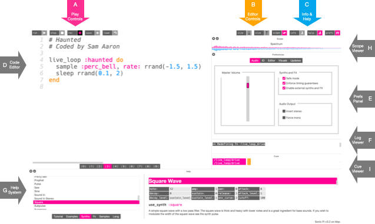
- A - Wiedergabe-Steuerung
- B - Editor-Steuerung
- C - Info und Hilfe
- D - Code-Editor
- E - Einstellungen
- F - Protokoll-Fenster
- G - Hilfe-System
- H - Oszilloskop
- F - Protokoll-Fenster
A. Wiedergabe-Steuerung
Mittels diesen pinkfarbenen Schaltflächen kannst du Klänge abspielen und stoppen. Die Ausführen-Schaltfläche startet den Programm-Code im Editor, Stopp hält den laufenden Programm-Code an, Speichern schreibt den Code in eine Datei und Aufnehmen nimmt die Klänge, die gerade zu hören sind (in einer WAV-Datei) auf.
B. Editor-Steuerung
Diese orangenen Schaltflächen erlauben dir, den Code-Editor zu manipulieren. Mit den Size + und Size - Knöpfen kannst du den Text vergrößern oder verkleinern.
C. Information und Hilfe
Die blauen Schaltflächen bieten dir Zugriff auf Informationen, die Hilfe und die Voreinstellungen. Der Info-Schalter öffnet ein Fenster mit Informationen über Sonic Pi selbst - das Entwickler-Team, Geschichte, Mitwirkende und Community. Der Help-Schalter zeigt/verbirgt das eingebaute Hilfesystem (F) und Prefs zeigt/verbirgt das Fenster, wo du einige grundsätzliche Einstellungen vornehmen kannst.
D. Code-Editor
In diesem Bereich schreibst du deinen Code und komponierst und führst deine Musik auf. Es ist ein einfacher Texteditor, in dem du Code schreiben, löschen, ausschneiden und einfügen kannst u.s.w. Stelle es dir als sehr einfache Version von Word oder Google Docs vor. Der Editor färbt bestimmte Begriffe automatisch ein, je nachdem, welche Bedeutung sie innerhalb des Codes haben. Am Anfang mag dir das vielleicht ein wenig merkwürdig erscheinen, aber du wirst es bald sehr nützlich finden. Zum Beispiel erkennst du Zahlen sofort daran, dass sie blau sind.
E. Einstellungen
Sonic Pi enthält eine Reihe von veränderbaren Einstellungen, die über den Prefs-Schalter im Info- und Hilfe-Menü erreicht werden können. In den Einstellungen sind einige Optionen verfügbar, die geändert werden können, darunter z. B.: Wechsel in den Mono-Modus, Tauschen der Stereokanäle, Einstellung der Ausführlichkeit der Protokoll-Ausgabe und ein Volumen-Regler. Auf einem Raspberry Pi kannst du hier auch das Ausgabemodul für den Ton auswählen.
F. Protokoll-Fenster
Wenn du deinen Programm-Code laufen lässt, siehst du im Protokoll-Fenster, was das Programm gerade tut. Standardmäßig siehst du eine Nachricht für jeden erzeugten Klang und die exakte Zeit, wann der Klang ausgelöst wurde. Bei der Suche nach Fehlern (Debugging) in deinem Programm-Code kann das sehr hilfreich sein, und du verstehst schneller, was dein Code macht.
G. Hilfe-System
Eines der wichtigsten Elemente des Sonic Pi Programmfensters ist das Hilfe-System, das am unteren Ende des Fensters auftaucht. Du kannst es ein- und ausblenden, indem du den blauen Hilfe-Schalter klickst. Das Hilfe-System zeigt Hilfe und Informationen zu allen Aspekten von Sonic Pi an, einschließlich dieses Tutorials, einer Liste der mitgelieferten Synthesizer, Samples, Beispiele, Effekte (FX) sowie eine komplette Liste aller Funktionen (Sprachbefehle), die Sonic Pi zum Coden von Musik bereitstellt.
H. Oszilloskop
Das Oszilloskop kann dir die Töne die du hörst, anzeigen. Du kannst leicht erkennen, dass die Sägezahnwelle wie eine Säge aussieht und der Beep wie eine kurvige Sinus-Welle. Du kannst auch den Unterschied zwischen lauten und leisen Tönen anhand der Größe der Linien erkennen. Es gibt drei Oszilloskope, mit denen du spielen kannst. Standard ist ein aus dem linken und rechten Kanal kombiniertes Oszilloskop, es gibt daneben ein Stereo-Oszilloskop, das beide Kanäle einzeln anzeigt. Und zu guter Letzt gibt es das Lissajous-Oszilloskop, das dir die Phasen-Beziehung zwischen dem linken und rechten Kanal anzeigt - es ermöglicht dir auch das Zeichnen von Bildern mit Klängen (https://de.wikipedia.org/wiki/Lissajous-Figur).
I. Protokoll-Fenster
Alle internen und externen Ereignisse (in Sonic Pi Cues genannt) werden automatisch im Cue-Protokoll angezeigt. Betätigst du zum Beispiel einen verbundenen MIDI-Controller, erscheint die Bezeichnung des betätigten Schalters/Reglers und des Controllers im Protokoll. Sobald du die Grundlagen der Erzeugung und Hervorbringung von Klängen gemeistert hast, wirst du auch Cues für Klänge oder ganze Abschnitte von Klängen mit diesen Mitteln steuern wollen. Cue-Ereignisse (cue events) sind Indikatoren dafür, dass etwas geschehen ist. Zum Beispiel schickt ein Live-Loop jedes Mal wenn er eine Runde ausführt ein solches Cue-Ereignis, das im Cue-Protokoll angezeigt wird. Auch externe Ereignisse, wie MIDI-Signale von angeschlossenen MIDI-Geräten, und OSC-Signale von anderen Programmen und Computern werden im Cue-Protokoll angezeigt. Zudem ist es auch möglich mithilfe der cue-Funktion Einträge im Protokoll zu generieren. In den Abschnitten 10 bis 12 lernst du im einzelnen, wie du Protokoll-Einträge als Trigger (Auslöser) für andere Abläufe benutzen kannst.
1.3 Lernen durch Spielen
Sonic Pi ermutigt dich etwas über Computer und Musik zu lernen - durch Spielen und Experimentieren. Das aller Wichtigste ist, dass du Spaß hast, und bevor du es überhaupt bemerkst, wirst du zufällig gelernt haben Code zu schreiben, Musik zu komponieren und aufzuführen.
Es gibt keine Fehler
Wo wir gerade dabei sind, möchte ich dir noch einen Rat geben, etwas das ich in den Jahren, in denen ich Musik live programmiert habe gelernt habe - es gibt keine Fehler, nur Gelegenheiten. Ich habe das oft im Bezug auf Jazz gehört, aber es trifft ebenso gut auf Live-Coding zu. Es spielt keine Rolle, wie viel Erfahrung du hast, ob du ein absoluter Anfänger oder ein erfahrender Live-Coder bist. Du wirst Code laufen lassen, der vollkommen unerwartete Ergebnisse hervorbringt. Kann sein, dass es unglaublich cool klingt - dann mache da weiter. Wie dem auch sei, kann sein, dass es schrecklich klingt und vollkommen fehl am Platz ist. Es ist egal, wenn das passiert, wichtig ist, was du dann damit als Nächstes tust. Nimm den Klang, bearbeite ihn und verwandle ihn in etwas Tolles. Die Menge wird durchdrehen.
Beginne einfach
Wenn du lernst, willst du die tollen Sachen vielleicht am liebsten sofort machen. Halte solche Gedanken fest, aber sieh sie als ein Ziel an, welches du etwas später erreichen wirst. Denke zunächst erst einmal an die einfachste Sache, die du schreiben kannst, die dir Spaß machen würde und dir lohnend erscheint; diese Sache ist ein kleiner Schritt auf dem Weg zu den faszinierenden Dingen, die dir im Kopf herum gehen. Wenn dir die Idee zu diesem einfachen Schritt klar ist, versuche ihn umzusetzen, spiele damit herum und finde heraus, auf was für neue Ideen du dadurch kommst. Du wirst bald sehr viel Spaß daran haben und echte Fortschritte machen.
Stelle sicher, dass du deine Werke mit anderen teilst!
2 Synthesizer
Ok, genug der Einführung - lasst uns Klänge machen.
In diesem Abschnitt behandeln wir die Grundlagen des Triggerns (Auslösen) und Manipulierens von Synths. Synth ist die Kurzform von Synthesizer - dem genauen Wortlaut für etwas, das Klänge erzeugt. Typischerweise sind Synths ziemlich kompliziert im Gebrauch, vor allem analoge Synths wie Eurorack-Module, untereinander verbunden mit einem Durcheinander von Kabeln. Sonic Pi gibt dir eine Vielzahl solcher Möglichkeiten auf eine einfache und gut zugängliche Art.
Lass dich nicht täuschen von der einfachen Programmoberfläche von Sonic Pi. Wenn du willst, kannst du damit sehr tief in sehr ausgeklügelte Klangmanipulationen eintauchen. Also festhalten...
2.1 Deine ersten Beeps
Sieh dir den folgenden Code an:
play 70
Damit fängt alles an. Leg los, kopiere und setze das in das Code-Fenster oben im Programm ein (der große weiße Bereich unter der Ausführen-Schaltfläche). Nun klicke auf Ausführen...
Beep!
Stark. Klicke die Schaltfläche nochmal. Und nochmal. Und nochmal...
Wow, verrückt, ich bin sicher, du könntest das den ganzen Tag lang machen. Aber halt, bevor du dich in einem endlosen Strom von Piepstönen verlierst, versuche es mit einer anderen Zahl:
play 75
Hörst du den Unterschied? Nimm eine kleinere Zahl:
play 60
Also, niedrigere Zahlen machen tiefere Töne und höhere Zahlen höhere Töne. Wie bei einem Klavier erzeugen, von links nach rechts gesehen, die niedrigeren Tasten weiter links tiefere Töne als die höheren Tasten weiter rechts, die höhere Töne erzeugen.
Es ist gut zu wissen, dass das C in der vierten Oktave mit der Zahl 60 bezeichnet wird. play 60 spielt also ein C der vierten Oktave. Um den nächsthöheren Ton rechts davon auf der Klaviatur zu spielen, musst du 1 zu 60 addieren und play 61 schreiben. Das ist dann die schwarze Taste rechts vom C, ein Cis (oder C# in englischer Schreibweise). Um nun ein D, den nächst höheren Ton rechts davon, zu spielen, schreibe play 62.
Keine Sorge, wenn du keine Ahnung hast, was das alles bedeutet. Mir ging es genauso als ich anfing. Für den Beginn reicht es völlig zu wissen, niedrigere Zahlen bedeuten tiefere Klänge und höhere Zahlen bedeuten höhere Klänge.
Akkorde
Eine Note zu spielen kann ganz lustig sein, aber mehrere zur selben Zeit zu spielen ist noch besser. Versuche es:
play 72
play 75
play 79
Jazzig! Wenn du also mehrere plays hinschreibst, spielen sie alle zur selben Zeit. Probiere selbst aus - welche Nummern klingen gut zusammen? Welche klingen fürchterlich? Experimentiere, erforsche und finde es für dich selbst heraus.
Melodie
Einzelne Noten und Akkorde zu spielen macht Spaß - aber wie wäre es mit einer Melodie? Was, wenn du eine Note nach der anderen spielen wolltest und nicht alle zur selben Zeit? Also, das ist ganz einfach, du brauchst nur ein sleep zwischen den Noten:
play 72
sleep 1
play 75
sleep 1
play 79
Wie hübsch, ein kleines Arpeggio. Was bedeutet die 1 in sleep 1? Sie gibt die Dauer von sleep an. Tatsächlich bedeutet das: Schlafe für einen Schlag. Aber vorläufig können wir uns vorstellen, dass es bedeutet: Schlafe für eine Sekunde. Wie könnten wir unser Arpeggio schneller ablaufen lassen? Dazu brauchen wir kürzere Werte für sleep. Wie wäre es z. B. mit der Hälfte, also 0.5:
play 72
sleep 0.5
play 75
sleep 0.5
play 79
Achte darauf, wie die Melodie nun schneller spielt. Probiere es für dich selbst aus, ändere die Zeiten - verwende unterschiedliche Zeiten und Noten.
Versuche einmal Zwischennoten wie play 52.3 und play 52.63. Es gibt überhaupt keinen Grund, nur ganze Zahlen zu verwenden. Spiel damit herum und hab Spaß dabei. Beachte dabei, dass Computer grundsätzlich die englische Schreibweise für Zahlen verwenden - setze also stets einen Punkt vor die Nachkommastellen (sic!), kein Komma!
Traditionelle Notennamen
Beachte für das folgende, dass Sonic Pi die englischen Notennamen verwendet, Fis ist F sharp oder auch F# und Fes ist F flat bzw. Fb. Die Note H heißt im Englischen B. Für die unter euch, die die musikalische Notation schon ein wenig kennen (keine Sorge, wenn nicht - du brauchst es nicht unbedingt) - vielleicht möchtet ihr eine Melodie mit Notennamen anstelle von Zahlen schreiben, also C oder F#. Auch das geht mit Sonic Pi. Du kannst folgendes machen:
play :C
sleep 0.5
play :D
sleep 0.5
play :E
Denk daran, direkt vor den Notennamen einen Doppelpunkt : zu stellen, sodass dieser sich Pink färbt. Du kannst ebenfalls die Oktave festlegen, indem du eine Zahl direkt hinter den Notennamen schreibst:
play :C3
sleep 0.5
play :D3
sleep 0.5
play :E4
Wenn du eine Note um einen Halbton erhöhen willst, füge ein s hinzu, also play :Fs3. Und wenn du eine Note um einen Halbton verringern möchtest, füge ein b an, also play :Eb3.
Es gibt auch eine praktische Abkürzung für eine Pause (eine musikalische Art zu sagen, dass anstelle einer Note nichts gespielt werden soll) mit :r, :rest oder nil.
Jetzt spiel' verrückt und baue dir deine eigenen Melodien.
2.2 Synth-Optionen
Genauso wie es dich steuern lässt, welche Noten du erzeugst und welche Samples du abspielst, bietet dir Sonic Pi eine ganzen Bandbreite von Optionen, um die Klänge zu gestalten und zu steuern. Wir werden viele davon in diesem Tutorial behandeln, und für jede Option gibt es eine ausführliche Dokumentation im Hilfe-Fenster. Für den Moment werden wir uns zunächst zwei der nützlichsten ansehen: Amplitude (Lautstärke) und Pan (Panorama). Aber vorher will ich kurz erklären, was Optionen eigentlich sind.
Optionen
Die Synths von Sonic Pi lassen sich über verschiedene Optionen (oder kurz: Opts) verändern. Opts sind Regler, die an play oder sample übergeben werden; sie verändern und steuern unterschiedliche Aspekte der Klänge, die du hörst. Jeder Synth hat seinen eigenen Satz Opts, um den Klang fein einzustellen. Es gibt auch Opts, die für viele Klänge identisch sind, z.B. amp: und Hüllkurven-Opts (die wir in einer anderen Sektion besprechen).
Opts bestehen aus zwei Teilen, ihrem Namen (der Name des Reglers) und ihrem Wert (der Wert, auf den du den Regler setzten möchtest). Zum Beispiel könntest du eine Option mit dem Namen cheese: haben, der du den Wert 1 geben möchtest.
Opts werden den Aufrufen von play und sample nach einem Komma , übergeben, dem der Name der Option folgt, etwa amp: (vergiss den Doppelpunkt : nicht), dann eine Leerstelle und schließlich der Wert der Option. Zum Beispiel:
play 50, cheese: 1
(cheese: ist keine gültige Option, wir nehmen sie hier nur als Beispiel).
Du kannst mehrere Opts hintereinander schreiben, indem du sie jeweils mit einem weiteren Komma abtrennst:
play 50, cheese: 1, beans: 0.5
Die Reihenfolge der Opts spielt keine Rolle, so dass die folgende Zeile hätte dasselbe Ergebnis:
play 50, beans: 0.5, cheese: 1
Opts, die der Synth nicht kennt, ignoriert er einfach. (wie cheese und beans, die ja nun wirklich alberne Namen für Optionen sind!)
Wenn du aus Versehen zweimal dieselbe Opt mit unterschiedlichen Werten benutzt, gewinnt die letzte. Im folgenden Beispiel wird beans den Wert 2 bekommen und nicht 0.5:
play 50, beans: 0.5, cheese: 3, eggs: 0.1, beans: 2
Viele Dinge in Sonic Pi akzeptieren Optionen, also verbringe ein wenig Zeit damit zu lernen, wie du sie einsetzen kannst, und du wirst bald startklar sein! Spielen wir mal mit unserer ersten Opt: amp:.
Amplitude
Die Amplitude ist wie der Computer die Lautheit eines Klangs repräsentiert. Eine hohe Amplitude bringt einen lauten Klang hervor, und eine niedrige Amplitude ergibt einen leisen Klang. So wie Sonic Pi Zahlen dazu benutzt, um Zeit und Töne darzustellen, bildet es auch die Lautstärke mit Hilfe von Zahlen ab. Eine Amplitude von 0 bedeutet Stille (du wirst nichts hören), eine Amplitude von 1 steht für normale Lautstärke. Du kannst die Amplitude aufdrehen auf 2, 10, 100. Aber Vorsicht: Wenn die Amplitude aller gemeinsamen Klänge zu hoch wird, setzt Sonic Pi einen so genannten Kompressor ein, der sie zusammen quetscht, damit die Klänge nicht zu laut für dein Ohr werden. Oft klingt das dann matschig und schräg. Verwende also lieber niedrige Amplituden, das heißt im Bereich zwischen 0 und 0.5, um Kompression zu verhindern.
Amp aufdrehen
Um die Amplitude eines Klangs zu ändern, setze die Opt amp: ein. Um zum Beispiel mit halber Amplitude abzuspielen übergebe 0.5:
play 60, amp: 0.5
Für die doppelte Amplitude übergebe 2:
play 60, amp: 2
Die amp:-Opt beeinflusst nur den Aufruf von play, mit der sie unmittelbar zusammenhängt. Das heißt, in dem folgenden Beispiel wird der erste Aufruf von play mit halber Lautstärke gespielt und der zweite wieder mit der Standardlautstärke (1):
play 60, amp: 0.5
sleep 0.5
play 65
Natürlich kannst du für jeden Aufruf von play andere Werte für amp: festlegen:
play 50, amp: 0.1
sleep 0.25
play 55, amp: 0.2
sleep 0.25
play 57, amp: 0.4
sleep 0.25
play 62, amp: 1
Panning
Eine weitere interessante Opt ist pan:. Ihr Wert gibt an, aus welcher Richtung der Klang kommt, wenn wir in Stereo hören. Panning nach links bedeutet, dass du denKlang aus dem linken Lautsprecher und Panning nach rechts, dass du ihn aus dem rechten Lautsprecher hörst. Für unsere Werte benutzen wir -1 , um den Klang ganz nach links zu schieben, 0 steht für die Mitte und mit 1 schieben wir den Klang ganz nach rechts. Natürlich können wir jeden Wert zwischen -1 und 1 verwenden, um die Klänge exakt im Stereofeld zu positionieren.
Lasst uns einen Beep nur aus dem linken Lautsprecher abspielen:
play 60, pan: -1
Jetzt aus dem rechten Lautsprecher:
play 60, pan: 1
Nun wollen wir den Klang aus der Mitte zwischen beiden Lautsprechern herauskommen lassen (die Standardposition):
play 60, pan: 0
Jetzt leg' einfach los und verändere die Amplitude und das Panning deiner Klänge!
2.3 Synths wechseln
Bisher hatten wir viel Spaß damit Pieptöne zu erzeugen. Aber wahrscheinlich langweilt es dich langsam, immer wieder denselben Klang zu hören. Ist das alles, was Sonic Pi zu bieten hat? Live-Coding kann doch sicher mehr als nur einen einfachen Piepton zu spielen? Aber klar doch! In diesem Abschnitt schauen wir uns die aufregende Vielfalt der Klänge, die uns Sonic Pi bietet, an.
Synthesizer
Sonic Pi verfügt über eine ganze Palette unterschiedlicher Instrumente, die es Synths nennt (kurz für Synthesizer - Klangerzeuger). Wohingegen Samples bereits aufgenommene Klänge sind. Synths erzeugen neue Klänge, je nachdem, wie du sie steuerst (was wir später in diesem Tutorial untersuchen werden). Die Synths in Sonic Pi sind sehr kraftvoll und ausdrucksstark, und du wirst viel Spaß damit haben sie zu erforschen und damit zu spielen. Lass uns zuerst lernen, wie ein Synth ausgewählt wird, um ihn zu verwenden.
Brummende Sägen und Propheten
Ein lustiger Klang ist die Sägezahn-Welle - probieren wir es mal aus:
use_synth :saw
play 38
sleep 0.25
play 50
sleep 0.25
play 62
Nehmen wir einen anderen Klang - den Prophet:
use_synth :prophet
play 38
sleep 0.25
play 50
sleep 0.25
play 62
Wie wäre es beide Klänge zu verbinden? Zuerst nacheinander:
use_synth :saw
play 38
sleep 0.25
play 50
sleep 0.25
use_synth :prophet
play 57
Jetzt mehrere Töne gleichzeitig (keine Pausen mit sleep zwischen aufeinander folgenden Aufrufen von play):
use_synth :tb303
play 38
use_synth :dsaw
play 50
use_synth :prophet
play 57
Achte darauf, wie das use_synth-Kommando nur die nachfolgenden play-Kommandos beeinflusst. Stell dir das wie einen großen Schalter vor - neue Aufrufe von play werden immer den Synth benutzen, auf den der Schalter gerade zeigt. Du kannst diesen Schalter mit use_synth auf einen anderen Synth umschalten.
Synths entdecken
Um zu entdecken welche Synths Sonic Pi für dich zum Spielen bereithält, schau im Synths-Option im Menü links unten im Hilfe-Fenster nach (gleich neben FX). Es gibt über 20 zur Auswahl. Hier sind einige meiner Favoriten:
:prophet:dsaw:fm:tb303:pulse
Spiele ein bisschen herum und wechsle die Synths, während du spielst. Kombiniere unterschiedliche Synths, um neue Klänge zu erzeugen, oder setze sie für unterschiedliche Sektionen in deinem Stück ein.
2.4 Dauer bei Hüllkurven
In einem früheren Abschnitt haben wir gesehen, wie wir mit dem sleep-Kommando steuern können, dass unsere Klänge ausgelöst (getriggert) werden. Bislang konnten wir aber noch nicht die Dauer unserer Känge steuern.
Dafür uns einfache und doch mächtige Mittel zur Steuerung der Dauer unserer Klänge zu geben, verwendet Sonic Pi den Begriff der ADSR-Hüllkurve (wir werden später in diesem Abschnitt die genaue Bedeutung von ADSR behandeln). Eine Hüllkurve bietet für die Steuerung zwei praktische Eigenschaften:
- Steuerung der Dauer eines Klanges
- Steuerung der Lautstärke eines Klanges
Dauer
Die Dauer beschreibt, wie lange ein Klang anhält. Eine längere Dauer bedeutet, dass du den Klang länger hören kannst. Alle Klänge in Sonic Pi haben eine steuerbare Hüllkurve, und die gesamte Dauer dieser Hüllkurve bestimmt die Dauer des Klanges. Daher steuerst du mit der Dauer der Hüllkurve die Dauer des Klanges.
Amplitude
Die ADSR-Hüllkurve steuert nicht nur die Dauer, sondern ermöglicht dir auch eine genaue Kontrolle über den Verlauf der Lautstärke eines Klanges. Alle hörbaren Klänge beginnen und enden mit Stille; alles was dazwischen liegt, ist nicht still. Hüllkurven erlauben es dir, die Lautstärke der hörbaren Anteile des Klanges zu verschieben, zu verlängern und zu verkürzen. Es ist so, als würdest du eine andere Person anweisen, wie sie mit dem Lautstärkeregler einen Gitarren-Verstärker lauter und leiser drehen soll. Du könntest sie z. B. bitten, "fang mit Stille an, dreh die Lautstärke langsam bis zum Anschlag hoch, lasse es eine Weile so und blende dann schnell runter, so dass es wieder still wird". Genau diese Anweisungen zu geben erlaubt dir Sonic Pi mit Hüllkurven.
Wie wir bereits gesehen haben, bedeutet eine Amplitude von 0 Stille und eine Amplitude von 1 entspricht normaler Lautstärke.
Nun lasst uns auch einen Blick auf jeden einzelnen Teil einer Hüllkurve werfen.
Release-Zeit
Der einzige Teil der Hüllkurve den Sonic Pi standardmäßig einsetzt ist die Release-Zeit. Das ist die Dauer mit der ein Synth-Klang ausklingt. Alle Synths haben eine Release-Zeit von 1, was bedeutet, dass sie eine Dauer von 1 Beat haben (beim Standard-BPM-Wert 60 entspricht das genau 1 Sekunde):
play 70
Diesen Ton wirst du 1 Sekunde lang hören. Probiere es aus und stoppe die Zeit :-) Dies ist die Kurzform der etwas längeren, ausführlichen Variante:
play 70, release: 1
Achte darauf, wie dieser Ton exakt gleich klingt (der Klang ist eine Sekunden lang zu hören). Aber jetzt ist es sehr einfach die Dauer über die release:-Option zu verändern:
play 60, release: 2
Wir können den Synth mit einer sehr kurzen Release-Zeit sehr kurz klingen lassen:
play 60, release: 0.2
Die Dauer des Ausklingens eines Klangs wird Release-Zeit (release phase) genannt. Standardmäßig bedeutet dies ein lineares Ausklingen (das entspricht einer gerade Linie). Das folgende Diagramm zeigt diesen Übergang:
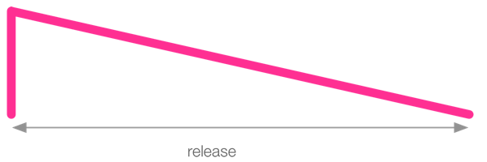
Die senkrechte Linie ganz links im Bild zeigt, dass der Klang mit einer Amplitude von 0 startet, jedoch sofort auf die volle Höhe geht (das ist die Attack-Zeit, die wir gleich behandeln werden). Wenn die volle Höhe erreicht ist, geht die Amplitude in einer geraden Linie bis auf Null zurück, wobei dies so lange dauert, wie es mit release festgelegt wurde. Lange Release-Zeiten erzeugen ein langes Ausklingen des Synths.
Du kannst daher mit der Release-Zeit die Dauer eines Klanges ändern. Spiele damit - füge deiner Musik unterschiedlichen Release-Zeiten hinzu.
Attack-Zeit
Standardmäßig ist die Attack-Zeit für alle Synths 0, das bedeutet, die Amplitude geht unmittelbar von 0 auf 1. Daher setzt der Synth mit einem perkussiven Klang ein. Du möchtest den Klang vielleicht hingegen einblenden. Dies kann mit der attack-Opt erreicht werden. Versuche einige Klänge einzublenden:
play 60, attack: 2
sleep 3
play 65, attack: 0.5
Du kannst mehrere Opts zur gleichen Zeit anwenden. Versuche zum Beispiel für eine kurze Attack-Zeit und eine lange Release-Zeit:
play 60, attack: 0.7, release: 4
Diese Hüllkurve mit einer kurzen Attack-Zeit und langer Release-Zeit sieht so aus:
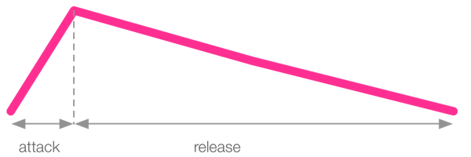
Du kannst es natürlich auch anders herum machen. Probiere eine lange Attack-Zeit und eine kurze Release-Zeit aus:
play 60, attack: 4, release: 0.7
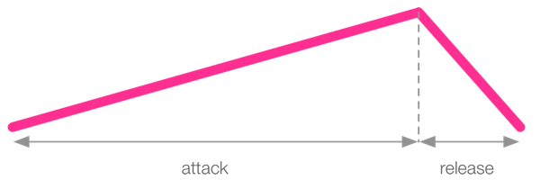
Letztlich kannst du auch eine kurze Attack- und Release-Zeit verwenden - für kürzere Klänge.
play 60, attack: 0.5, release: 0.5
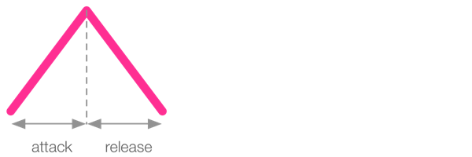
Sustain-Zeit
Zusätzlich zu Attack- und Release-Zeiten kannst du auch eine Sustain-Zeit bestimmen. Diese ist die Zeitdauer, über die der Klang anhält, wenn er die eingestellte Lautstärke erreicht hat, also zwischen der Attack- und den Release-Phase.
play 60, attack: 0.3, sustain: 1, release: 1
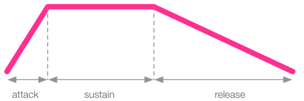
Die Sustain-Zeit ist nützlich für wichtige Klänge, die du in einem Mix hervorheben willst, bevor sie eine optionale Release-Phase erreichen. Natürlich ist es ebenso möglich sowohl den Wert für attack: als auch den für release: auf 0 zu setzen und nur den Sustain zu gebrauchen - ohne Ein- und Ausblendung. Aber Achtung, eine Release-Zeit von 0 kann hörbare Klickgeräusche verursachen, und es ist meist besser einen sehr kleinen Wert wie z. B. 0.2 zu verwenden.
Decay-Zeit
Auf einer weiteren Ebene kannst du auch eine Decay-Zeit festlegen. Das ist eine Phase innerhalb der Hüllkurve, die zwischen der Attack- und der Release-Phase liegt. Die Decay-Zeit legt die Dauer der Phase fest, in der die Amplitude abfällt - von attack_level: zu decay_level: (welches zunächst den gleichen Wert hat wie sustain_level:, solange du den Wert für decay_level: nicht ausdrücklich vorgibst). Standardmäßig steht die Opt decay: auf 0, und sowohl Attack- als auch das Sustain-Level stehen auf 1. Damit die Decay-Zeit einen hörbaren Effekt hat, musst du diese Pegel (Level) festlegen:
play 60, attack: 0.1, attack_level: 1, decay: 0.2, sustain_level: 0.4, sustain: 1, release: 0.5

Decay-Level
Ein weiterer Trick besteht darin, auch die Option decay_level: ausdrücklich auf einen anderen Wert zu setzen, da decay_level: ansonsten automatisch den Wert von sustain_level: erhält. So erlangst du die vollständige Kontrolle über die Hüllkurve. Du kannst nun Hüllkurven wie die folgende erzeugen:
play 60, attack: 0.1, attack_level: 1, decay: 0.2, decay_level: 0.3, sustain: 1, sustain_level: 0.4, release: 0.5
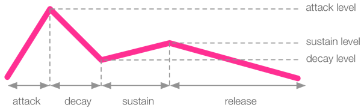
Es ist auch möglich für decay_level: ein höherer Wert als für sustain_level: zu setzen:
play 60, attack: 0.1, attack_level: 0.1, decay: 0.2, decay_level: 1, sustain: 0.5, sustain_level: 0.8, release: 1.5
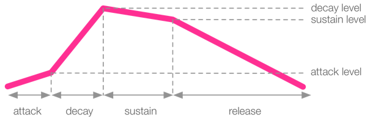
ADSR-Hüllkurven
Fassen wir zusammen: Die ADSR-Hüllkurven von Sonic Pi bestehen aus den folgenden Phasen:
- Attack - die Zeit in der die Amplitude von 0 zu
attack_levelübergeht, - Decay - die Zeit in der die Amplitude von
attack_levelzusustain_levelübergeht, - Sustain - die Zeit in der die Amplitude von
decay_levelzusustain_levelübergeht, - Release - die Zeit in der die Amplitude von
sustain_levelauf 0 übergeht
Es ist wichtig festzuhalten, dass die Dauer eines Klanges der Summe der Zeiten jeder einzelnen dieser Phasen entspricht. Daher hat der folgende Klang eine Dauer von 0.5 + 1 + 2 + 0.5 = 4 Schlägen (Beats):
play 60, attack: 0.5, attack_level: 1, decay: 1, sustain_level: 0.4, sustain: 2, release: 0.5
Nun leg los und spiele ein wenig damit herum deinen Klängen Hüllkurven hinzuzufügen...
3 Samples
Eine weitere großartige Möglichkeit deine Musik zu entwickeln stellt die Verwendung bereits aufgenommener Klänge dar. In der großen Tradition des Hip-Hop nennen wir diese aufgenommenen Klänge auch Samples. Wenn du mit einem Mikrophon nach draußen gehst und den zarten Klang von Regentropfen aufnimmst, die auf ein Zeltdach fallen - dann hast du ein Sample hergestellt.
Mit Samples kannst du in Sonic Pi viele spaßige Sachen machen. Es hat nicht nur über 130 freie Samples mit an Bord, mit denen du sofort jammen kannst, du kannst auch eigene Samples verwenden und manipulieren. Legen wir damit los...
3.1 Samples ansteuern
Bleeps zu spielen ist nur der Anfang. Was auch eine Menge Spaß macht, ist mit aufgenommenen Samples zu spielen. Probier's mal:
sample :ambi_lunar_land
Sonic Pi enthält viele Samples, mit denen du spielen kannst. Du kannst sie genauso benutzen wie du das play-Kommando benutzt. Um mehrere Samples gleichzeitig zu spielen, schreib sie einfach untereinander:
play 36
play 48
sample :ambi_lunar_land
sample :ambi_drone
Wenn du sie über die Zeit verteilt spielen willst, verwende den sleep-Befehl:
sample :ambi_lunar_land
sleep 1
play 48
sleep 0.5
play 36
sample :ambi_drone
sleep 1
play 36
Achte darauf, dass Sonic Pi nicht wartet, bis ein Klang beendet ist, bevor es den nächsten startet? Der sleep-Befehl beschreibt nur, in welchem Abstand ein Klang erneut getriggert (ausgelöst) wird. Dies erlaubt dir Klänge in Schichten übereinander legen und interessante Überlappungseffekte herzustellen.
Samples entdecken
Du kannst die Samples, die Sonic Pi mitbringt, auf zwei Arten entdecken. Erstens kannst du dieses Hilfe-System benutzen. Klicke links unten im Menü auf Samples , wähle eine Kategorie aus und du siehst eine Liste aller darin verfügbaren Klänge.
Alternativ kannst du das Auto-Completion System (Auto-Vervollständigung) verwenden. Tippe einfach den Anfang des Namens einer Sample-Kategorie, wie z. B.: sample :ambi_, dann klappt ein Menü mit allen dazu passenden Sample-Namen auf. Versuche einen der folgenden Anfänge von Kategorie-Namen:
:ambi_:bass_:elec_:perc_:guit_:drum_:misc_:bd_
Jetzt leg los und mixe Samples in deine Kompositionen!
3.2 Sample-Parameter
Genauso wie bei den Synths können wir unsere Klänge mit Parametern steuern. Samples unterstützen genau den selben Parameter-Mechanismus. Besuchen wir unsere Freunde amp: und pan: noch einmal.
Samples verstärken
Du kannst die Amplitude (Lautstärke) von Samples genau mit der selben Methode steuern wie bei den Synths:
sample :ambi_lunar_land, amp: 0.5
Samples pannen
Wir können auch den pan:-Parameter auf Samples anwenden. Hier zum Beispiel spielen wir den Amen-Break zunächst für das linke und nach der Hälfte nochmals für das rechte Ohr:
sample :loop_amen, pan: -1
sleep 0.877
sample :loop_amen, pan: 1
0.877 ist genau die Hälfte der Dauer des Amen-Breaks in Sekunden.
Beachte: Wenn du mit use_synth_defaults Grundeinstellungen für einen Synth setzt (was wir später behandeln werden), werden diese von Samples ignoriert.
3.3 Samples dehnen
Jetzt können wir schon eine Reihe Synths und Samples spielen, um damit Musik zu machen. Es wird Zeit zu lernen, wie wir diese Synths und Samples verändern können, um unsere Musik einzigartiger und spannender zu gestalten. Als Erstes erkunden wir, wie sich Samples strecken und stauchen lassen.
Samples Representation
Samples sind aufgenommene Klänge, gespeichert als eine Reihe von Zahlen, die repräsentieren wie die Lautsprechermembran sich bewegen muss, um den Klang wiederzugeben. Die Lautsprechermembran kann sich nach innen und nach außen bewegen und die Zahlen geben deshalb an, wie weit sich die Membran zu jedem Zeitpunkt nach innen oder außen bewegen muss. Um einen Klang als Aufnahme wirklichkeitsgetreu wiederzugeben, muss das Sample für jede Sekunde viele tausend Zahlen speichern! Sonic Pi nimmt diese Zahlenreihe und gibt sie in der richtigen Geschwindigkeit (sample rate) aus, um den Lautsprecher in deinem Computer genau so bewegen, dass der Klang richtig wiedergegeben wird. Es macht aber auch Spaß, die Geschwindigkeit mit der die Zahlen ausgegeben werden zu ändern, um den Klang zu verändern.
Geschwindigkeit ändern
Lass uns mit einem der Ambient-Klänge spielen: :ambi_choir. Um die Standard-Geschwindigkeit zu verändern kannst du die Opt rate: an sample übergeben:
sample :ambi_choir, rate: 1
Das Sample wird unverändert mit der Standard-Geschwindigkeit (1) abgespielt, also nichts Besonderes. Aber wir können die Zahl jederzeit verändern. Wie wär's mit 0.5?
sample :ambi_choir, rate: 0.5
Wow! Was ist denn jetzt los? Also, hier passieren zwei Dinge. Erstens braucht das Sample doppelt so lange und zweitens klingt er eine Oktave niedriger. Sehen wir uns das ein bisschen genauer an.
Lasst uns stretchen
Mit dem Amen-Break-Sample macht das Strecken und Stauchen besonders viel Spaß. Bei normaler Geschwindigkeit würden wir es vielleicht in einem Drum 'n' Bass-Track verwenden:
sample :loop_amen
Aber mit einer anderen Geschwindigkeit passt es auch zu anderen Stilen. Probiere es aus mit halber Samplerate für Hip-Hop alter Schule:
sample :loop_amen, rate: 0.5
Wenn wir es beschleunigen, erreichen wir Jungle-Territorium:
sample :loop_amen, rate: 1.5
Und als letzten Party-Trick - schauen wir mal, was passiert, wenn wir eine negative Rate angeben:
sample :loop_amen, rate: -1
Wow! Das Sample spielt rückwärts! Jetzt probiere mit vielen unterschiedlichen Samples und unterschiedlichen Sampleraten herum. Versuch es mit sehr hohen oder mit verrückt langsamen Geschwindigkeiten. Finde heraus, welche spannenden Klänge du produzieren kannst.
Eine einfache Erklärung der Samplerate
Ein nützlicher Weg ist sich Samples als Sprungfedern vorzustellen. Samplerate (auch Abtastrate) ist, als ob man die Sprungfeder zusammendrückt oder auseinanderzieht. Wenn du ein Sample mit derRate 2 abspielst, drückst du die Feder zusammen, bis sie nur noch die Hälfte ihrer normalen Länge hat. Das Sample braucht nur die Hälfte der Abspielzeit, weil es kürzer ist. Wenn du das Sample mit halber Rate abspielst, ziehst du die Feder auf ihre doppelte Länge auseinander. Das Sample braucht nun doppelt so lange, weil es länger ist. Je mehr Du quetscht (höhere Rate), desto kürzer das Sample, je mehr du streckst (geringere Rate), desto länger das Sample.
Wenn du eine Sprungfeder zusammendrückt, erhöhst du ihre Dichte (die Anzahl der Windungen je Zentimeter) - das entspricht einem Sample, das höher klingt. Wenn du die Sprungfeder auseinanderziehst, verringerst du ihre Dichte, entspricht das einem, das tiefer klingt.
Die Mathematik hinter der Samplerate
(Dieser Abschnitt ist für diejenigen gedacht, die an den Details interessiert sind. Er kann gerne übersprungen werden...)
Wie wir oben gesehen haben, wird ein Sample durch eine lange Reihe von Zahlen dargestellt, die der Lautsprechermembran sagen, wo sie im Verlauf der Zeit sein soll. Wir können diese Zahlenreihe nehmen, um eine Kurve zu zeichnen, die ungefähr so aussieht:
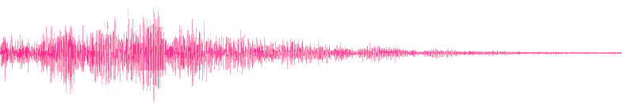
Vielleicht hast du Bilder wie dieses schon einmal gesehen. Das ist die Waveform (Wellenform) eines Samples. Es ist einfach eine Kurve aus Zahlenwerten. Typischerweise besteht eine Kurve wie diese aus 44100 Datenpunkten je Sekunde (das hat mit dem Nyquist-Shannon-Abtasttheorem zu tun). Wenn also das Sample 2 Sekunden dauert, dann wird die Kurve aus 88200 Zahlen gebildet, die wir an den Lautsprecher mit einer Rate von 44100 Datenpunkten pro Sekunde senden. Natürlich könnten wir das Sample mit der doppelten Abtastrate senden, also 88200 Datenpunkten pro Sekunde. Dann würde das Sample nur eine Sekunde lang dauern. Wir können es auch mit der halben Rate abspielen; das wären dann 22050 Datenpunkte pro Sekunde und würde 4 Sekunden dauern.
Die Dauer des Samples ist abhängig von der Abtastrate:
- Wird die Abtastrate verdoppelt, halbiert das die Abspielzeit,
- Wird die Abtastrate halbiert, dann verdoppelt das die Abspielzeit,
- Eine Abtastrate von einem Viertel vervierfacht die Abspielzeit,
- Bei Verwendung einer Abtastrate von 1/10 dauert die Abspielzeit 10 mal länger.
Wir können das in einer Formel abbilden:
neue_sample_dauer = (1 / rate) * sample_dauer
Eine Veränderung der Samplerate beeinflusst auch die Tonhöhe des Samples. Die Frequenz oder Tonhöhe einer Kurve wird dadurch bestimmt, wie schnell sie hoch und runter geht. Unser Gehirn macht aus schnellen Bewegungen einer Lautsprechermembran hohe Töne und aus langsamen tiefe Töne. Deshalb kannst du manchmal sogar sehen, wie sich ein großer Basslautsprecher bewegt, wenn er einen sehr tiefen Ton ausgibt - tatsächlich bewegt er sich dann wesentlich langsamer als ein Lautsprecher, der hohe Töne wiedergibt.
Wenn du eine Wellenform nimmst und sie zusammendrückst, wird sie in jeder Sekunde häufiger hoch und runter gehen. Das lässt den Ton höher klingen. Es zeigt sich, dass die Tonhöhe sich verdoppelt, wenn die Auf- und Abbewegungen pro Sekunde (Oszillationen) verdoppelt werden. Also, wenn du dein Sample mit doppelter Rate abspielst, wird es auch doppelt so hoch klingen, und anders herum wird eine Halbierung der Rate die Frequenz halbieren. Entsprechend werden auch andere Raten die Tonhöhe beeinflussen.
3.4 Samples mit Hüllkurven
Es ist auch möglich, die Dauer und Amplitude eines Samples mit einer ADSR-Hüllkurve zu verändern. Das funktioniert jedoch ein wenig anders als bei den ADSR-Hüllkurven für Synths. Sample-Hüllkurven können die Amplitude und die Dauer eines Samples nur verringern - niemals vergrößern. Das Sample wird entweder stoppen, wenn seine normale Laufzeit vorbei ist, oder wenn die Hüllkurve des Samples endet - je nach dem was zuerst passiert. Mit einem sehr langen release: lässt sich die Dauer eines Samples nicht verlängern.
Amen-Hüllkurven
Kommen wir zu unserem vertrauten Freund zurück, dem Amen-Break:
sample :loop_amen
Ohne Opts hören wir das Sample in seiner gesamten Länge und mit voller Lautstärke. Wenn wir es über 1 Sekunde einblenden wollen, können wir den attack:-Parameter verwenden:
sample :loop_amen, attack: 1
Wähle für ein kürzeres Einblenden einen kürzeren Attack-Wert:
sample :loop_amen, attack: 0.3
Auto-Sustain
Wo sich das Verhalten der ADSR-Hüllkurve von der Hüllkurve für Standard-Synths unterscheidet ist der Sustain-Wert. Bei der Hüllkurve für Standard-Synths steht der Sustain standardmäßig auf 0 - solange du den Wert nicht ausdrücklich setzt. Bei Samples steht der Sustain-Wert standardmäßig auf automagical - das ist in jedem Moment die Zeit, die es braucht, bis der Rest des Samples abgelaufen ist. Darum hören wir das Sample komplett, wenn wir keine Default-Werte übergeben. Wenn die Werte für Attack, Decay, Sustain und Release alle auf 0 stünden, würden wir keinen Pieps hören. Daher berechnet Sonic Pi, wie lange das Sample an sich dauert, zieht jegliche Werte für Attack, Decay und Release davon ab und setzt die restliche Zeit als Sustain-Wert. Wenn die Werte von Attack, Decay und Release zusammengerechnet länger dauern als das gesamte Sample, wird der Sustain-Wert einfach auf 0 gesetzt.
Ausblenden
Um das auszuprobieren, schauen wir uns den Amen-Break im Detail an. Wenn wir Sonic Pi fragen, wie lang das Sample ist:
print sample_duration :loop_amen
Wird 1.753310657596372 ausgeben, was der Länge des Sample in Sekunden entspricht. Wir runden das zur Vereinfachung auf 1.75 ab. Wenn wir nun den Release-Wert auf 0.75 setzen, wird etwas erstaunliches passieren:
sample :loop_amen, release: 0.75
Die erste Sekunde des Sample wird mit voller Lautstärke gespielt, danach wird über eine Periode von 0.75 Sekunden ausgeblendet. Das ist der Auto-Sustain in Aktion. Standardmäßig berechnet Sonic Pi den Release immer vom Ende des Samples aus gesehen. Wenn unser Sample 10.75 Sekunden lang wäre, würden die ersten 10 Sekunden in voller Lautstärke gespielt, bevor über 0.75 Sekunden das Ausblenden erfolgt.
Merke: Normalerweise blendet release: das Ende des Sample aus.
Ein- und Ausblenden
Wir können beide, attack: und release:, gemeinsam mit dem Auto-Sustain nutzen, um über die Dauer des Samples ein- und auszublenden:
sample :loop_amen, attack: 0.75, release: 0.75
Da die Gesamtdauer des Sample 1.75s beträgt und unsere Attack- und Release-Phasen zusammen 1.5s ergeben, erhält die Sustain-Phase automatisch eine Länge von 0.25s. So ist es ganz einfach, das Sample ein- und auszublenden.
Ausdrücklicher Sustain
Wir können ohne weiteres wieder das normale Synth-ADSR-Verhalten aktivieren, indem wir sustain: auf den Wert 0 setzen:
sample :loop_amen, sustain: 0, release: 0.75
Jetzt spielt unser Sample insgesamt nur für 0.75 Sekunden. Mit dem Standardwert 0 für attack: und decay: springt das Sample direkt auf die volle Lautstärke, bleibt dort für 0s und fällt dann innerhalb der Release-Phase mit einer Dauer von 0.75s auf die Lautstärke 0 ab.
Perkussive Becken
Wir können dieses Verhalten gut dazu benutzen, um länger klingende Samples in kürzere, perkussivere Versionen zu verwandeln. Sieh dir das Sample :drum_cymbal_open an:
sample :drum_cymbal_open
Du kannst hören, wie das Becken eine Zeit lang ausklingt. Mit einer leicht veränderten Hüllkurve können wir es perkussiver klingen lassen:
sample :drum_cymbal_open, attack: 0.01, sustain: 0, release: 0.1
Du kannst den Eindruck eines Anschlagens und Abdämpfens des Beckens erzeugen, indem du die Sustain-Phase erhöhst:
sample :drum_cymbal_open, attack: 0.01, sustain: 0.3, release: 0.1
Jetzt versuche Hüllkurven über Samples zu legen. Verändere auch die Samplerate - damit kannst du wirklich interessante Ergebnisse erzielen.
3.5 Teil-Samples
Dieser Abschnitt schließt unsere Erkundung von Sonic Pi's Sample-Player ab. Fassen wir noch einmal zusammen. Wir haben uns angesehen, wie wir Samples abspielen können:
sample :loop_amen
Dann haben wir gesehen, dass wir die Samplerate ändern können - etwa um ein Sample mit halber Geschwindigkeit abzuspielen:
sample :loop_amen, rate: 0.5
Als nächstes haben wir einen Blick darauf geworfen, wie wir ein Sample ein- und ausblenden können (z. B. mit halber Geschwindigkeit):
sample :loop_amen, rate: 0.5, attack: 1
Wir haben uns auch angeschaut, wie wir einen Sample-Anfang perkussiver klingen lassen können, indem wir sustain: ausdrücklich einen Wert zuweisen, und sowohl Attack als auch Release auf kurze Werte setzen:
sample :loop_amen, rate: 2, attack: 0.01, sustain: 0, release: 0.35
Wäre es aber nicht toll, wenn wir ein Sample nicht immer vom Anfang starten lassen müssten? Wäre es nicht auch toll, wenn wir das Sample nicht immer erst am Ende stoppen könnten?
Einen Startpunkt bestimmen
Es ist möglich einen beliebigen Startpunkt in einem Sample als Wert zwischen 0 und 1 auszuwählen. Dabei ist 0 der Anfang, 1 das Ende und 0.5 die Mitte des Samples. Versuchen wir also jetzt nur die zweite Hälfte des Amen Break zu spielen:
sample :loop_amen, start: 0.5
Wie wäre es mit nur dem letzten Viertel des Samples:
sample :loop_amen, start: 0.75
Einen Endpunkt bestimmen
Auf ähnliche Weise können wir mit einem Wert zwischen 0 und 1 einen beliebigen Endpunkt im Sample festlegen. Beenden wir den Amen-Break nach der ersten Hälfte:
sample :loop_amen, finish: 0.5
Start- und Endpunkt bestimmen
Natürlich können wir diese beiden auch kombinieren, um so einen beliebigen Abschnitt des Samples abzuspielen. Wie wäre es mit nur einem kurzen Abschnitt in der Mitte:
sample :loop_amen, start: 0.4, finish: 0.6
Was passiert, wenn wir eine Startposition hinter der Endposition auswählen?
sample :loop_amen, start: 0.6, finish: 0.4
Cool! Es spielt rückwärts!
Kombinieren mit Samplerate
Wir können diese neue Fähigkeit, beliebige Abschnitte eines Klangs zu spielen, unserem Freund rate: kombinieren. Zum Beispiel können wir einen sehr kurzen Abschnitt des Amen-Breaks sehr langsam spielen:
sample :loop_amen, start: 0.5, finish: 0.7, rate: 0.2
Kombinieren mit Hüllkurven
Und schließlich können wir all dies mit unseren ADSR-Hüllkurven kombinieren, um interessante Ergebnisse hervorzubringen:
sample :loop_amen, start: 0.5, finish: 0.8, rate: -0.2, attack: 0.3, release: 1
Jetzt leg los und vermansche Samples mit all diesem spaßigen Zeug...
3.6 Externe Samples
Während die mitgelieferten Samples die schnell an den Start bringen und loslegen lassen, möchtest du vielleicht aber mit anderen aufgenommenen Klängen in deiner Musik experimentieren. Sonic Pi unterstützt das ausdrücklich. Lass uns aber zunächst über die Übertragbarkeit deines Stücks sprechen.
Übertragbarkeit
Wenn du dein Stück nur basierend auf den eingebauten Synths und Samples komponierst, braucht es nur den Code, um deine Musik originalgetreu wiederzugeben. Denke einen Augenblick darüber nach - das ist erstaunlich! Ein einfaches Stück Text, das du per E-Mail herumschicken oder in einem Gist ablegen kannst, repräsentiert alles, was du brauchst, um deine Klänge zu reproduzieren. Das macht es sehr einfach mit deinen Freunden zu teilen. Sie brauchen nur den Code von dir.
Wie auch immer, wenn du anfängst selbst aufgenommene Samples zu verwenden, verlierst du diese Übertragbarkeit. Das liegt daran, dass die Leute, um deine Musik zu reproduzieren nicht nur den Code, sondern auch deine Samples benötigen. Das schränkt die Möglichkeit für andere ein, mit deiner Arbeit zu experimentieren, sie zu verändern, sie zu vermanschen (mash-up). Natürlich sollte dich das nicht davon abhalten deine eigenen Samples zu verwenden, es ist nur etwas, das du in deine Überlegungen einbeziehen solltest.
Lokale Samples
Wie geht das nun, eine beliebige WAV-, AIFF- oder FLAC-Datei von deinem Computer abzuspielen? Alles was du dafür tun musst ist sample den Pfad zu der Datei zu übergeben:
# Raspberry Pi, Mac, Linux
sample "/Users/sam/Desktop/my-sound.wav"
# Windows
sample "C:/Users/sam/Desktop/my-sound.wav"
Sonic Pi wird das Sample nun automatisch laden und spielen. Du kannst auch all die Standard-Parameter, die du bereits kennst, an sample übergeben:
# Raspberry Pi, Mac, Linux
sample "/Users/sam/Desktop/my-sound.wav", rate: 0.5, amp: 0.3
# Windows
sample "C:/Users/sam/Desktop/my-sound.wav", rate: 0.5, amp: 0.3
3.7 Sample-Pakete
Hinweis: Dieser Abschnitt des Tutorials behandelt das fortgeschrittene Thema der Arbeit mit großen Verzeichnissen deiner eigenen Samples. Dies wird nützlich sein, wenn du deine eigenen Sample Packs heruntergeladen oder gekauft hast und diese in Sonic Pi nutzen möchtest.
Überspringe diesen Abschnitt, wenn dir die mitgelieferten Samples für die Arbeit ausreichen.
Wenn du mit großen Ordnern mit externen Samples arbeitest, kann es mühselig sein, jedes Mal den vollständigen Pfad eingeben zu müssen, um ein bestimmtes Sample abzuspielen.
Sagen wir, du hast zum Beispiel folgenden Ordner auf deinem Computer:
/pfad/zu/meinen/samples/
Wenn wir in diesen Ordner schauen, finden wir die folgenden Samples:
100_A#_melody1.wav100_A#_melody2.wav100_A#_melody3.wav120_A#_melody4.wav120_Bb_guit1.wav120_Bb_piano1.wav
Üblicherweise können wir den vollständigen Pfad nutzen um das Piano-Sample abzuspielen:
sample "/pfad/zu/meinen/samples/120_Bb_piano1.wav"
Wenn wir dann das Gitarren-Sample abspielen wollen, können wir ebenfalls den vollständigen Pfad nutzen:
sample "/pfad/zu/meinen/samples/120_Bb_guit.wav"
Wie auch immer, beide Aufrufe verlangen von uns, dass wir die Namen der Samples innerhalb des Verzeichnisses kennen. Was, wenn wir einfach nur schnell die einzelnen Samples nacheinander abhören wollen?
Sample-Packs indizieren
Wenn wir das erste Sample in einem Verzeichnis abspielen wollen, müssen wir nur den Verzeichnisnamen an sample und den Index 0 eingeben. Folgendermaßen:
sample "/pfad/zu/meinen/samples/", 0
Wir können sogar eine Verknüpfung zu unserem Verzeichnispfad anlegen, indem wir eine Variable nutzen:
samps = "/pfad/zu/meinen/samples/"
sample samps, 0
Wenn wir nun das zweite Sample in unserem Verzeichnis abspielen wollen, müssen wir lediglich 1 zu unserem Index hinzufügen:
samps = "/pfad/zu/meinen/samples/"
sample samps, 1
Beachte, dass wir nicht mehr die Namen der Samples im Verzeichnis kennen müssen - wir müssen nur das Verzeichnis selbst kennen (oder eine Verknüpfung dort hin). Wenn wir nach einer Index-Zahl fragen, die größer ist als die Anzahl an Samples, fängt die Liste einfach von vorne an - wie bei Ringen. Also egal welche Index-Zahl wir nutzen, es ist garantiert, dass wir eines der Samples aus dem Verzeichnis bekommen.
Sample-Packs filtern
Gewöhnlich reicht das Indizieren aus, aber manchmal benötigen wir machtvollere Mittel, um unsere Samples zu organisieren. Glücklicherweise packen viele Sample-Packs nützliche Informationen in die Dateinamen. Lass uns einen weiteren Blick auf die Dateinamen der Samples in unserem Verzeichnis werfen:
100_A#_melody1.wav100_A#_melody2.wav100_A#_melody3.wav120_A#_melody4.wav120_Bb_guit1.wav120_Bb_piano1.wav
Achte darauf, dass In diesen Dateinamen einiges an Informationen enthalten ist. Zuerst haben wir die BPM ("beats per minute") des Samples am Beginn. D.h. das Piano-Sample ist in 120 BPM und unsere ersten drei Melodien sind in 100 BPM. Außerdem steht in den Sample-Namen die Tonart. Das Gitarren-Sample ist in Bb, und die Melodien sind in A#. Diese Information ist für das Mixen der Samples mit unserem Code sehr wichtig. Zum Beispiel wissen wir, dass wir das Piano-Sample nur mit Code verwenden können, der 120 BPM und die Tonart Bb hat.
Es stellt sich heraus, dass wir dies spezielle Namensgebung unserer Sample-Sets im Code nutzen können, um die Samples herauszufiltern, die wir wollen. Wenn wir zum Beispiel mit 120 BPM arbeiten, können wir mit folgendem Code alle Samples filtern, deren Name den String "120" enthält:
samps = "/pfad/zu/meinen/samples/"
sample samps, "120"
Dieser Code wird uns das erste passende Sample abspielen. Wenn wir das zweite passende Sample abspielen wollen, müssen wir nur eine Index-Zahl nutzen:
samps = "/pfad/zu/meinen/samples/“
sample samps, "120", 1
Wir können sogar mehrere Filter gleichzeitig nutzen. Wenn wir ein Sample wollen, dessen Name sowohl den String "120" als auch den String "A#" enthält, können wir das leicht mit dem folgenden Code erreichen:
samps = "/pfad/zu/meinen/samples/"
sample samps, "120", "A#"
Schließlich können wir auch noch unsere üblichen Optionen dem sample-Aufruf anhängen:
samps = "/pfad/zu/meinen/samples/"
sample samps, "120", "Bb", 1, lpf: 70, amp: 2
Quellen
Das Filter-System für Samples versteht zwei Typen von Informationen: Quellen und Filter. Quellen sind Informationen, um eine Liste möglicher Kandidaten zu versammeln. Eine Quelle kann in zwei Formen angegeben werden:
- "/pfad/zu/samples" - eine Zeichenkette (string), die einen gültigen Pfad zu einem Verzeichnis angibt
- "/pfad/zu/samples/foo.wav" - eine Zeichenkette (string), die einen gültigen Pfad zu einem Sample angibt
Die sample-Funktion sammelt alle Quellen und erzeugt daraus eine lange Liste von Kandidaten. Für diese Liste durchsucht die Funktion zunächst alle gültigen Verzeichnispfade und fügt dann alle darin enthaltenen Dateien in den Formaten .flac, .aif, .aiff, .wav, .wave hinzu.
Schau Dir z. B. den folgenden Code an:
samps = "/pfad/zu/meinen/samples/"
samps2 = "/pfad/zu/meinen/samples2/"
path = "/pfad/zu/meinen/samples3/foo.wav"
sample samps, samps2, path, 0
Hier kombinieren wir alle Samples aus zwei Verzeichnissen und fügen noch ein einzelnes Sample hinzu. Wenn "/pfad/zu/meinen/samples/" 3 Samples und "/path/to/my/samples2/" 12 Samples enthielte, hätten wir insgesamt 16 mögliche Samples, die wir indexieren und filtern können (3 + 12 + 1).
Standardmäßig werden nur die Sample-Dateien des angegebenen Verzeichnisses in der Kandidatenliste gesammelt. Manchmal möchtest du vielleicht eine ganze Reihe ineinander verschachtelter Ordner mit Samples durchsuchen und filtern. Das kannst du mit einer rekursiven Suche nach allen Samples in allen Unterordnern erreichen, indem du ** an das Ende des Pfads hängst:
samps = "/path/to/nested/samples/**"
sample samps, 0
Beachte jedoch, dass eine Suche über viele Verzeichnisse hinweg viel Zeit in Anspruch nehmen kann. Allerdings wird der Inhalt aller Ordner, die du als Quellen angegeben hast, zwischengespeichert - die Verzögerung wird also nur bei der ersten Suche auftreten.
Ein wichtiger Punkt zum Abschluss: Die Quelle muss als erstes angegeben werden. Wenn keine Quelle angegeben wird, werden die mitgelieferten Samples als die Standardliste der Kandidaten ausgewählt, mit denen du dann weiter arbeitest.
Filter
Wenn du erst einmal eine Kandidatenliste hast, kannst du die folgenden Filtertypen nutzen, um die Auswahl weiter einzugrenzen:
"foo"filtert alle Dateinamen, in denen diese Zeichenkette vorkommt (abzüglich des Verzeichnispfades und der Dateiendung)./fo[oO]/filtert alle Dateinamen, die diesem regulären Ausdruck entsprechen (abzüglich des Verzeichnispfades und der Dateiendung).:foo- filtert alle Kandidaten, bei denen dieses Schlüsselwort genau dem Dateinamen entspricht (abzüglich des Verzeichnispfades und der Dateiendung).lambda{|a| ... }- Procs mit einem Argument werden als Filter für Kandidaten oder Generator-Funktionen behandelt. Diesem wird die Liste der aktuellen Kandidaten übergeben, und er gibt eine neue Liste von Kandidaten zurück (eine Liste gültiger Pfade zu Sample-Dateien).1- Zahlen wählen direkt den Kandidaten aus, dessen Indexposition dieser Zahl entspricht (wenn nötig wird wie bei einem Ring von vorne begonnen).
Wir können z. B. alle Samples in einem Verzeichnis herausfiltern, deren Dateinamen die Zeichenkette "foo" enthalten, und davon das erste passende Sample mit halber Geschwindigkeit spielen:
sample "/path/to/samples", "foo", rate: 0.5
Sieh' dir die Hilfe zu sample an, sie enthält viele detaillierte Anwendungsbeispiele. Achte darauf, welche Rolle die Sortierung der Filter spielt.
Verbünde
Abschließend sei gesagt, dass du Listen überall verwenden kannst, wo du eine Quelle oder einen Filter einsetzt. Die Liste wird automatisch eingebettet und ihre Inhalte behandelt wie normale Quellen- oder Filterangaben. Daher sind die folgenden Aufrufe von sample alle gleichbedeutend:
sample "/path/to/dir", "100", "C#"
sample ["/path/to/dir", "100", "C#"]
sample "/path/to/dir", ["100", "C#"]
sample ["/path/to/dir", ["100", ["C#"]]]
Zum Abschluss
Das war ein fortgeschrittener Abschnitt für Leute, die machtvollere Möglichkeiten benötigen, um mit Sample-Paketen zu hantieren und sie zu nutzen. Wenn vieles davon für dich im Moment noch wenig Sinn ergeben hat, keine Sorge. Es ist gut möglich, dass du vieles davon jetzt noch nicht brauchst. Dennoch, du wirst merken, wann du es brauchst, und du kannst zurückkommen und den Abschnitt noch einmal lesen, wenn du anfängst mit umfangreicheren Sample-Sammlungen zu hantieren.
4 Zufälligkeit
Eine tolle Möglichkeit deine Musik interessant zu gestalten ist die Nutzung von Zufallszahlen. Sonic Pi bietet einige tolle Funktionen, um deiner Musik Zufälligkeiten hinzuzufügen. Aber bevor wir damit anfangen, musst du noch eine schockierende Wahrheit erfahren: In Sonic Pi bedeutet zufällig nicht wirklich zufällig. Was zum Teufel soll das heißen? Nun, das werden wir sehen.
Wiederholbarkeit
Eine wirklich nützliche Zufallsfunktion ist rrand. Sie liefert dir einen zufälligen Wert zwischen zwei Zahlen - einem Minimal- und einem Maximalwert - (rrand ist ein Kürzel für ranged random, also eine Zufallszahl aus einem bestimmten Zahlenbereich). Versuchen wir mal eine zufällig ausgewählte Note zu spielen:
play rrand(50, 95)
Oh, es hat eine zufällige Note gespielt. Es hat Note 83.7527gespielt. Eine nette zufällige Note zwischen 50 und 100. Aber halt, habe ich gerade diese angeblich zufällige Note exakt bestimmt? Da ist doch etwas nicht ganz sauber. Lasse den Programm-Code noch einmal laufen. Wie bitte? Es hat wieder 83.7527gewählt? Das kann kein Zufall sein!
Die Antwort ist, es ist nicht wirklich zufällig, es ist pseudo-zufällig. Sonic Pi liefert dir zufallsähnliche Zahlen, die sich wiederholen. Das ist sehr nützlich, um sicherzustellen, dass die Musik die du auf deinem Rechner erzeugst, auf jedem anderen Rechner identisch klingt - auch dann, wenn du Zufälligkeiten in deiner Komposition verwendest.
Klar, wenn es, in einem bestimmten Musikstück, jedes Mal 'zufällig' die 83.7527 wählen würde, dann wäre das nicht besonders interessant. Aber das tut es auch nicht. Probiere folgendes:
loop do
play rrand(50, 95)
sleep 0.5
end
Ja! Jetzt klingt es zufällig. Innerhalb eines gegebenen Programmlaufes liefern weitere Aufrufe von Zufallsfunktionen auch zufällige Werte. Trotzdem wird der nächste Programmlauf genau die selbe Abfolge von Zufallswerten liefern und entsprechend auch genau gleich klingen. Es ist als ob Sonic Pi Code immer an denselben Zeitpunkt zurückspringt, wenn der Ausführen-Schalter geklickt wird. Das ist der Murmeltier-Tag der musikalischen Synthese!
Gesiterglocken
Ein schönes Beispiel von Zufälligkeit in Aktion ist das Geisterglocken-Beispiel, in dem das :perc_bell-Sample mit einer zufälligen Samplerate und Pausenzeit zwischen den Glockenklängen abgespielt wird:
loop do
sample :perc_bell, rate: (rrand 0.125, 1.5)
sleep rrand(0.2, 2)
end
Zufällige Begrenzung
Ein anderes unterhaltsames Beispiel für Zufälligkeit ist, einen Synth-Klang zufällig in der Tonhöhe zu begrenzen. Ein toller Synth um das auszuprobieren ist der :tb303-Emulator:
use_synth :tb303
loop do
play 50, release: 0.1, cutoff: rrand(60, 120)
sleep 0.125
end
Zufallsstartpunkte
Was, wenn dir eine bestimmte Zufallsabfolge, die Sonic Pi liefert, dir nicht gefällt? Nun, mit use_random_seed lässt sich sehr gut ein anderer Startpunkt für diese Zufallsabfolge wählen. Der Standard-Startpunkt ist die 0, wähle also einen anderen Startpunkt, und du machst eine andere Zufallserfahrung!
Sieh dir folgenden Code an:
5.times do
play rrand(50, 100)
sleep 0.5
end
Jedes Mal, wenn du diesen Programm-Code laufen lässt, hörst du dieselbe Folge von 5 Noten. Um eine andere Folge zu bekommen, setze einen anderen Startpunkt:
use_random_seed 40
5.times do
play rrand(50, 100)
sleep 0.5
end
Nun produziert Sonic Pi eine andere Folge aus 5 Tönen. Indem du den Startpunkt änderst und dir die Ergebnisse anhörst, kannst du eine Folge finden, die dir gefällt - und wenn du den Code an andere weitergibst, werden sie genau das hören, was auch du gehört hast.
Schauen wir uns noch einige andere nützliche Zufallsfunktionen an.
Auswählen
Eine Sache, die sehr häufig gemacht wird, ist aus einer Liste bekannter Elemente eines zufällig auszuwählen. Zum Beispiel möchte ich vielleicht einen Ton aus der folgenden Liste spielen: 60, 65 oder 72. Das kann ich mit choose erreichen, das mich ein Element aus einer Liste wählen lässt. Zuerst musst ich meine Zahlen in eine Liste packen, indem ich sie, durch Kommas getrennt, in eckige Klammern setze. Danach muss ich sie einfach nur an choose übergeben:
choose([60, 65, 72])
Hören wir uns das mal an:
loop do
play choose([60, 65, 72])
sleep 1
end
rrand
Wir haben rrand schon kennengelernt, aber sehen wir uns das noch einmal genauer an. Es liefert eine zufällige Zahl zwischen zwei Werten - ausschließlich dieser Werte selbst. Das bedeutet, dass weder der minimale noch der maximale Wert jemals ausgegeben werden, immer nur was zwischen den beiden liegt. Diese Zahl wird immer eine Gleitkommazahl (floating point number) sein - also keine ganze Zahl, sondern eine Bruchzahl (Erinnere dich: Computer verwenden für Rechenoperationen stets die englische Schreibweise - daher Punkt, nicht Komma!). Hier Beispiele für Gleitkommazahlen beim Aufruf von rrand(20, 110):
- 87.5054931640625
- 86.05255126953125
- 61.77825927734375
rrand_i
Gelegentlich wirst du jedoch eine ganze Zahl wollen, keine Gleitkommazahl. Hier kommt rrand_i (i für englisch integer, ganze Zahl) zur Hilfe. Es funktioniert ähnlich wie rrand, kann jedoch auch den minimalen oder maximalen Wert als mögliche Zufallszahl liefern. (was bedeutet, dass es einschließlich der begrenzenden Werte funktioniert und nicht ausschließlich). Beispiele wären die Werte, die von rand_i(20,110) ausgeben werden:
- 88
- 86
- 62
rand
Dies wird eine zufällige Gleitkommazahl zwischen 0 (inklusiv) und einem von dir spezifizierten Maximalwert (exklusiv) zurückgeben. Standardmäßig wird ein Wert zwischen 0 und 1 ausgegeben. Daher ist es nützlich für eine Auswahl zufälliger Werte für amp::
loop do
play 60, amp: rand
sleep 0.25
end
rand_i
Ähnlich wie im Verhältnis von rrand_i zu rrand, wird rand_i eine zufällige ganze Zahl zwischen 0 und dem angegebenen Maximalwert zurückgeben.
dice
Manchmal wirst du so tun wollen, als würdest du würfeln (dice) - dies ist ein Sonderfall von rrand_i, bei dem der kleinste Wert immer die 1 ist. Ein Aufruf von dice verlangt von dir die Anzahl von Seiten zu bestimmen, die der Würfel haben soll. Ein normaler Würfel hat 6 Seiten, dice(6) wird dem entsprechend einen der Werte 1, 2, 3, 4, 5 oder 6 zurückgeben. Wie auch immer, in einem Rollenspiel würdest auch Nutzen in einem 4-seitigen Würfel sehen, oder einem 12-seitigen, oder einem 20-seitigen, vielleicht sogar in einem 120-seitigem!
one_in
Schließlich könnte es noch so sein, dass du so tun willst, als ob du beim Würfeln mit einem Standardwürfel eine 6 hast - also den höchsten Wert. one_in gibt dafür mit einer Wahrscheinlichkeit von 1 im Verhältnis zur Anzahl Würfelseiten den Wert wahr (true) zurück. Daher wird one_in(6) mit einer Wahrscheinlichkeit von 1 zu 6 wahr, ansonsten falsch (false). Wahr- und Falsch-Werte sind sehr nützlich bei if-Anweisungen, welche wir in einem späteren Abschnitt dieses Tutorials behandeln werden.
Jetzt los, bringe deinen Code mit ein wenig Zufälligkeit durcheinander!
5 Programmstrukturen
Jetzt, da du die Grundlagen für die Erzeugung von Klängen mit play und sample und die Erzeugung von Melodien und Rhythmen durch den Einsatz von sleep zwischen den Klängen gelernt hast, fragst du dich vielleicht, was dir die Welt des Codes darüber hinaus zu bieten hat...
Nun, ich denke, da kommen noch einige aufregende Sachen auf dich zu! Es ist nämlich so, dass grundlegende Programmstrukturen wie Schleifen (loops), Bedingungen (conditionals), Funktionen (functions) und Stränge (threads) unglaublich machtvolle Werkzeuge sind, um deine musikalischen Ideen auszudrücken.
Sehen wir uns die Grundlagen eingehender an...
5.1 Blöcke
Eine Struktur, der du in Sonic Pi häufig begegnen wirst, ist der Block. Blöcke erlauben uns, mit größeren Abschnitten von Programm-Code nützliche Dinge zu tun. Z. B. konnten wir bisher mit Synth- und Sample-Parametern etwas verändern, das in einer einzelnen Zeile des Codes geschah. Manchmal aber möchten wir etwas Sinnvolles mit einer ganzen Abfolge von Code-Zeilen anstellen. Zum Beispiel möchten wir diese in einer Schleife ablaufen lassen, Hall hinzufügen, sie nur 1 von 5 Malen ablaufen lassen etc. Sieh dir folgenden Code an:
play 50
sleep 0.5
sample :elec_plip
sleep 0.5
play 62
Um etwas auf einen mehrzeiligen Code-Abschnitt anzuwenden, müssen wir Sonic Pi sagen, wo der Code-Block anfängt, und wo er aufhört. Wir verwenden do für den Anfang und end für das Ende. So zum Beispiel:
do
play 50
sleep 0.5
sample :elec_plip
sleep 0.5
play 62
end
Das ist aber noch nicht vollständig und wird nicht funktionieren (versuche es, und du wirst eine Fehlermeldung erhalten), weil wir Sonic Pi noch nicht gesagt haben, was wir mit diesem do/end-Block anstellen wollen. Wir teilen es Sonic Pi mit, indem wir noch einen speziellen Ausdruck vor das do setzen. Wir werden später in diesem Tutorial noch eine Reihe solcher Ausdrücke kennenlernen. Für den Moment ist wichtig zu wissen, dass, wenn du deinen Code zwischen do und end zusammenfasst, dies Sonic Pi sagt, dass du mit diesem Codeabschnitt etwas Bestimmtes machen willst.
5.2 Wiederholung und Schleifen
Bislang haben wir viel Zeit damit verbracht, uns die unterschiedliche Klänge anzusehen, die du mit play- und sample-Blöcken erzeugen kannst. Wir haben auch gelernt, wie wir das Triggern dieser Klänge mit sleep steuern können.
Du hast ja wahrscheinlich herausgefunden, dass du mit diesen Grundbausteinen schon viel Spaß haben kannst. Eine ganz neue Dimension eröffnet sich jedoch, wenn du anfängst die Macht des Programm-Codes zu nutzen, um deine Musiken und Kompositionen zu strukturieren. In den nächsten Abschnitten sehen wir uns einige wirkungsvolle neue Werkzeuge dafür an. Als erstes kommen Iterationen (wiederholte Abläufe) und Schleifen (Loops) dran.
Wiederholung
Möchtest du Code, den du geschrieben hast, einige Male wiederholen? Vielleicht hast du z. B. so etwas:
play 50
sleep 0.5
sample :elec_blup
sleep 0.5
play 62
sleep 0.25
Was, wenn du das drei Male wiederholen wolltest? Nun, wir könnten etwas ganz Einfaches tun, es kopieren und dreimal hintereinander einfügen:
play 50
sleep 0.5
sample :elec_blup
sleep 0.5
play 62
sleep 0.25
play 50
sleep 0.5
sample :elec_blup
sleep 0.5
play 62
sleep 0.25
play 50
sleep 0.5
sample :elec_blup
sleep 0.5
play 62
sleep 0.25
Nun, das ist eine Menge Code! Was wäre, wenn du das Sample in :elec_plip ändern wolltest? Du müsstest alle Stellen mit :elec_blub finden und sie ändern. Und darüber hinaus: Was, wenn du den ursprünglichen Code-Block 50 oder 1000 Mal wiederholen wolltest? Das wäre wirklich eine Menge Code, und eine Menge Zeilen, die du bearbeiten müsstest, wenn du etwas ändern wolltest.
Iteration
Tatsächlich, Programm-Code wiederholt ablaufen zu lassen sollte so einfach sein wie zu sagen, mache das drei Mal. Nun, so ist es auch in etwa. Erinnere dich an unseren Freund, den Code-Block? Wir können damit den Anfang und das Ende des Codes markieren, den wir drei Mal wiederholen wollen. Dafür benutzen wir den speziellen Ausdruck 3.times. Anstelle von mache das drei Mal schreiben wir 3.times do - das ist nicht besonders schwer. Denke daran an das Ende des Codes, den du wiederholen möchtest, end zu schreiben:
3.times do
play 50
sleep 0.5
sample :elec_blup
sleep 0.5
play 62
sleep 0.25
end
Na, ist das nicht viel eleganter als zu kopieren und einzufügen? Wir können dies verwenden um viele schöne sich wiederholende Strukturen zu erzeugen:
4.times do
play 50
sleep 0.5
end
8.times do
play 55, release: 0.2
sleep 0.25
end
4.times do
play 50
sleep 0.5
end
Iterationen verschachteln
Wir können Iterationen in anderen Iterationen verpacken, um interessante Muster zu erzeugen. Zum Beispiel:
4.times do
sample :drum_heavy_kick
2.times do
sample :elec_blip2, rate: 2
sleep 0.25
end
sample :elec_snare
4.times do
sample :drum_tom_mid_soft
sleep 0.125
end
end
Schleifen abspielen
Wenn du etwas sehr oft wiederholen möchtest, könnte es sein, dass du mit sehr hohen Zahlen arbeiten musst, wie zum Beispiel 1000.times do. In einem solchen Fall ergibt es möglicherweise mehr Sinn Sonic Pi zu bitten, den Code endlos zu wiederholen (zumindest, bis du auf die Stopp-Schaltfläche klickst!). Lass uns den Amen-Break unendlich oft wiederholen:
loop do
sample :loop_amen
sleep sample_duration :loop_amen
end
Eine wichtige Sache bei Schleifen (Loops) ist, dass es sich mit ihnen für den Code wie mit schwarzen Löchern verhält. Wenn der Code einmal in einer Schleife abläuft, kann er diese nicht verlassen, bis du auf Stopp klickst - ansonsten wird er für immer in dieser Schleife weiterlaufen. Das bedeutet, wenn hinter deiner Schleife noch weiterer Code steht, wirst du diesen nie hören. Zum Beispiel wird das Becken hinter dieser Schleife niemals spielen:
loop do
play 50
sleep 1
end
sample :drum_cymbal_open
Jetzt fang an und strukturiere deinen Code mit Iterationen und Schleifen!
5.3 Bedingungen
Was du dir wahrscheinlich wünschen wirst, ist nicht einfach nur eine zufällige Note zu spielen (siehe auch den letzten Abschnitt über Zufälligkeit), sondern auch eine zufällige Entscheidung treffen zu können, und je nachdem wie diese ausfällt, den einen oder den anderen Code ablaufen zu lassen. Zum Beispiel könnte es sein, dass du einer Zufälligkeit folgend entweder eine Trommel oder ein Becken abspielen möchtest. Das können wir mit einem if-Ausdruck erreichen.
Eine Münze werfen
Werfen wir also ein Münze: Bei Kopf, spiele eine Trommel, bei Zahl, ein Becken. Das ist leicht. Wir können den Münzwurf mit unserer one_in-Funktion nachbilden (eingeführt im Kapitel über Zufälligkeit), indem wir eine Wahrscheinlichkeit von 1 aus 2 angeben: one_in(2). Das Ergebnis dieser Berechnung können wir nutzen, um zwischen zwei Code-Abschnitten auszuwählen, entweder den Code, um die Trommel zu spielen oder den Code, um das Becken zu spielen:
loop do
if one_in(2)
sample :drum_heavy_kick
else
sample :drum_cymbal_closed
end
sleep 0.5
end
Merke dir, dass if-Anweisungen drei Teile haben:
- Die Frage, die gestellt wird
- Die Auswahl von Programm-Code, der laufen soll (wenn die Antwort auf die Frage ein Ja ist)
- Die zweite Auswahl von Programm-Code, der laufen soll (wenn die Antwort auf die Frage ein Nein ist)
In Programmiersprachen steht typischerweise für das Ja der Ausdruck true und für das Nein der Ausdruck false. Also müssen wir eine Frage finden, auf die wir eine Antwort erhalten, die entweder true (wahr) oder false (falsch) ist. Das ist genau das, was one_in tut.
Beachte, wie hier die erste Wahl zwischen dem if und dem else und die zweite Wahl zwischen dem else und dem end eingeschlossen wird. So wie bei den do/end-Blöcken kannst du beliebig viele Codezeilen an beiden Stellen einfügen. Zum Beispiel:
loop do
if one_in(2)
sample :drum_heavy_kick
sleep 0.5
else
sample :drum_cymbal_closed
sleep 0.25
end
end
Dieses Mal lassen wir den Code unterschiedlich lange schlafen, je nachdem welche Auswahl getroffen wird.
Einfaches if
Manchmal möchtest du wahlweise nur eine Code-Zeile ausführen. Das ist möglich, indem du ein if setzt und dahinter die Frage an das Ende, zum Beispiel:
use_synth :dsaw
loop do
play 50, amp: 0.3, release: 2
play 53, amp: 0.3, release: 2 if one_in(2)
play 57, amp: 0.3, release: 2 if one_in(3)
play 60, amp: 0.3, release: 2 if one_in(4)
sleep 1.5
end
Dieses Beispiel spielt Akkorde, bestehend aus verschiedenen Noten, wobei die Chance gespielt zu werden für die einzelnen Noten jeweils eine andere Wahrscheinlichkeit hat.
5.4 Threads
Nun hast du also eine Killer-Basslinie und einen krassen Beat gebaut. Wie kannst du beide zur selben Zeit spielen lassen? Eine Möglichkeit ist, beide Sounds per Hand miteinander zu verweben - spiele erst den Bass ein bisschen, dann das Schlagzeug, dann den Bass etwas mehr... Beides zeitlich aufeinander abzustimmen wird jedoch gedanklich bald immer schwieriger, vor allem, wenn noch mehr Klänge dazukommen sollen.
Was, wenn Sonic Pi Klänge automatisch für dich miteinander verweben könnte? Nun, das kann es, und zwar erreichst du das mit einem besonderen Ding, welches Thread (Strang) genannt wird.
Unendliche Schleifen
Damit dieses Beispiel nicht zu kompliziert wird, musst du dir einfach vorstellen, dass dies deine Killer-Basslinie und dein krasser Beat sind:
loop do
sample :drum_heavy_kick
sleep 1
end
loop do
use_synth :fm
play 40, release: 0.2
sleep 0.5
end
Wir haben das früher schon besprochen, Schleifen sind wie schwarze Löcher für ein Programm. Läuft es einmal in die Schleife kommt es da nicht mehr raus, bis du auf Stopp klickst. Wie also können wir beide Schleifen zur selben Zeit abspielen? Wir müssen Sonic Pi sagen, dass wir einen bestimmten Abschnitt gleichzeitig mit dem Rest des Codes starten möchten. Hierbei helfen uns Reihenfolgen (threads).
Threads als Rettung
in_thread do
loop do
sample :drum_heavy_kick
sleep 1
end
end
loop do
use_synth :fm
play 40, release: 0.2
sleep 0.5
end
Indem wir die erste Schleife in einen in_thread-do/end-Block hinein packen, sagen wir Sonic Pi, es soll den Inhalt dieses do/end-Blocks genau zur selben Zeit wie nächste Anweisung nach dem do/end-Block ausführen (und das ist in diesem Fall die zweite Schleife). Probiere es aus, und du wirst den Beat und die Basslinie miteinander verwoben hören!
Mal angenommen, wir wollten darüber noch einen Synth hinzufügen. Ungefähr so:
in_thread do
loop do
sample :drum_heavy_kick
sleep 1
end
end
loop do
use_synth :fm
play 40, release: 0.2
sleep 0.5
end
loop do
use_synth :zawa
play 52, release: 2.5, phase: 2, amp: 0.5
sleep 2
end
Jetzt haben wir das gleiche Problem wie vorhin. Die erste Schleife wird durch das in_thread zur selben Zeit wie die zweite gespielt. Aber die dritte Schleife wird nie erreicht. Also brauchen wir einen weiteren Thread:
in_thread do
loop do
sample :drum_heavy_kick
sleep 1
end
end
in_thread do
loop do
use_synth :fm
play 40, release: 0.2
sleep 0.5
end
end
loop do
use_synth :zawa
play 52, release: 2.5, phase: 2, amp: 0.5
sleep 2
end
Ausführen als Thread
Was dich vielleicht erstaunt: Wenn du auf Ausführen klickst, erzeugst du eigentlich einen neuen Thread, innerhalb dessen der Programm-Code abläuft. Deshalb entstehen immer neue Klangschichten, wenn du wiederholt auf Ausführen klickst. Weil diese Abläufe jeweils für sich Threads sind, werden sie automatisch die Klänge für dich miteinander verweben.
Bereich
Während du Sonic Pi besser zu meistern lernst, wirst du auch herausfinden, dass Threads die wichtigsten Bausteine für deine Musik sind. Eine der wichtigen Aufgaben die sie ausführen, ist die aktuellen Einstellungen, die für einen Thread gelten, von anderen Threads zu isolieren. Was genau bedeutet das? Nun, wenn du etwa einen Synth mit use_synth durch einen anderen ersetzt, dann veränderst du den Synth lediglich für den aktuellen Thread - bei keinem anderen der laufenden Threads wird der Synth ersetzt. Sehen wir uns das mal in Aktion an:
play 50
sleep 1
in_thread do
use_synth :tb303
play 50
end
sleep 1
play 50
Bemerke, wie sich der mittlere Klang von den anderen beiden unterschieden hat? Die use_synth-Anweisung hat sich nur auf den Thread ausgewirkt, in dem sie auch stand, aber nicht auf den äußeren ausführenden Thread.
Vererbung
Wenn du einen neuen Thread mit in_thread erzeugst, wird der neue Thread alle Einstellungen automatisch vom vorherigen Thread erben. Sehen wir uns das an:
use_synth :tb303
play 50
sleep 1
in_thread do
play 55
end
Achte darauf, dass der zweite Ton mit dem :tb303-Synth gespielt wird, obwohl er in einem anderen Thread läuft? Jede der Einstellungen, vorgenommen mit den unterschiedlichen use_*-Ausdrücken, wird sich genauso verhalten.
Wenn neue Threads erzeugt werden, erben sie alle Einstellungen von ihren Eltern. Aber Änderungen der Einstellungen innerhalb dieser neuen Threads haben umgekehrt keinen Einfluss auf die Eltern.
Threads benennen
Und schließlich können wir unseren Threads auch Namen geben:
in_thread(name: :bass) do
loop do
use_synth :prophet
play chord(:e2, :m7).choose, release: 0.6
sleep 0.5
end
end
in_thread(name: :drums) do
loop do
sample :elec_snare
sleep 1
end
end
Achte auf das Protokoll-Fenster, wenn du diesen Code laufen lässt. Siehst du, wie das Protokoll mit den Nachrichten auch die Namen der Threads ausgibt?
[Run 36, Time 4.0, Thread :bass]
|- synth :prophet, {release: 0.6, note: 47}
Nur ein Thread pro Name erlaubt
Eine letzte Anmerkung zu Threads mit Namen: Es kann nur ein Thread gleichen Namens zur selben Zeit laufen. Probieren wir das aus. Sieh dir folgenden Code an:
in_thread do
loop do
sample :loop_amen
sleep sample_duration :loop_amen
end
end
Kopiere das einmal in einen Puffer und klicke auf Ausführen. Klicke noch ein paar mal darauf. Hör dir diese Kakophonie mehrerer Amen-Breaks an, die rhythmisch nicht unbedingt passend zueinander ablaufen. Ok, du kannst jetzt Stopp klicken.
Dieses Verhalten haben wir bereits öfter gesehen - wenn du die Ausführen-Schaltfläche klickst, legen sich Klänge über alle bereits laufenden Klänge. Wenn du eine Schleife hast und dreimal auf Ausführen klickst, bekommst du drei Ebenen mit Schleifen, die gleichzeitig spielen.
Bei benannten Threads jedoch ist das anders:
in_thread(name: :amen) do
loop do
sample :loop_amen
sleep sample_duration :loop_amen
end
end
Versuche bei diesem Code den Ausführen-Schalter mehrmals zu klicken. Du wirst immer nur eine Amen-Break-Schleife hören. Das kannst Du auch im Protokoll sehen:
==> Skipping thread creation: thread with name :amen already exists.
Sonic Pi teilt dir mit, dass ein Thread mit dem Namen :amen bereits läuft und es deshalb keinen weiteren erzeugt.
Vielleicht erscheint dir dieses Verhalten im Moment noch nicht nützlich - aber es wird sehr nützlich sein, wenn wir ins Live-Coding einsteigen ...
5.5 Funktionen
Wenn du einmal damit angefangen hast größere Mengen Programm-Code zu schreiben, dann wirst du nach Wegen suchen, wie du die Dinge organisieren und strukturieren kannst, um sie sauberer und verständlicher zu machen. Funktionen sind ein sehr wirkungsvoller Weg das zu tun. Sie geben uns die Möglichkeit, einem Haufen Programm-Code einen Namen zu geben. Sehen wir uns das an.
Funktionen definieren
define :foo do
play 50
sleep 1
play 55
sleep 2
end
Hier haben wir eine neue Funktion mit dem Namen foo definiert. Wir machen das mit unserem alten Freund, dem do/end-Block und dem Zauberwort define, gefolgt von dem Namen, den wir unserer Funktion geben möchten. Wir müssen die Funktion nicht unbedingt foo nennen, wir können sie auch irgendwie anders nennen; zum Beispiel bar, baz oder idealerweise einen für dich bedeutsamen Namen wie haupt_sektion oder hintergrund_akkorde.
Denke daran, bei der Definition einer Funktion ihrem Namen einen Doppelpunkt : voranzustellen.
Funktionen aufrufen
Wenn wir unsere Funktion definiert haben, können wir sie über die Eingabe ihres Namens aufrufen:
define :foo do
play 50
sleep 1
play 55
sleep 0.5
end
foo
sleep 1
2.times do
foo
end
Wir können foo sogar in Blocks mit Iterationen verwenden - oder überall da, wo wir sonst auch play oder sample schreiben würden. Das gibt uns eine sehr weit gehende Möglichkeit uns auszudrücken, und können sinnvolle Worte einsetzen, um sie in unseren Kompositionen zu verwenden.
Funktionen bleiben in Erinnerung
Wenn du bisher auf Ausführen geklickt hast, ist Sonic Pi jedes Mal aufs Neue ohne irgendwelche Vorgaben gestartet. Es berücksichtigt dabei nichts, außer dem, was im jeweiligen Puffer steht. Du kannst dich nicht auf irgendwelchen Programm-Code beziehen, der in einem anderen Puffer oder in einem anderen Thread steht. Funktionen ändern das jedoch. Wenn du eine Funktion definierst, dann erinnert sich Sonic Pi daran. Probieren wir das aus. Lösche den gesamten Code in deinem Puffer und ersetze ihn durch:
foo
Klicke auf Ausführen - und höre deine Funktion spielen. Wo wurde dieser Code gespeichert? Woher wusste Sonic Pi, was es zu spielen hat? Sonic Pi hat sich deine Funktion einfach gemerkt - sogar, nachdem du den Programm-Code aus dem Puffer gelöscht hast, wusste Sonic Pi noch, was du geschrieben hattest. Dies funktioniert nur mit Funktionen, die du mit define (und defonce) erzeugt hast.
Funktionen parametrisieren
Es wird dich vielleicht interessieren, dass so wie du rrand einen Minimal- und Maximalwert übergeben kannst, du auch deinen Funktionen beibringen kannst Argumente zu akzeptieren. Sehen wir uns das an:
define :my_player do |n|
play n
end
my_player 80
sleep 0.5
my_player 90
Das ist nicht besonders aufregend, zeigt aber, worum es hier geht. Wir haben unsere eigene Version von play mit dem Namen my_player erschaffen. Diese ist parametrisiert - sie akzeptiert also Argumente.
Die Parameter müssen hinter dem do des define-do/end-Blocks stehen, umgeben von senkrechten Strichen (pipes) |und durch Kommas , getrennt. Du kannst beliebige Wörter als Parameternamen verwenden.
Die Magie passiert innerhalb des define-do/end-Blocks. Du kannst die Parameternamen so benutzen, als wären sie wirkliche Werte. In diesem Beispiel spiele ich den Ton n. Du kannst die Parameter als eine Art Versprechen ansehen, dass wenn der Programm-Code läuft, sie durch wirkliche Werte ersetzt werden. Du machst das, indem du der Funktion beim Aufruf einen Parameter mitgibst. Ich tue das hier mit my_player 80, um die Note 80 zu spielen. Innerhalb der Funktionsdefinition wird n nun durch 80 ersetzt, sodass play n sich in play 80 verwandelt. Wenn ich die Funktion erneut mit my_player 90 aufrufe, wird n durch 90 ersetzt, sodass sich jetzt play n in play 90 verwandelt.
Sehen wir uns ein interessanteres Beispiel an:
define :chord_player do |root, repeats|
repeats.times do
play chord(root, :minor), release: 0.3
sleep 0.5
end
end
chord_player :e3, 2
sleep 0.5
chord_player :a3, 3
chord_player :g3, 4
sleep 0.5
chord_player :e3, 3
Hier habe ich repeats so benutzt, als ob es eine Zahl in der Zeile repeats.times do wäre. Zusätzlich habe ich roots so verwendet, als ob es ein Notenname in meinem Aufruf von play wäre.
Sieh dir an, wie wir hier etwas sehr Ausdrucksstarkes und leicht zu Lesendes schreiben konnten, indem wir vieles von unserer Programmlogik in Funktionen verschieben!
5.6 Variablen
Beim Programmieren ist es sehr nützlich, Namen für Dinge zu vergeben. Sonic Pi vereinfacht dies sehr: Du schreibst den Namen, den du verwenden möchtest, dann ein Gleichheitszeichen (=) und dann das Ding, welches du dir merken möchtest:
sample_name = :loop_amen
Hier haben wir uns das Symbol :loop_amen mit der Variablen sample_name gemerkt. Wir können nun sample_name überall da verwenden, wo wir auch loop_amen verwenden würden. Zum Beispiel:
sample_name = :loop_amen
sample sample_name
Es gibt drei wesentliche Gründe Variablen in Sonic Pi zu nutzen: Bedeutung vermitteln, Wiederholung steuern und Ergebnisse erfassen und speichern.
Bedeutung vermitteln
Wenn du Programm-Code schreibst, ist es leicht zu denken, dass du dem nur Computer sagst, wie er etwas tun soll - solange der Computer das versteht, ist das in Ordnung. Vergiss aber nicht, dass nicht nur der Computer deinen Code lesen wird. Andere Leute könnten den Code auch lesen und versuchen zu verstehen, was da vor sich geht. Es ist möglich, dass du den Code später auch selbst noch einmal lesen wirst und verstehen willst, was er bedeutet. Obwohl dir jetzt alles noch ganz offensichtlich erscheint - wahrscheinlich ist es für andere nicht ganz so offensichtlich und vielleicht auch nicht für dich in der Zukunft!
Ein Weg um andere darin zu unterstützen deinen Programm-Code zu verstehen, ist das Schreiben von Kommentaren (wie wir im vorherigen Abschnitt gesehen haben). Ein andererr besteht darin sinnvolle Namen für deine Variablen verwenden. Sie dir diesen Code an:
sleep 1.7533
Warum steht hier die Zahl 1.7533? Woher kommt diese Zahl? Was bedeutet sie? Sieh dir zum Vergleich diesen Code an:
loop_amen_duration = 1.7533
sleep loop_amen_duration
Nun, es ist viel klarer, was 1.7533 bedeutet: Es ist die Dauer des Samples :loop_amen! Natürlich könntest du jetzt sagen, warum nicht einfach schreiben:
sleep sample_duration(:loop_amen)
Was natürlich auch ein sehr guter Weg ist, die Absicht hinter dem Code mitzuteilen.
Wiederholungen steuern
Oft wirst du in deinem Programm-Code Wiederholungen begegnen, und wenn du eine Sache ändern willst, musst du das an vielen Stellen tun. Schau dir diesen Code an:
sample :loop_amen
sleep sample_duration(:loop_amen)
sample :loop_amen, rate: 0.5
sleep sample_duration(:loop_amen, rate: 0.5)
sample :loop_amen
sleep sample_duration(:loop_amen)
Wir machen hier eine ganze Menge mit dem :loop_amen! Was wäre, wenn wir es mit einem anderen Loop-Sample hören wollten, wie zum Beispiel :loop_garzul? Wir müssten alle :loop_amen suchen und mit :loop_garzul ersetzen. Das mag in Ordnung sein, wenn du viel Zeit hast - aber was, wenn du gerade auf der Bühne stehst und performst? Manchmal hast du nicht den Luxus der Zeit - vor allem dann nicht, wenn du willst, dass die Leute weiter tanzen.
Was wäre, wenn du den Code so geschrieben hättest:
sample_name = :loop_amen
sample sample_name
sleep sample_duration(sample_name)
sample sample_name, rate: 0.5
sleep sample_duration(sample_name, rate: 0.5)
sample sample_name
sleep sample_duration(sample_name)
Das tut genau dasselbe wie der Code weiter oben (probiere es aus). Und es gibt uns auch die Möglichkeit, dass wir nur eine Zeile von sample_name = :loop_amen in sample_name = :loop_garzul ändern - und damit zugleich an vielen anderen Stellen durch die Magie der Variablen.
Ergebnisse speichern
Schließlich, eine gute Motivation Variablen zu verwenden ist die Ergebnisse von etwas festzuhalten. Z. B. möchtest du vielleicht irgendetwas mit der Dauer eines Samples anstellen:
sd = sample_duration(:loop_amen)
Wir können nun sd überall dort einsetzen, wo wir die Länge von :loop_amen brauchen.
Vielleicht noch wichtiger, erlaubt uns eine Variable das Ergebnis eines Aufrufs von play oder sample zu speichern:
s = play 50, release: 8
Jetzt haben wir s als Variable festgehalten und gespeichert, das erlaubt es uns einen Synth zu steuern, während er läuft:
s = play 50, release: 8
sleep 2
control s, note: 62
Wir werden uns die Steuerung von Synths in einem späteren Abschnitt noch detaillierter ansehen.
Warnung: Variablen und Threads
Während Variablen sehr gut dazu geeignet sind, Dingen Namen zu geben oder ein Ergebnis festzuhalten, ist es wichtig zu wissen, dass sie typischerweise nur im lokalen Kontext eines Threads verwendet werden sollten. Zum Beispiel, tu das hier nicht:
a = (ring 6, 5, 4, 3, 2, 1)
live_loop :sorted do
a = a.sort
sleep 0.5
puts "sorted: ", a
end
live_loop :shuffled do
a = a.shuffle
sleep 0.5
end
In dem Beispiel oben weisen wir einen Ring aus Zahlen einer Variablen a zu und verwenden sie dann in zwei separaten live_loop. Innerhalb der ersten Schleife sortieren wir alle 0.5 Sekunden den Ring (zu (ring 1, 2, 3, 4, 5, 6)) und geben dies im Protokoll aus. Wenn du nun den Code ausführst, wirst du bemerken, dass die ausgegebene Liste nicht immer sortiert ist!. Das könnte dich überraschen - insbesondere, da manchmal die Liste sortiert ist und manchmal nicht. Dies wird als nicht-vorhersagbares Verhalten bezeichnet, und ist das Ergebnis eines eher üblen Problems, 'Race-Condition' genannt. Das Problem resultiert aus der Tatsache, dass die zweite Schleife ebenfalls die Liste verändert (in diesem Fall wird sie gemischt) und zum Zeitpunkt der Ausgabe die Liste manchmal sortiert und manchmal gemischt ist. Beide Schleifen befinden sich im Wettlauf miteinander die selbe Variable zu verändern, und es gewinnt manchmal die eine und manchmal die andere.
Hierzu gibt es zwei Lösungen: Zunächst, verwende nie die gleiche Variable in mehreren Live-Loops oder Threads. Beispielsweise gibt der folgende Code die Liste immer richtig sortiert aus, da jeder Live-Loop eine eigene Variable verwendet:
live_loop :shuffled do
a = (ring 6, 5, 4, 3, 2, 1)
a = a.shuffle
sleep 0.5
end
live_loop :sorted do
a = (ring 6, 5, 4, 3, 2, 1)
a = a.sort
sleep 0.5
puts "sorted: ", a
end
Allerdings wollen wir manchmal auch Werte zwischen verschiedene Threads teilen, zum Beispiel die aktuelle Tonart, BPM , den aktuellen Synth etc. In diesen Fällen ist die beste Lösung Sonic Pi spezielles Thread-Safe-State-System mit Hilfe der Funktionen get und set zu verwenden. Dies werden wir etwas später in Abschnitt 10 behandeln.
5.7 Threads synchronisieren
Sobald du ausreichend vertraut damit bist, mit mehreren gleichzeitig ablaufenden Funktionen und Threads live zu programmieren, wirst du bemerken, dass es ziemlich leicht ist in einem einzelnen Thread einen Fehler zu machen, der ihn zum Absturz bringt. Das ist nicht weiter schlimm, da du den Thread ja mit einem Klick auf Ausführen einfach neu starten kannst. Wenn du den Thread aber neu startest, dann läuft er nicht mehr im Takt mit den anderen Threads.
Vererbte Zeit
Wie wir bereits vorher gesehen haben, erben neue Threads die mit in_thread erzeugt werden alle ihre Einstellungen von einem Eltern-Thread. Das schließt auch die aktuelle Zeit mit ein. Das bedeutet, dass Threads immer miteinander im Takt sind, wenn sie gleichzeitig gestartet werden.
Wenn du aber einen Thread für sich alleine startest, spielt dieser in seinem eigenen Takt, der wahrscheinlich nicht mit irgendeinem der anderen gerade laufenden Threads synchron ist.
Cue und Sync
Sonic Pi bietet mit den Funktionen cue und sync eine Lösung für dieses Problem.
cue erlaubt es uns, mit einem Taktgeber regelmäßig Signale an alle anderen Threads zu versenden. Normalerweise zeigen die anderen Threads an solchen Takt-Signalen kein Interesse und ignorieren sie. Mit der sync-Funktion kann du jedoch erreichen, dass ein anderer Thread Interesse zeigt.
Wichtig ist dabei sich darüber bewusst zu sein, dass sync ähnlich wie sleep funktioniert, indem es den aktuellen Thread für eine bestimmte Dauer anhält. Allerdings legst du bei sleepfest, wie lange du warten willst, während du bei sync nicht weißt, wie lange gewartet werden wird - da sync auf den nächsten cue eines anderen Threads wartet - was eine kürzere oder längere Dauer sein kann.
Sehen wir uns das im Detail an:
in_thread do
loop do
cue :tick
sleep 1
end
end
in_thread do
loop do
sync :tick
sample :drum_heavy_kick
end
end
Hier haben wir zwei Threads - einer arbeitet wie ein Metronom, er spielt nichts, aber sendet bei jedem Schlag das Taktgeber-Signal :tick. Der zweite Thread synchronisiert sich mit den tick-Signalen, und wenn er ein Signal erhält, erbt er dadurch den Takt vom cue-Thread und läuft weiter.
Im Ergebnis hören wir das :drum_heavy_kick-Sample genau dann, wenn der andere Thread das :tick-Signal sendet, auch dann wenn die Ausführung beider Threads gar nicht zur selben Zeit gestartet war:
in_thread do
loop do
cue :tick
sleep 1
end
end
sleep(0.3)
in_thread do
loop do
sync :tick
sample :drum_heavy_kick
end
end
Der dreiste Aufruf von sleep würde normalerweise den zweiten Thread gegenüber dem ersten aus dem Takt bringen. Da wir jedoch cue und sync verwenden, synchronisieren wir beide Threads automatisch und umgehen dabei ungewollte Abweichungen in der Zeit.
Cue-Namen
Du kannst deine cue-Signale benennen, wie du willst - nicht nur mit :tick. Du musst nur sicherstellen, dass jegliche anderen Threads, die sich mit sync synchronisieren, auch diesen Namen verwenden - ansonsten werden sie endlos warten (oder zumindest so lange bis du auf Stopp klickst).
Lass uns mit ein paar Namen für cue spielen:
in_thread do
loop do
cue [:foo, :bar, :baz].choose
sleep 0.5
end
end
in_thread do
loop do
sync :foo
sample :elec_beep
end
end
in_thread do
loop do
sync :bar
sample :elec_flip
end
end
in_thread do
loop do
sync :baz
sample :elec_blup
end
end
Hier haben wir eine taktgebende cue-Schleife, die auf Zufallsbasis einen der drei Taktgeber-Namen :foo, :bar oder :baz aussendet. Wir haben außerdem drei Schleifen-Threads, die sich unabhängig voneinander, jeder für sich, mit einem der Namen synchronisieren und dann jeweils ein anderes Sample spielen. Im Endeffekt hören wir jeden halben Schlag einen Klang, da jeder der sync-Threads mit dem cue-Thread auf Zufallsbasis synchronisiert ist und entsprechend sein Sample abspielt.
Das funktioniert natürlich auch, wenn du die Reihenfolge der Threads umkehrst, da die sync-Threads einfach dasitzen und auf den nächsten cue warten.
6 Effekte
Einer der lohnendsten und unterhaltsamsten Aspekte von Sonic Pi ist, dass du deinen Klängen sehr einfach Studio-Effekte hinzufügen kannst. Zum Beispiel möchtest du vielleicht Teilen deines Stückes etwas Hall (Reverb) hinzufügen, oder etwas Echo, oder vielleicht sogar deine Basslinien verzerren (Distortion) oder wabern lassen (Wobble).
Sonic Pi bietet einen sehr einfachen aber mächtigen Weg Effekte hinzuzufügen. Es erlaubt dir sogar sie miteinander verketten (so dass du einen Klang durch Verzerrung, dann Echo und dann Hall schicken kannst) und auch jeden Effekt einzeln mit Parametern zu steuern (ganz ähnlich wie Parameter an Synths und Samples übergeben werden). Du kannst die Parameter eines Effektes sogar ändern, während er noch läuft. Zum Beispiel könntest du so den Hall auf deiner Basslinie im Verlauf des Stückes anheben ...
Gitarren-Pedale
Wenn sich das alles etwas kompliziert anhören sollte, keine Sorge! Wenn du ein wenig damit herumspielst, wird dir das alles ziemlich klar erscheinen. Aber bevor du loslegst: Ein einfacher Vergleich ist der mit Effektpedalen für Gitarren. Es gibt viele Arten solcher Effektpedale. Manche fügen Hall hinzu, andere verzerren etc. Eine Gitarristin oder ein Gitarrist würde ihre bzw. seine Gitarre an ein Effektpedal anstecken - z. B. einen Verzerrer - und dann ein weiteres Kabel nehmen und noch ein Hall-Effektpedal verbinden (verketten). Der Ausgang des Hall-Effektpedals kann dann an einen Verstärker angesteckt werden:
Gitarre -> Verzerrer -> Hall -> Verstärker
So etwas nennt sich Effektkette. Und das ist genau das, was Sonic Pi unterstützt. Zusätzlich haben Effektpedale oftmals einige Drehknöpfe und Schieberegler, die dir erlauben zu steuern, wieviel Verzerrung, Hall, oder Echo hinzugefügt werden sollen. Sonic Pi unterstützt auch diese Art der Steuerung. Und abschließend stell dir einmal, wie eine Person Gitarre spielt, während eine andere die Effekte steuert, während sie spielt. Sonic Pi unterstützt das auch - aber anstatt für die Effekt-Steuerung auf eine andere Person angewiesen zu sein, springt hier der Computer ein.
Lass uns Effekte ausprobieren!
6.1 Effekte hinzufügen
In diesem Abschnitt sehen wir uns zwei Effekte an: Hall und Echo. Wir werden sehen, wie diese Effekte verwendet werden, wie ihre Parameter gesteuert werden, und wie sie verketten werden.
Das Effekt-System von Sonic Pi verwendet so genannte Code-Blöcke. Falls du Abschnitt 5.1 des Tutorials noch nicht gelesen hast, wirf einen kurzen Blick darauf und komme dann hierher zurück.
Hall
Um den Hall-Effekt zu benutzen schreiben wir with_fx :reverb als speziellen Programm-Code zu unserem Code-Block. Und zwar so:
with_fx :reverb do
play 50
sleep 0.5
sample :elec_plip
sleep 0.5
play 62
end
Führe diesen Code-Block aus, und du wirst ihn mit Hall hören. Hört sich gut an, nicht wahr! t Mit Hall hört sich alles recht hübsch an.
Lass uns schauen, was passiert, wenn wir Programm-Code außerhalb des do/end-Blocks hinzufügen:
with_fx :reverb do
play 50
sleep 0.5
sample :elec_plip
sleep 0.5
play 62
end
sleep 1
play 55
Beachte wie das letzte play 55 nicht mit Hall abgespielt wird. Der Grund dafür ist, dass es sich außerhalb des do/end-Blocks befindet und deshalb nicht von unserem Hall erfasst wird.
Entsprechend werden Klänge, die du vor dem do/end-Block einfügst, auch nicht von dem Hall-Effekt erfasst:
play 55
sleep 1
with_fx :reverb do
play 50
sleep 0.5
sample :elec_plip
sleep 0.5
play 62
end
sleep 1
play 55
Echo
Es stehen viele Effekte zur Auswahl. Wie wäre es mit etwas Echo?
with_fx :echo do
play 50
sleep 0.5
sample :elec_plip
sleep 0.5
play 62
end
Einer der machtvollen Aspekte von Effekt-Blöcken in Sonic PI ist, dass wir ihnen opts übergeben können, genauso wie wir es schon bei play und sample gesehen haben. Ein spannender Echo-Parameter ist zum Beispiel phase:, der die Dauer des Echos in Beats darstellt. Lass uns das Echo langsamer machen:
with_fx :echo, phase: 0.5 do
play 50
sleep 0.5
sample :elec_plip
sleep 0.5
play 62
end
Lass uns das Echo auch schneller machen:
with_fx :echo, phase: 0.125 do
play 50
sleep 0.5
sample :elec_plip
sleep 0.5
play 62
end
Lassen wir nun das Echo langsamer ausschwingen, indem wir den decay:-Wert auf 8 Schläge setzen:
with_fx :echo, phase: 0.5, decay: 8 do
play 50
sleep 0.5
sample :elec_plip
sleep 0.5
play 62
end
Effekte verschachteln
Einer der mächtigsten Aspekte von Effekt-Blöcken ist, dass du sie verschachteln kannst. Das erlaubt dir Effekte ganz einfach aneinanderzuhängen. Was, zum Beispiel, wenn du einen Code-Block zuerst mit Echo und dann mit Hall versehen willst? Ganz einfach, verschachtele die Code-Blöcke ineinander:
with_fx :reverb do
with_fx :echo, phase: 0.5, decay: 8 do
play 50
sleep 0.5
sample :elec_blup
sleep 0.5
play 62
end
end
Stell dir das was du hörst, als etwas vor, das von innen nach außen fließt. Der Klang aus dem gesamten Programm-Code im inneren do/end-Block, wie play 50, wird zuerst zu dem Echo-Effekt gesendet, und der Echo-Effekt danach zu dem Hall-Effekt.
Wir können sehr tiefe Verschachtelungen verwenden und verrückte Ergebnisse erzielen. Aber sei gewarnt, die Effekte können eine Menge Ressourcen verbrauchen, und wenn du sie verschachtelst, lässt du effektiv mehrere Effekte gleichzeitig laufen. Sei also sparsam bei deinem Gebrauch von Effekten, besonders auf nicht so kraftvollen Plattformen wie dem Raspberry Pi.
Effekte entdecken
Sonic Pi bringt eine Vielzahl von Effekten mit, die du verwenden kannst. Um herauszufinden, welche verfügbar sind, klicke links unten im Menü des Hilfe-Fensters auf FX, und du siehst eine Liste der verfügbaren Optionen. Hier eine Liste einiger meiner Favoriten:
- Wobble,
- Reverb,
- Echo,
- Distortion,
- Slicer
Nun werde wild und füge überall Effekte hinzu - für ein paar tolle neue Klänge!
6.2 Praktische Anwendung von Effekten
Auch wenn sie äußerlich sehr einfach aussehen, sind Effekte in Sonic Pi doch höchst komplexe Gebilde. Ihre anscheinende Einfachheit verleitet Leute oft dazu, zu viele Effekte in ihren Stücken zu verwenden. Das mag Spaß machen, wenn du über einen sehr starken Computer verfügst. Aber falls du - so wie ich - einen Raspberry Pi zum Jammen benutzt, musst du darauf achten, wieviel Arbeit du der Maschine abverlangst, wenn du sicher gehen willst, dass die Beats weiter im Takt laufen.
Sieh dir den folgenden Programm-Code an:
loop do
with_fx :reverb do
play 60, release: 0.1
sleep 0.125
end
end
In diesem Programm-Code spielen wir die Note 60 mit einer sehr kurzen Release-Zeit und erzeugen somit einen kurze Note. Wir wollen außerdem einen Hall-Effekt, also haben wir ihn in einen Reverb-Block gepackt. Soweit ist alles gut, abgesehen von ...
Lass uns ansehen, was der Code hier macht. Zunächst haben wir einen loop-Befehl, was bedeutet, dass alles darin für immer in einer Schleife wiederholt wird. Dann haben wir einen with_fx:-do/end-Block. Das bedeutet, dass wir mit jeder Wiederholung der Schleife einen neuen Hall-Effekt erzeugen. Und das ist so, als ob wir für jedes Mal, wenn wir eine Gitarrenseite spielen, ein zusätzliches Hall-Effekt-Pedal an die Effektkette hängen würden. Es ist cool, dass du das machen kannst, aber es ist möglicherweise nicht das, was du eigentlich willst. So wird zum Beispiel dieser Programm-Code Schwierigkeiten haben flüssig auf einem Raspberry Pi zu laufen. Die gesamte Arbeit den Hall zu erzeugen und dann abzuwarten, bis er gestoppt und entfernt werden muss, wird von with_fx: für dich erledigt - dafür werden Prozessor-Ressourcen benötigt, die vielleicht anderweitig wertvoll wären.
Wie können wir einen Code-Block schreiben, der einem traditionellen Aufbau entspricht, bei dem die Gitarre nur ein Hall-Effekt-Pedal benutzt, durch das der gesamte Klang geschickt wird? Einfach:
with_fx :reverb do
loop do
play 60, release: 0.1
sleep 0.125
end
end
Wir haben unsere Schleife ins Innere des with_fx:-Blocks gepackt. So erzeugen wir nur noch einen einzelnen Hall-Effekt für alle Noten, die in der Schleife gespielt werden. Dieser Programm-Code ist sehr viel effizienter und würde auch auf einem Raspberry Pi gut funktionieren.
Ein Kompromiss ist with_fx: über eine Iteration innerhalb einer Schleife zu verwenden:
loop do
with_fx :reverb do
16.times do
play 60, release: 0.1
sleep 0.125
end
end
end
Somit wird die with_fx:-Funktion aus dem Inneren Teil der Schleife geholt, und der Programm-Code erzeugt jetzt nur noch alle 16 Noten einen neuen Hall-Effekt.
Dieser Muster taucht so häufig auf, dass with_fx eine Option akzeptiert, die erlaubt genau dies zu tun, ohne den 16.times-Block zu schreiben:
loop do
with_fx :reverb, reps: 16 do
play 60, release: 0.1
sleep 0.125
end
end
Beide, das reps: 16- und das 16.times do-Beispiel verhalten sich identisch. reps: 16 wiederholt den Programm-Code im do/end-Block 16 mal, sodass du beide Ausdrücke austauschbar verwenden und den auswählen kannst, der sich am besten für dich anfühlt.
Denke daran, es gibt keine Fehler, nur Möglichkeiten! Wie auch immer, einige dieser Ansätze werden sich klanglich unterscheiden und auch unterschiedlich verhalten. Spiel also herum, und verwende den Ansatz, der für dich am besten klingt und zugleich innerhalb der Beschränkungen deiner Plattform funktioniert.
7 Steuerung
Bisher haben wir uns angesehen, wie du Synths und Samples starten und ihre Standard-Parameter wie Lautstärke, Position im Stereofeld, Hüllkurven und so weiter anpassen kannst. Jeder gespielte Klang ist im Grunde genommen ein eigener Klang mit einer eigenen Liste an Optionen, gesetzt für die Dauer, während der er klingt.
Wäre es nicht auch cool, wenn du die Parameter eines Klanges verändern könntest - noch während er erklingt - etwa so, wie du an einer Gitarrensaite ziehen würdest, während sie noch schwingt?
Glück gehabt - dieser Abschnitt wird dir zeigen, wie du genau das tun kannst.
7.1 Steuerung laufender Synths
Bisher haben wir uns nur damit befasst neue Klänge und Effekte zu triggern. Mit Sonic Pi kannst du aber laufende Klänge auch steuern und verändern. Um das zu tun, fassen wir eine Referenz zu einem Synth in einer Variable:
s = play 60, release: 5
Jetzt haben wir eine lokal ausgeführte Variable s, die einen Synth repräsentiert, der die Note 60 spielt. Beachte, dass sie lokal ausgeführt wird - das bedeutet, du kannst nicht von andere Ausführungen, wie z. B. Funktionen auf sie zugreifen.
Sobald wir s gesetzt haben, können wir es mit der control-Funktion steuern:
s = play 60, release: 5
sleep 0.5
control s, note: 65
sleep 0.5
control s, note: 67
sleep 3
control s, note: 72
Wichtig zu bemerken ist hier, dass wir nicht 4 verschiedene Synths starten - wir starten nur einen Synth und ändern dann seine Tonhöhe dreimal im Nachhinein, während er noch spielt.
Wir können jeden der Standard-Parameter an die control-Funktion übergeben, so kannst du Dinge wie amp:, cutoff: oder pan: steuern.
Nicht-steuerbare Parameter
Manche der Optionen können nach dem Start des Synths nicht mehr kontrolliert werden. Das ist der Fall bei allen ADSR-Hüllkurven-Parametern. Welche Opts steuerbar sind, kannst du herausfinden, indem du ihre Dokumentation im Hilfe-Fenster ansiehst. Wenn dort steht Can not be changed once set, dann weißt du, dass es nicht möglich ist diese Option zu steuern, nachdem der Synth gestartet ist.
7.2 Steuerung von Effekten
Es ist auch möglich Effekte zu steuern, allerdings funktioniert das ein wenig anders:
with_fx :reverb do |r|
play 50
sleep 0.5
control r, mix: 0.7
play 55
sleep 1
control r, mix: 0.9
sleep 1
play 62
end
Anstatt eine Variable zu verwenden, nutzen wir die Parameter zwischen den so genannten Pipes des do/end-Blocks. Innerhalb dieser Pipes |, müssen wir einen eindeutigen Namen für unseren laufenden Effekt vergeben, den wir dann innerhalb des do/end-Blocks verwenden. Dieses Verhalten ist das gleiche wie bei parametrisierten Funktionen.
Jetzt los - steuere ein paar Synths und Effekte!
7.3 Gleitende Parameter
Während du die Synth- und Effekt-Optionen erforscht hast, ist dir vielleicht aufgefallen, dass einige von ihnen auf _slide enden. Vielleicht hast du sogar ausprobiert sie aufzurufen und keinen Effekt bemerkt. Das liegt daran, dass dies keine normalen Parameter sind, sie sind besondere Opts, die nur dann funktionieren, wenn du Synths steuerst, wie im letzten Abschnitt beschrieben.
Schau dir das folgende Beispiel an:
s = play 60, release: 5
sleep 0.5
control s, note: 65
sleep 0.5
control s, note: 67
sleep 3
control s, note: 72
Hier kannst du hören, wie sich die Tonhöhe des Synth unmittelbar bei jedem Aufruf von control ändert. Vielleicht möchtest du aber, dass die Tonhöhe sich gleitend zwischen den Aufrufen verändert. Wenn wir die Opt note: verwenden, müssen wir, um gleitende Übergänge zu erhalten, den note_slide:-Parameter des Synth setzen:
s = play 60, release: 5, note_slide: 1
sleep 0.5
control s, note: 65
sleep 0.5
control s, note: 67
sleep 3
control s, note: 72
Nun hören wir, wie die Noten zwischen den control-Aufrufen gezogen werden. Hört sich gut an, oder? Mit einer kürzeren Dauer wie beispielsweise note_slide: 0,2 kannst du den Übergang beschleunigen, oder ihn mit einer längeren Slide-Dauer verlangsamen.
Jeder steuerbare Parameter hat einen entsprechenden _slide-Parameter, mit dem du spielen kannst.
Gleiten ist klebrig
Nachdem du einmal einen _slide Parameter auf einem laufenden Synth gesetzt hast, wird er erinnert - und er wird jedes mal genutzt, wenn du den dazu gehörenden Parameter nutzt. Um das Gleiten zu stoppen, musst du den _slide Wert vor dem nächsten control-Aufruf auf 0 setzen.
Gleitende Effekt-Parameter
Es ist ebenso möglich, Effekt-Opts gleiten zu lassen:
with_fx :wobble, phase: 1, phase_slide: 5 do |e|
use_synth :dsaw
play 50, release: 5
control e, phase: 0.025
end
Und jetzt hab Spaß damit die Dinge ein wenig herumgleiten zu lassen - für weiche Übergänge und Steuerung der Abläufe ...
8 Datenstrukturen
Ein sehr praktisches Werkzeug im Werkzeugkasten jeder Programmiererin und jedes Programmierers sind Datenstrukturen.
Manchmal möchtest du mehr als ein einzelnes Ding darstellen oder verwenden. Du könntest z. B. nützlich finden, eine Reihe von Noten zu haben und sie dann nacheinander abzuspielen. Programmiersprachen verwenden Datenstrukturen für genau diesen Zweck.
Es gibt einige aufregende und exotische Datenstrukturen die Programmiererinnen und Programmierern zur Verfügung stehen - und es werden immer noch weitere erfunden. Für unsere Zwecke jedoch benötigen wir vorerst nur eine, sehr einfache, Datenstruktur - die Liste.
Lass uns das im Detail ansehen. Wir werden uns die Grundform einer Liste anschauen und wie man sie verwendet, um Skalen und Akkorde abzubilden.
8.1 Listen
In diesem Abschnitt werden wir uns eine sehr nützliche Datenstruktur ansehen - die Liste. Wir hatten schon einmal in dem Abschnitt über Zufälligkeit kurz mit ihr zu tun, als wir die zu spielenden Noten zufällig aus einer Liste ausgewählt haben:
play choose([50, 55, 62])
In diesem Abschnitt erforschen wir, wie wir Akkorde und Skalen mit Listen darstellen können. Zuerst rufen wir uns wieder in Erinnerung, wie wir einen Akkord spielen könnten. Erinnere dich, dass ohne sleep alle Töne zur gleichen Zeit gespielt werden:
play 52
play 55
play 59
Lass uns weitere Möglichkeiten ansehen diesen Programm-Code zu schreiben.
Abspielen einer Liste
Eine Möglichkeit ist, alle Noten aus einer Liste heraus abzuspielen: [52, 55, 59]. Unsere freundliche Funktion play ist schlau genug, um zu wissen, wie man eine Liste von Noten abspielt. Probiere es aus:
play [52, 55, 59]
Oh, das lässt sich schon viel besser lesen. Eine Liste von Noten abzuspielen hindert dich nicht daran, alle Parameter so zu verwenden wie sonst auch:
play [52, 55, 59], amp: 0.3
Natürlich kannst du auch die traditionellen Notennamen anstelle der MIDI-Nummern verwenden:
play [:E3, :G3, :B3]
Die Glücklichen unter euch, die ein wenig Musiktheorie gelernt haben, haben den Akkord vielleicht erkannt: Es ist E-Moll, gespielt in der 3. Oktave.
Auf Listen zugreifen
Ein weiteres sehr nützliches Merkmal von Listen ist, dass man die in ihnen enthaltenen Informationen auslesen kann. Das klingt vielleicht etwas eigenartig, aber es ist nicht komplizierter, als eine Person zu bitten Seite 23 in einem Buch aufzuschlagen. Eine Liste fragst du einfach, was das Element mit der Indexnummer 23 ist. Das einzig seltsame in diesem Fall ist , dass beim Programmieren Indizes üblicherweise bei 0 beginnen - nicht bei 1.
Listen-Indizes zählen wir also nicht 1, 2, 3 ... sondern 0, 1 ,2 ...
Lass uns das im Detail ansehen. Sieh dir diese Liste an:
[52, 55, 59]
Nichts besonders Beängstigendes. Was ist das zweite Element in dieser Liste? Natürlich, es ist 55. Das war einfach. Lass uns sehen, ob wir nicht auch den Computer dazu bringen können, die Frage für uns zu beantworten:
puts [52, 55, 59][1]
OK, das sieht etwas seltsam aus, wenn du so etwas noch nie gesehen hast. Aber vertrau mir, es ist nicht allzu schwer. Die Zeile oben besteht aus drei Teilen: dem Wort puts, unserer Liste 52, 55, 59 und unserem Index [1]. Zuerst sagen wir puts, weil wir wollen, dass Sonic Pi die Antwort für uns ins Protokoll schreibt. Als nächstes übergeben wir unsere Liste, und am Ende fragen wir mit dem Index nach dem zweiten Element in der Liste. Den Index müssen wir mit eckigen Klammern umschließen, und da das Zählen mit 0 beginnt, ist die Index-Zahl für das zweite Element 1. Schau:
# indexes: 0 1 2
[52, 55, 59]
Versuche mal, den Programm-Code puts [52, 55, 59][1] auszuführen, dann wirst du sehen, dass 55 im Protokoll erscheint. Ändere den Index 1 in andere Indizes, probiere längere Listen aus - und denke darüber nach, wie du Listen einsetzen könntest, wenn du demnächst Code live programmieren und damit jammen willst. Zum Beispiel, welche musikalischen Strukturen könnten als eine Reihe von Zahlen geschrieben werden ...
8.2 Akkorde
Sonic Pi bietet dir auch Unterstützung dabei, dir den Namen eines Akkords in eine Liste seiner Töne zu übersetzen. Probiere es selbst aus:
play chord(:E3, :minor)
Damit kommen wir nun wirklich weiter. Das sieht schon viel besser aus als einfache Listen (und es ist für andere viel leichter zu lesen). Welche Akkordauflösungen unterstützt Sonic Pi noch? Naja, viele. Probiere ein paar hiervon aus:
chord(:E3, :m7)chord(:E3, :minor)chord(:E3, :dim7)chord(:E3, :dom7)
Arpeggios
Wir können Akkorde leicht in Arpeggios umwandeln, indem wir die Funktion play_pattern verwenden:
play_pattern chord(:E3, :m7)
Ok, that's not so fun - it played it really slowly. play_pattern will play each note in the list with a call to sleep 1 after each call to play. We can use another function play_pattern_timed to specify our own timings and speed things up:
play_pattern_timed chord(:E3, :m7), 0.25
Wir können sogar eine Liste von Zeiten übergeben, die nacheinander verwendet und wiederholt werden:
play_pattern_timed chord(:E3, :m13), [0.25, 0.5]
Das bedeutet das gleiche wie:
play 52, sustain: 0.25
sleep 0.25
play 55, sustain: 0.5
sleep 0.5
play 59, sustain: 0.25
sleep 0.25
play 62, sustain: 0.5
sleep 0.5
play 66, sustain: 0.25
sleep 0.25
play 69, sustain: 0.5
sleep 0.5
play 73, sustain: 0.25
sleep 0.25
Was würdest du lieber schreiben?
Note that play_pattern and play_pattern_timed alter the sustain of the notes to fill the times. You can remove this behavior by setting the sustain: opt to 0:
play_pattern_timed chord(:E3, :m13), [0.25, 0.5], sustain: 0
8.3 Skalen
Sonic Pi unterstützt weite Auswahl von Tonleitern. Wie wäre es mit einer C3-Dur-Skala?
play_pattern_timed scale(:c3, :major), 0.125, release: 0.1
Wir können sie auch über mehrere Oktaven spielen lassen:
play_pattern_timed scale(:c3, :major, num_octaves: 3), 0.125, release: 0.1
Und wie wäre es mit allen Noten einer pentatonischen Skala?
play_pattern_timed scale(:c3, :major_pentatonic, num_octaves: 3), 0.125, release: 0.1
Zufällige Noten
Akkorde und Skalen sind gute Methoden, um eine zufällige Auswahl auf etwas Bedeutungsvolles einzugrenzen. Spiele einmal mit diesem Beispiel, das zufällig Noten aus dem E-Moll-Akkord in der 3. Oktave auswählt:
use_synth :tb303
loop do
play choose(chord(:E3, :minor)), release: 0.3, cutoff: rrand(60, 120)
sleep 0.25
end
Probiere auch verschiedene Akkord-Namen und Cut-Off-Bereiche aus.
Akkorde und Skalen entdecken
Um herauszufinden, welche Skalen und Akkorde Sonic Pi unterstützt, klicke einfach auf die Codes-Schaltfläche unten links in diesem Tutorial und wähle entweder chord (Akkord) oder scale (Skala, Tonleiter) aus der API-Liste. Im Info-Bereich im Hauptfenster scrolle nach unten, bist du eine lange Liste von Akkorden oder Skalen findest (je nach dem auf welches Fenster du gerade schaust).
Viel Spaß und nicht vergessen: Es gibt keine Fehler, nur Möglichkeiten.
8.4 Ringe
Eine interessanter Dreh bei einfachen Listen sind Ringe. Wenn du ein bisschen Programmiererfahrung hast, bist du vielleicht schon einmal auf Ring-Buffer (Ringspeicher) oder Ring-Arrays gestoßen. Wir nennen sie hier - kurz und einfach - Ring.
Im vorherigen Abschnitt über Listen haben wir gesehen, wie wir über den Index-Mechanismus Elemente aus einer Liste holen können:
puts [52, 55, 59][1]
Was passiert jetzt wohl, wenn du den Index 100 abfragen willst? Nun, es gibt offensichtlich kein Element mit dem Index 100, da die Liste nur drei Elemente enthält. Also gibt Sonic Pi nil zurück, das steht für 'nichts'.
Stell dir jedoch vor, du hast einen Zähler, wie den aktuellen Beat (Schlag), der kontinuierlich wächst. Lass uns damit unseren Zähler und unsere Liste anlegen:
counter = 0
notes = [52, 55, 59]
Wir können jetzt unseren Zähler verwenden, um auf eine Note in unserer Liste zuzugreifen:
puts notes[counter]
Super, da kam 52 heraus. Nun Lass uns den Zähler erhöhen (increment) und auf eine andere Note zugreifen:
counter = (inc counter)
puts notes[counter]
Gut, jetzt kommt 55 und beim folgenden Mal 59 heraus. Wenn wir das jedoch noch einmal machen, werden wir keine Zahlen mehr in unserer Liste haben, und wir bekommen nil zurück. Was wäre, wenn wir in diesem Fall einfach wieder vom Anfang der Liste an zählen wollten? Genau dafür gibt es Ringe.
Ringe erzeugen
Wir können Ringe auf zwei Arten erzeugen. Entweder wir nutzen die ring-Funktion, mit den gewünschten Elementen aus dem Rings als Parameter:
(ring 52, 55, 59)
Oder wir nehmen eine normale Liste und wandeln sie mit der Nachricht .ring in einen Ring um:
[52, 55, 59].ring
Ringe indizieren
Sobald du einen Ring hast, kannst du ihn genauso verwenden wie du eine normale Liste verwenden würdest, mit einer Ausnahme: Du kannst darauf auch solche Indizes verwenden, die negativ oder größer als der Ringinhalt sind - diese machen dann eine Schleife wieder zum Anfang, um immer auf ein Element des Rings zu verweisen:
(ring 52, 55, 59)[0] #=> 52
(ring 52, 55, 59)[1] #=> 55
(ring 52, 55, 59)[2] #=> 59
(ring 52, 55, 59)[3] #=> 52
(ring 52, 55, 59)[-1] #=> 59
Ringe verwenden
Lass uns annehmen, wir verwenden eine Variable, die stets die aktuelle Schlagzahl abbildet. Wir können diese Variable in unserem Ring als Index verwenden, um so Noten, Release-Zeiten oder andere sinnvolle Dinge abzurufen, unabhängig davon bei welcher Schlagzahl wir uns gerade befinden.
Skalen und Akkorde sind Ringe
Es ist nützlich zu wissen, das die Listen, die von scale und chord zurückgegeben werden, auch Ringe sind und du so mit beliebigen Indizes auf sie zugreifen kannst.
Ring-Konstruktoren
Zusätzlich zu ring gibt es eine Anzahl weiterer Funktionen, die Ringe für uns erzeugen.
rangelädt dich dazu ein, einen Startpunkt, einen Endpunkt und eine Schrittgröße festzulegen.boolserlaubt dir1en und0en als Kurzform für boolesche Werte zu nutzen.kniterlaubt dir, eine Abfolge zu wiederholender Werte zu stricken (to knit).spreaderzeugt einen Ring boolescher Werte in euklidischer Verteilung.
Für weitere Information sieh dir die Dokumentation zur jeweiligen Funktion an.
8.5 Ring-Ketten
Neben der Verwendung von Konstruktoren wie range und spread können wir neue Ringe auch dadurch erzeugen, das wir bereits existierende Ringe verändern.
Befehle verketten
Um dies auszuprobieren, verwende einen einfachen Ring:
(ring 10, 20, 30, 40, 50)
Was, wenn wir diese Reihe umkehren wollen? Nun, wir verwenden den Verkettungsbefehl .reverse, um den Ring umzudrehen:
(ring 10, 20, 30, 40, 50).reverse #=> (ring 50, 40, 30, 20, 10)
Ok, und wenn wir nur die ersten 3 Werte aus dem Ring haben wollten?
(ring 10, 20, 30, 40, 50).take(3) #=> (ring 10, 20, 30)
Und schließlich, wenn wir den Ring mischen wollten?
(ring 10, 20, 30, 40, 50).shuffle #=> (ring 40, 30, 10, 50, 20)
Mehrfache Ketten
Auf diese Art haben wir bereits mächtige Möglichkeiten neue Ringe zu erzeugen. Noch mächtiger werden sie allerdings, wenn du mehrere dieser Befehle verkettest.
Wie wäre es den Ring zu mischen, das erste Element wegzulassen, und dann die 3 folgenden Elemente zu verwenden?
Lass uns das Schritt für Schritt durchgehen:
(ring 10, 20, 30, 40, 50)- dein anfänglicher Ring(ring 10, 20, 30, 40, 50).shuffle- mischt ihn zu -(ring 40, 30, 10, 50, 20)(ring 10, 20, 30, 40, 50).shuffle.drop(1)- mischt und lässt dann das erste Element weg -(ring 30, 10, 50, 20)(ring 10, 20, 30, 40, 50).shuffle.drop(1).take(3)- mischt, lässt das erste Element weg und nimmt 3 -(ring 30, 10, 50)
Kannst du sehen, wie wir eine lange Kette dieser Methoden einfach dadurch erzeugen können, dass wir sie aneinander kleben? Wir können das in jeder beliebigen Reihenfolge tun, und damit haben wir einen extrem mächtigen Weg, um neue Ringe aus bereits bestehenden zu erzeugen.
Unveränderlichkeit
Diese Ringe haben eine mächtige und wichtige Eigenschaft. Sie sind unveränderlich (immutable) - sie können nicht verändert werden. Das bedeutet, dass die Verkettungsmethoden, von denen wir in diesem Abschnitt sprechen, die Ringe nicht verändern sondern eher neue Ringe erzeugen. Das bedeutet, du kannst Ringe über verschiedene Threads hinweg teilen und anfangen sie innerhalb eines Threads zu verketten, ohne dabei irgend einen anderen Thread zu verändern, der auf den gleichen Ring zugreift.
Verfügbare Verkettungsmethoden
Dies ist eine Liste der Verkettungsmethoden, mit denen du spielen kannst:
.reverse- gibt eine umgedrehte Version des Ringes zurück.sort- erzeugt eine sortierte Version des Ringes.shuffle- erzeugt eine gemischte Version des Ringes.pick- liefert einen Ring mit den Resultaten wie 1 mal.choose.pick(3)- liefert einen Ring mit den selben Resultaten wie 3 mal.choose.take(5)- liefert einen Ring, der nur die ersten 5 Elemente enthält.drop(3)- liefert einen Ring, der alles außer den ersten 3 Elementen enthält.butlast- liefert einen Ring ohne das letzte Element.drop_last(3)- liefert einen Ring ohne die letzten 3 Elemente.take_last(6)- liefert einen Ring, der nur die letzten 6 Elemente enthält.stretch(2)- wiederholt jedes Element im Ring zweimal.repeat(3)- wiederholt den Ring als Ganzes 3 mal.mirror- hängt eine umgekehrte Version des Rings an den Ring an.reflect- wie.mirror, verdoppelt aber nicht den mittleren Wert.scale(2)- liefert einen neuen Ring mit allen Elementen multipliziert mit 2 (setzt voraus, dass der Ring nur Zahlen enthält)
Natürlich können solche Verkettungsmethoden, die Zahlenparameter annehmen auch andere Werte annehmen. So kannst du anstelle von .drop(3) z. B. auch .drop(5) aufrufen, wenn du die ersten fünf Elemente wegfallen lassen willst.
9 Live-Coding
Einer der aufregendsten Aspekte von Sonic Pi ist, dass es dir ermöglicht den Programm-Code für deine Musik live zu schreiben und zu verändern, ganz so wie wenn du mit einer Gitarre live auftreten würdest. Ein Vorteil dieses Ansatzes ist, dass du mehr Rückmeldung erhältst, noch während du komponierst - bringe eine einfache Schleife (Loop) an den Start und bearbeite sie so lange, bis sie perfekt klingt. Wie auch immer, der eigentliche Vorteil besteht darin, dass du Sonic Pi mit auf die Bühne nehmen und damit einen Auftritt absolvieren kannst.
In diesem Abschnitt behandeln wir die Grundlagen davon, wie du deine statischen Programm-Code-Kompositionen in dynamische Performances verwandeln kannst.
Halt dich fest ...
9.1 Live-Coding: Grundlagen
Inzwischen haben wir genug gelernt, um tatsächlich mit dem Spaß anzufangen. In diesem Abschnitt verwenden wir alles, was wir in den vorherigen Abschnitten behandelt haben und zeigen dir, wie du damit beginnen kannst, deine Musik live zu komponieren und in eine Performance zu verwandeln. Dazu benötigen wir 3 wesentliche Zutaten:
- Die Fähigkeit Programm-Code zu schreiben, der Klänge erzeugt - CHECK!
- Die Fähigkeit Funktionen zu schreiben - CHECK!
- Die Fähigkeit Threads (mit Namen) zu verwenden - CHECK!
Ok, lass uns loslegen. Lass uns unsere ersten Klänge live programmieren. Zuerst brauchen wir eine Funktion, die den abzuspielenden Code enthält. Lass uns einfach beginnen. Außerdem wollen wir Aufrufe an diese Funktion in einer Schleife in einem Thread ausführen:
define :my_sound do
play 50
sleep 1
end
in_thread(name: :looper) do
loop do
my_sound
end
end
Wenn dir das ein bisschen zu kompliziert vorkommt, lies bitte noch einmal die Abschnitte über Funktionen und Threads durch. Es ist nicht mehr so kompliziert, wenn du sie erstmal verstanden hast.
Was wir hier haben, ist die Definition einer Funktion, welche einfach die Note 50 spielt und danach einen Schlag lang schläft. Dann definieren wir einen Thread (mit Namen) - wir nennen ihn :looper- und er ruft in einer Schleife my_sound auf.
Wenn du diesen Code ausführst, wirst du immer und immer wieder die Note 50 hören...
Einen Gang hochschalten
Nun, hier fängt der Spaß an. Während der Code noch läuft, ändere die 50 in eine andere Zahl, sagen wir 55, und klicke nochmals auf Ausführen. Wow! Es hat sich geändert! Live!
Es hat keine neue Ebene hinzugefügt, da wir einen benannten Thread verwendet haben und es für jeden Namen nur einen Thread geben kann. Der Klang hat sich geändert, weil wir die Funktion umdefiniert haben. Wir haben also :my_sound eine neue Definition gegeben. Während im:looper-Thread die Schleife lief, hat er darin einfach die neue Definition aufgerufen.
Verändere die Definition der Funktion noch einmal, ändere die Note, ändere die Pausenzeit. Und wie wäre es eine use_synth-Aussage hinzuzufügen? Z. B. ändere die Funktion in:
define :my_sound do
use_synth :tb303
play 50, release: 0.3
sleep 0.25
end
Jetzt klingt es schon ganz interessant, wir können es aber noch ein bisschen interessanter machen. Anstatt immer wieder die gleiche Note zu spielen, versuche einen Akkord zu spielen:
define :my_sound do
use_synth :tb303
play chord(:e3, :minor), release: 0.3
sleep 0.5
end
Und wie wäre es damit, zufällige Töne des Akkords zu spielen:
define :my_sound do
use_synth :tb303
play choose(chord(:e3, :minor)), release: 0.3
sleep 0.25
end
Oder einen zufälligen Cut-Off-Wert:
define :my_sound do
use_synth :tb303
play choose(chord(:e3, :minor)), release: 0.2, cutoff: rrand(60, 130)
sleep 0.25
end
Und schließlich, füge etwas Schlagzeug hinzu:
define :my_sound do
use_synth :tb303
sample :drum_bass_hard, rate: rrand(0.5, 2)
play choose(chord(:e3, :minor)), release: 0.2, cutoff: rrand(60, 130)
sleep 0.25
end
Jetzt wird die Sache langsam aufregend!
Wie auch immer, bevor du jetzt aufspringst und anfängst mit Funktionen und Threads live zu programmieren, hör mit dem was du gerade machst auf und lies den nächsten Abschnitt über live_loop - das wird die Art wie du in Sonic Pi programmierst, für immer verändern ...
9.2 Live-Loops
Ok, dieser Abschnitt des Tutorials ist ein echtes Juwel. Wenn du nur einen einzigen Abschnitt lesen würdest, sollte es dieser sein. Wenn du den letzten Abschnitt über die Grundlagen von Live-Coding gelesen hast - live_loop ist eine einfache Art genau das gleiche zu tun, aber ohne dass du so viel schreiben musst.
Falls du den letzten Abschnitt nicht gelesen hast - live_loop ist der beste Weg, um mit Sonic Pi zu jammen.
Lass uns spielen. Schreibe Folgendes in einen neuen Puffer:
live_loop :foo do
play 60
sleep 1
end
Jetzt klicke auf Ausführen. Du hörst mit jedem Schlag ein einfaches Piepen. Nichts unterhaltsames daran. Klicke aber noch nicht auf Stopp. Ändere die 60 in 65 und klicke wieder Ausführen.
Wow! Es hat sich automatischgeändert ohne einen Schlag auszulassen. Das ist Live-Coding.
Warum es nicht ein wenig mehr nach Bass klingen lassen? Aktualisiere deinen Programm-Code, während er abläuft:
live_loop :foo do
use_synth :prophet
play :e1, release: 8
sleep 8
end
Dann klicke auf Ausführen.
Lassen wir den Cut-Off sich ein wenig bewegen:
live_loop :foo do
use_synth :prophet
play :e1, release: 8, cutoff: rrand(70, 130)
sleep 8
end
Klicke wieder auf Ausführen.
Füge etwas Schlagzeug hinzu:
live_loop :foo do
sample :loop_garzul
use_synth :prophet
play :e1, release: 8, cutoff: rrand(70, 130)
sleep 8
end
Wechsle die Note von e1 zu c1:
live_loop :foo do
sample :loop_garzul
use_synth :prophet
play :c1, release: 8, cutoff: rrand(70, 130)
sleep 8
end
Nun höre nicht weiter mir zu - spiele selbst herum! Viel Spaß!
9.3 Mehrere Live-Loops
Sieh dir den folgenden Live-Loop an:
live_loop :foo do
play 50
sleep 1
end
Vielleicht fragst du dich, warum er den Namen :foo braucht. Dieser Name ist wichtig, weil er bedeutet, dass sich dieser Live-Loop von allen anderen Live-Loops unterscheidet.
Es kann nie zwei Live-Loops mit dem selben Namen geben, die zur gleichen Zeit laufen.
Das bedeutet, wenn wir mehrere Live-Loops gleichzeitig laufen lassen wollen, müssen wir ihnen einfach nur verschiedene Namen geben:
live_loop :foo do
use_synth :prophet
play :c1, release: 8, cutoff: rrand(70, 130)
sleep 8
end
live_loop :bar do
sample :bd_haus
sleep 0.5
end
Du kannst jetzt beide Live-Loops unabhängig voneinander verändern, und alles funktioniert - einfach so.
Live-Loops synchronisieren
Du hast vielleicht schon bemerkt, dass Live-Loops automatisch mit dem Thread-Cue-Mechanismus arbeiten, den wir uns bereits angeschaut haben. Mit jedem Mal wenn der Live-Loop einen Durchlauf beginnt, generiert er ein neues Cue-Ereignis, das den Namen des Live-Loops erhält. Wir können daher mit diesen Cues in sync bleiben und so sicherstellen, dass unsere Schleifen sich synchronisieren, ohne dass wir etwas anhalten müssen.
Schau dir diesen schlecht synchronisierten Code an:
live_loop :foo do
play :e4, release: 0.5
sleep 0.4
end
live_loop :bar do
sample :bd_haus
sleep 1
end
Lass uns versuchen das Timing zu korrigieren ohne den Live-Loop zu stoppen. Zuerst lass uns den Live-Loop :fooreparieren, indem wir seine Sleep-Zeit zu einem Divisor von 1 machen - so etwas wie 0.5wird z. B. funktionieren:
live_loop :foo do
play :e4, release: 0.5
sleep 0.5
end
live_loop :bar do
sample :bd_haus
sleep 1
end
Damit sind wir aber noch nicht ganz fertig - du wirst bemerken, dass die Beats nicht so recht zusammenpassen. Der Grund dafür ist, dass die Live-Loops out of phase sind. Lass uns das reparieren, indem wir den einen mit dem anderen synchronisieren:
live_loop :foo do
play :e4, release: 0.5
sleep 0.5
end
live_loop :bar do
sync :foo
sample :bd_haus
sleep 1
end
Toll, jetzt passt das Timing perfekt - ohne dass wir die Live-Loops anhalten mussten.
Jetzt leg los und programmiere live mit Live-Loops!
9.4 Ticks verwenden
Du wirst sehen, dass du beim Live-Coding sehr häufig Ringe in deinen Live-Loops verwenden wirst. Du wirst Noten in Ringen setzen für Melodien, Pausen für Rhythmen, und du wirst aus ihnen Akkordfolgen, Klangvariatonen und ähnliches generieren.
Ticks und Ringe
Sonic Pi bietet ein sehr praktisches Werkzeug, um in einem live_loop mit Ringen zu arbeiten. Es nennt sich Tick-System. In dem Abschnitt über Ringe haben wir über den Counter gesprochen, der etwas fortwährend hochzählt, wie z. B. eine Schlagzahl. Tick hat diese Idee eingebaut. Du kannst damit durch einen Ring ticken. Lass uns ein Beispiel ansehen:
counter = 0
live_loop :arp do
play (scale :e3, :minor_pentatonic)[counter], release: 0.1
counter += 1
sleep 0.125
end
Das ist gleichbedeutend mit:
live_loop :arp do
play (scale :e3, :minor_pentatonic).tick, release: 0.1
sleep 0.125
end
Hier nehmen wir einfach die pentatonische E3-Moll-Skala (Tonleiter) und ticken durch jedes einzelne Element. Dafür wird .tick an das Ende der Tonleiter-Deklaration angefügt. Dieser Tick gilt nur lokal für diesen Live-Loop, so dass jeder Live-Loop seinen eigenen unabhängigen Tick haben kann:
live_loop :arp do
play (scale :e3, :minor_pentatonic).tick, release: 0.1
sleep 0.125
end
live_loop :arp2 do
use_synth :dsaw
play (scale :e2, :minor_pentatonic, num_octaves: 3).tick, release: 0.25
sleep 0.25
end
Tick
Du kannst tick als eine Standard-Funktion abfragen und den Wert als Index verwenden:
live_loop :arp do
idx = tick
play (scale :e3, :minor_pentatonic)[idx], release: 0.1
sleep 0.125
end
Aber eigentlich ist es viel einfacher, wenn du .tick am Ende anfügst. Die tick-Funktion ist dafür gedacht aufwendigere damit Dinge zu machen, oder wenn du Ticks für andere Dinge verwenden möchtest, als Werte aus einem Ring zu erhalten.
Look
Das Magische an Tick ist, dass er nicht nur nach jedem Aufruf einen neuen Index zurück gibt (oder den Wert aus dem Ring an diesem Indexpunkt), er stellt auch sicher, dass du beim nächsten Aufruf von Tick auch den nächsten Wert bekommst. Schau dir im Hilfe-Fenster die Beispiele für.tick an, um die vielen Möglichkeiten seiner Verwendung zu entdecken. Für den Moment jedoch ist es wichtig zu betonen, dass du manchmal nur den aktuellen Tick-Wert sehen willst, ohne den Tick hochzuzählen. Dafür gibt es die look-Funktion. Du kannst look als Standard-Funktion aufrufen oder indem du .look an einen Ring anfügst.
Namen für Ticks
Schließlich wirst du gelegentlich auch mal mehr als einen Tick pro Live-Loop brauchen. das erreichst du, indem du deinem Tick einen Namen gibst:
live_loop :arp do
play (scale :e3, :minor_pentatonic).tick(:foo), release: 0.1
sleep (ring 0.125, 0.25).tick(:bar)
end
In diesem Beispiel verwenden wir zwei Ticks, einen für die Note und einen zweiten Tick für die Pausenwerte. Da beide sich im gleichen Live-Loop befinden, müssen wir ihnen zur Unterscheidung eindeutige Namen geben. Das ist exakt das gleiche Prinzip wie bei der Benennung von Live-Loops - wir übergeben einfach ein : gefolgt vom Namen. Im obigen Beispiel haben wir einen Tick :foo genannt und den anderen :bar. Auch wenn wir den Tick-Wert mit look nur abfragen wollen, müssen wir den Namen übergeben.
Mache es nicht zu kompliziert
Die meisten machtvollen Dinge im Tick-System sind wenig sinnvoll, wenn du gerade erst anfängst. Versuche nicht alles in diesem Abschnitt gleich zu lernen. Konzentriere darauf durch einen einzelnen Ring zu ticken. Das wird dir schon sehr viel von der Freude und der Einfachheit des Tickens in deinen live_loops bringen.
Schau dir die Dokumentation für tickan - es gibt dort viele nützliche Beispiele. Viel Spaß beim Ticken!
10 Time-State (Stand der Zeit)
Oftmals ist es sinnvoll, Informationen zu haben, die über verschiedenen Threads or Live-Loops geteilt werden kann. Beispielsweise möchtest du vielleicht die aktuelle Tonart, BPM oder auch abstraktere Konzepte wie z. B. die aktuelle 'Komplexität' (die wiederum in den verschiedenen Threads unterschiedlich interpretiert werden könnte) teilen. Wenn wir dies tun, möchten wir aber auch nicht auf die garantierte Bestimmbarkeit von Sonic Pi verzichten. In anderen Worten: Wir möchten immer noch Programm-Code mit anderen teilen und sicherstellen können, dass wir genau wissen, was sie hören, wenn sie ihn ausführen. Am Ende des Abschnitts 5.6. dieses Tutorials haben wir kurz darüber gesprochen, warum wir Variablen nicht nutzen sollten, um Informationen zwischen Threads zu teilen, da wir dadurch diese Vorhersagbarkeit verlieren (aufgrund von Race Conditions).
Sonic Pi's Lösung für das Problem auf einfache Art mit globalen Variablen in einer vorhersagbaren Weise zu arbeiten, ist ein neuartiges System, das es Time-State (Stand der Zeit) nennt. Es mag erstmal komplex und schwierig klingen (Programmieren mit mehrfachen Threads und geteiltem Speicher werden normalerweise erst in der Universität behandelt). Allerdings wie du sehen wirst, genau wie beim Spielen deiner ersten Note, macht es dir Sonic Pi unglaublich einfach, einen Zustand über mehrere Threads zu teilen und dabei dennoch deine Programme *thread-safe und vorhersagbar" bleiben zu lassen.
Sag Hallo zuget und set...
10.1 Set und Get
Sonic Pi verfügt über einen globalen Speicherbereich, der Time-State genannt wird. Die beiden wesentliche damit möglichen Dinge sind das Setzen von Informationen (Set) und das Holen von Information (Get). Lass uns das genauer ansehen ...
Set
Um Informationen in den Time-State zu speichern benötigen wir zwei Dinge:
- die Information, die wir speichern wollen,
- einen eindeutigen Namen (Schlüssel) für die Information.
Zum Beispiel wollen wir vielleicht die Zahl 3000 unter dem Schlüsselnamen :intensity speichern. Das ist möglich mit der set-Funktion:
set :intensity, 3000
Wir können für den Schlüssel einen beliebigen Namen verwenden. Wurde unter diesem Schlüsselnamen bereits Information gespeichert, wird unser neuer set -Befehl diese überschreiben:
set :intensity, 1000
set :intensity, 3000
In dem obigen Beispiel haben wir beide Werte unter dem gleichen Schlüsselnamen abgespeichert, und der letzte set-Befehl 'gewinnt', so dass die Zahl 3000 mit :intensity assoziiert wird, also unser erster set-Befehl damit überschrieben wurde.
Get
Um Informationen aus dem Time-State wiederzuholen, benötigen wir nur den Schlüssel, den wir bei set verwendet haben, also in unserem Fall :intensity. Wir müssen jetzt nur get[:intensity] aufrufen, und das Ergebnis wird uns im Protokoll angezeigt:
print get[:intensity] #=> prints 3000
Beachte, dass Aufrufe von get Informationen zurückgeben können, die bei einem vorherigem Programm-Lauf gesetzt wurden. Wurde eine Information einmal mit Hilfe von set gesetzt, bleibt sie solange verfügbar, bis sie entweder überschrieben wird (so wie wir den Wert 1000 von intensity mit 3000 vertauscht haben) oder Sonic Pi beendet wird.
Mehrere Threads
Der wesentliche Vorteil des Time-State-Systems ist, dass es auf sichere Art und Weise zwischen Threads und zwischen Live-Loops verwendet werden kann. Beispielsweise könnte ein Live-Loop Informationen setzen und ein anderer diese auslesen:
live_loop :setter do
set :foo, rrand(70, 130)
sleep 1
end
live_loop :getter do
puts get[:foo]
sleep 0.5
end
Das Schöne an der Verwendung von get und set über Threads hinweg ist, dass immer das gleiche Ergebnis ausgegeben wird, wenn der Programm-Code gestartet wird. Los, probiere es selbst. Sieh nach, ob dir das Folgende im Protokoll ausgegeben wird:
{run: 0, time: 0.0}
└─ 125.72265625
{run: 0, time: 0.5}
└─ 125.72265625
{run: 0, time: 1.0}
└─ 76.26220703125
{run: 0, time: 1.5}
└─ 76.26220703125
{run: 0, time: 2.0}
└─ 114.93408203125
{run: 0, time: 2.5}
└─ 114.93408203125
{run: 0, time: 3.0}
└─ 75.6048583984375
{run: 0, time: 3.5}
└─ 75.6048583984375
Starte das Programm einfach mehrmals hintereinander - du siehst, dass das Ergebnis jedes Mal das Gleiche ist. Wir bezeichnen dies als deterministisches (vorhersagbares) Verhalten, und es ist sehr wichtig, wenn wir unsere Musik als Programm-Code weitergeben, zu wissen, dass die Person, die den Code ausführt, genau das hören wird, was wir sie hören lassen wollten (ähnlich wie beim Abspiel einer MP3 oder beim Streamen für alle Hörer dasselbe zu hören ist).
Ein einfaches deterministisches State-System
In Abschnitt 5.6 haben wir darüber gesprochen, wie die Nutzung von Variablen über verschiedenen Threads hinweg zu zufälligen Resultaten führen kann. Das hindert uns daran Programm-Code wie diesen zuverlässig zu reproduzieren:
## Ein Beispiel für ein nicht-deterministisches Verhalten
## (aufgrund von Race Conditions, die durch
## mehrfache Live-Loops ausgelöst werden, die den Wert
## der selben Variable verändern).
##
## Wenn du den Code startest, siehst du,
## dass die Liste, die ausgegeben wird,
## nicht immer sortiert ist!
a = (ring 6, 5, 4, 3, 2, 1)
live_loop :shuffled do
a = a.shuffle
sleep 0.5
end
live_loop :sorted do
a = a.sort
sleep 0.5
puts "sorted: ", a
end
Lass uns sehen, wie wir hier get und set einsetzen könnten:
## Ein Beispiel für deterministisches Verhalten
## (trotz gleichzeitigem Zugriff auf einen geteilten Zustand)
## mit Hilfe des Sonic Pi Time State Systems.
##
## Bei Ausführung dieses Codes,
## wird die Liste immer sortiert ausgegeben!
set :a, (ring 6, 5, 4, 3, 2, 1)
live_loop :shuffled do
set :a, get[:a].shuffle
sleep 0.5
end
live_loop :sorted do
set :a, get[:a].sort
sleep 0.5
puts "sorted: ", get[:a]
end
Beachte, dass dieser Code fast identisch ist mit dem Code, der eine Variable zum Teilen der Information verwendet hat. Wenn du ihn ausführst verhält er sich allerdings so, wie du es bei jedem typischen Sonic Pi Code erwarten würdest - er verhält sich immer gleich, in diesem Fall dank des Time-State-Systems.
Deshalb verwende für ein vorhersagbares und reproduzierbares Verhalten anstelle von Variablen immer get und set, wenn du Daten zwischen Live-Loops und zwischen Threads teilst.
10.2 Synchronisation
In Abschnitt 5.7 haben wir die Funktionen cue und sync vorgestellt, für die Synchronisierung von Threads. Was wir dort nicht erklärt haben ist, dass es das Time-State-System ist, das diese Funktionalität bereitstellt. Tatsächlich ist set eine Variation von cue und baut auf er selben Kernfunktion auf, Informationen im Time-State-System zu hinterlegen. Darüber hinaus ist syncso gestaltet, dass es unmittelbar mit Time-State arbeitet - jegliche Information, die wir zukünftig im Time State ablegen wollen, kann auch zur Synchronisierung verwendet werden. Mit anderen Worten - wir synchronisieren auf Ereignisse, die erst noch im Time-State gespeichert werden.
Warten auf Ereignisse
Lass uns mal ansehen, wie sync verwendet wird, um auf neue Ereignisse zu warten, die dem Time-State hinzugefügt werden:
in_thread do
sync :foo
sample :ambi_lunar_land
end
sleep 2
set :foo, 1
In diesem Beispiel erstellen wir zuerst einen Thread, der darauf wartet, dass ein Ereignis ':foo' dem Time-State hinzugefügt wird. Nach dieser Thread-Deklaration schlafen wir für 2 Schläge, und dann setzen wir mit 'set' den Wert für ':foo' auf '1'. Dies entfernt sync, was dann auf die nächste Zeile übergeht, in der das ':ambi_lunar_land'-Sample getriggert wird.
Beachte, dass sync immer auf zukünftige Ereignisse wartet, und dass es den gegenwärtigen Thread blockieren wird, während es auf ein neues Ereignis wartet. Zusätzlich erbt es die logische Zeit des Threads, der es via set oder cue getriggert hat, sodass sich hierdurch auch die Zeit von zwei Threads synchronisieren lässt.
Übergabe von Werten an die Zukunft
In diesem Beispiel setzen wir ':foo' auf '1', darüber hinaus haben wir damit nichts angefangen. Diesen Wert können wir im Thread tatsächlich abfragen ('get'), indem wir sync aufrufen:
in_thread do
amp = sync :foo
sample :ambi_lunar_land, amp: amp
end
sleep 2
set :foo, 0.5
Beachte, dass Werte die mit Hilfe von set und `cue übergeben werden, thread-safe sein müssen - dies sind unveränderliche Ringe (immutable rings), Zahlen, Symbole oder eingefrorene Zeichenketten (frozen strings). Sonic Pi gibt einen Fehler aus, falls du einen Wert im Time-Store ablegen willst, der nicht gütig ist.
10.3 Muster-Abgleich
Beim Holen und Setzen von Informationen unter Verwendung von Time-State lassen sich komplexere Schlüssel verwenden als einfache Symbole wie :foo und :bar. Du kannst auch Zeichenketten in der Art von URLs verwenden, wie z.B. "/foo/bar/baz". Sobald wir anfangen mit Pfaden zu arbeiten, können wir auch die Vorteile des ausgeklügelten Muster-Abgleich-Systems von Sonic Pi nutzen, um get und sync mit 'ähnlichen' und nicht mit 'identischen' Pfaden zu synchronisieren. Lass uns einen Blick darauf werfen.
Abgleich mit allen Pfad-Segmenten
Lass uns annehmen wir möchten auf das nächste Ereignis warten, das die folgenden drei Pfad-Segmente enthält:
sync "/*/*/*"
Dieses Muster wird zu jedem Time-State-Ereignis passen, das aus exakt drei Pfadsegmenten besteht, unabhängig von deren Namen. Zum Beispiel:
cue "/foo/bar/baz"cue "/foo/baz/quux"cue "/eggs/beans/toast"cue "/moog/synths/rule"
Allerdings wird es nicht zu Ereignissen mit wenigeren oder mehr Pfad-Segmente passen. Die folgenden würden nicht passen:
cue "/foo/bar"cue "/foo/baz/quux/quaax"cue "/eggs"
Jeder * bedeutet jeder Inhalt. Das bedeutet, wir können Pfade mit nur einem Segment mit /* oder Pfade aus fünf Segmenten mit /*/*/*/*/* abgleichen
Abgleich mit Teilsegmenten
Wenn wir wissen, womit das Segment beginnen oder enden wird, können wir ein * zusätzlich zum Namen eines Teilsegments verwenden. Zum Beispiel: "/foo/b*/baz"passt zu jedem Pfad, der drei Segmente hat, von denen das erste foo, das letzte baz und das mittlere Segment alles sein kann, was mit b beginnt. Also, es würde passen zu:
cue "/foo/bar/baz"cue "/foo/baz/baz"cue "/foo/beans/baz"
Allerdings würde es nicht zu Folgendem passen:
cue "/foo/flibble/baz"cue "/foo/abaz/baz"cue "/foo/beans/baz/eggs"
Du kannst das * auch an den Anfang des Segments setzen, um die letzten Zeichen eines Segments anzugeben: "/foo/*zz/baz", wird zu jedem cue or set bestehend aus 3 Segmenten passen, wo das erste Segment foo, das letzte baz ist und das mittlere Segment auf zz endet, so wie "cue "/foo/whizz/baz".
Abgleich mit verschachtelten Pfadsegmenten
Manchmal weißt du nicht, wie viele Pfadsegmente du abgleichen möchtest. In diesen Fällen kannst du den mächtigen Doppelstern ** verwenden, wie in "/foo/**/**/baz", das übereinstimmt mit:
cue "/foo/bar/baz"cue "/foo/bar/beans/baz"cue "/foo/baz"cue "/foo/a/b/c/d/e/f/baz"
Abgleich mit einzelnen Buchstaben
Du kannst das ? verwenden, um mit einem beliebigen einzelnen Zeichen abzugleichen. "/?oo/bar/baz" passt zu:
cue "/foo/bar/baz"cue "/goo/bar/baz"cue "/too/bar/baz"cue "/woo/bar/baz"
Abgleich mit mehreren Wörtern
Wenn du weißt, das ein Segment eines aus einer bestimmten Reihe von Wörtern ist, kannst du eine Auswahlliste zwischen { und } setzen, so wie "/foo/{bar,beans,eggs}/quux", was nur auf das Folgende passt:
cue "/foo/bar/quux"cue "/foo/beans/quux"cue "/foo/eggs/quux"
Abgleich mit mehreren Zeichen
Schließlich kannst du auch noch gegen eine Auswahl von Buchstaben abgleichen, indem du eine Auswahlliste zwischen { und } setzt, so wie "/foo/[abc]ux/baz", was nur passen wird zu:
cue "/foo/aux/baz"cue "/foo/bux/baz"cue "/foo/cux/baz"
Du kannst mit -auch Buchstabenbereiche angeben. Zum Beispiel "/foo/[a-e]ux/baz", was nur passt zu:
cue "/foo/aux/baz"cue "/foo/bux/baz"cue "/foo/cux/baz"cue "/foo/dux/baz"cue "/foo/eux/baz"
Kombination von Abgleichen
Wenn du sync oder get aufrufst, kannst du Abgleiche mit Mustern in beliebiger Reihenfolge miteinander kombinieren, um sehr effektiv jedes beliebige Time-State-Ereignis, das durch cue oder set erzeugt wurde, zu erkennen. Lass uns ein verrücktes Beispiel anschauen:
in_thread do
sync "/?oo/[a-z]*/**/ba*/{quux,quaax}/"
sample :loop_amen
end
sleep 1
cue "/foo/beans/a/b/c/d/e/bark/quux/"
OSC Musterabgleich
For those curious, these matching rules are based on the Open Sound Control pattern matching specification which is explained in detail here: https://opensoundcontrol.stanford.edu/spec-1_0.html
11 MIDI
Wenn du es geschafft hast Programm-Code in Musik zu verwandeln, fragst du dich vielleicht - was kommt als nächstes? Manchmal sind die Beschränkungen, die darin bestehen nur mit Sonic Pis Syntax und Soundsystem zu arbeiten, aufregend und versetzen dich in eine neue kreative Lage. Manchmal jedoch ist es nochmal etwas grundlegend anderes, aus dem Programm-Code auszubrechen - in die reale Welt. Wir brauchen zwei zusätzliche Dinge:
- Die Möglichkeit Ereignisse in der realen Welt in Sonic-Pi-Ereignisse umzuwandeln, um damit zu programmieren
- Die Möglichkeit Sonic Pis starkes Takt-Modell und Semantik zu nutzen, um Objekte in der realen Welt zu steuern und zu verändern
Glücklicherweise gibt es ein Protokoll, das schon seit den 80ern existiert, das genau diese Art von Interaktion möglich macht - MIDI. Es gibt eine unglaubliche Anzahl an externen Geräten, unter anderem Keyboards, Controller, Sequencer, und professionelle Audio Software, die alle MIDI unterstützen. Wir können MIDI nutzen, um Daten zu empfangen und auch um Daten zu senden.
Sonic Pi bietet vollständige Unterstützung für das MIDI Protokoll, was es dir erlaubt deinen Live-Code mit der realen Welt zu verbinden. Lass uns das genauer untersuchen ...
11.1 MIDI In
In diesem Abschnitt werden wir lernen einen MIDI-Controller anzuschließen, um Ereignisse an Sonic Pi zu senden, mit denen unsere Synths und Klänge steuern. Besorge dir einen MIDI-Controller, wie z. B. ein Keyboard oder eine Controller-Oberfläche und lass uns handgreiflich werden!
MIDI-Controller verbinden
Um Informationen von einem externen MIDI-Gerät in Sonic Pi zu bekommen müssen wir es zunächst an unseren Computer anschließen. Normalerweise wird das mittels einer USB-Verbindung sein, ältere Geräte hingegen haben einen 5-Pol-DIN-Stecker für den du Hardwareunterstützung in deinem Computer brauchst (manche Audio-Interfaces bzw. Soundkarten haben MIDI-DIN-Stecker). Nachdem du dein Gerät angeschlossen hast, starte Sonic Pi und wirf einen Blick auf den I/O-Bereich in den Einstellungen. Du solltest dein Gerät dort aufgelistet finden. Falls nicht, klicke auf 'MIDI zurücksetzen' und sieh nach, ob es auftaucht. Wenn du immer noch keinen Eintrag in der Liste findest, ist der nächste Schritt zu versuchen in der MIDI-Konfiguration deines Betriebssystems nachzusehen, um zu sehen ob dein Gerät erkannt wird. Wenn das alles fehlschlägt, kannst du gerne in unserem freundlichen öffentlichen Forum Fragen dazu stellen: https://in-thread.sonic-pi.net
MIDI-Ereignisse empfangen
Sobald dein Gerät verbunden ist, wird Sonic Pi automatisch Ereignisse empfangen. Du kannst das selbst nachprüfen indem du dein MIDI-Gerät bedienst und auf das Cue-Protokoll unten rechts im Anwendungsfenster unterhalb des Protokolls schaust (falls es nicht sichtbar ist, gehe zu Einstellungen->Editor->Ein-/Ausblenden und aktiviere 'Zeige Cue-Protokoll'). Du wirst einen Datenstrom von Ereignissen sehen wie:
/midi:nanokey2_keyboard:0:1/note_off [55, 64]
/midi:nanokey2_keyboard:0:1/note_on [53, 102]
/midi:nanokey2_keyboard:0:1/note_off [57, 64]
/midi:nanokey2_keyboard:0:1/note_off [53, 64]
/midi:nanokey2_keyboard:0:1/note_on [57, 87]
/midi:nanokey2_keyboard:0:1/note_on [55, 81]
/midi:nanokey2_keyboard:0:1/note_on [53, 96]
/midi:nanokey2_keyboard:0:1/note_off [55, 64]
Wenn du einen Strom von Signalen wie diesen siehst, hast du dein MIDI-Gerät erfolgreich verbunden. Glückwunsch, lass uns schauen, was wir damit machen können!
MIDI-Time-State
Diese Ereignisse sind in zwei Abschnitte unterteilt. Als Erstes steht da der Name des Ereignisses, wie z. B. /midi:nanokey2_keyboard:0:1/note_on und zum Zweiten gibt es die Werte des Ereignisses wie z. B. [18, 62]. Interessanterweise sind das die zwei Dinge, die wir brauchen, um Ereignisse in Time-State zu speichern. Sonic Pi fügt eingehende MIDI-Ereignisse automatisch in Time-State ein. Das bedeutet du kannst auf den letzten MIDI -Wert mit get zugreifen, und auch mit sync auf den nächsten MIDI-Wert warten - dabei kannst du alles anwenden, was wir in Abschnitt 10 dieses Tutorials gelernt haben.
Programm-Code steuern
Nachdem wir jetzt ein MIDI-Gerät verbunden haben, dessen Ereignisse im Cue-Protokoll sehen konnten und wissen, dass unsere Kenntnisse über Time-State alles sind, was wir zum Arbeiten mit Ereignissen brauchen - können wir jetzt anfangen Spaß zu haben. Lass uns ein einfaches MIDI-Piano bauen:
live_loop :midi_piano do
note, velocity = sync "/midi:nanokey2_keyboard:0:1/note_on"
synth :piano, note: note
end
Es passieren einige Dinge im obigen Code, einschließlich einiger Probleme. Zunächst haben wir da einen einfachen live_loop, der den Code zwischen dem do/end Block unendlich wiederholt. Das wurde im Abschnitt 9.2 behandelt. Danach rufen wir sync auf, um auf das nächste Time-State-Ereignis zu warten. Wir benutzen eine Zeichenkette, die das MIDI-Signal repräsentiert, nach dem wir suchen (es ist dasselbe, das uns im Cue-Protokoll angezeigt wurde). Achte darauf, wie dir Sonic Pi die vollständige Zeichenkette mit seinem Autovervollständigungssystem erstellt, sodass du sie nicht komplett von Hand eintippen musst. Im Protokoll haben wir gesehen, dass es zwei Werte für jedes MIDI-Note-on-Ereignis gab, also weisen wir das Ergebnis zwei separaten Variablen note und velocity zu. Schließlich triggern wir den :piano-Synth und übergeben unsere Note.
Jetzt probiere du es. Gib den obigen Programm-Code ein, ersetzte in sync den Schlüssel mit einer Zeichenkette, die zu deinem spezifischen MIDI-Gerät passt und klicke auf Ausführen. Hey, und schon hast du ein funktionierendes Klavier! Wahrscheinlich fallen dir jedoch ein paar Probleme auf: Unabhängig davon wie stark du die Tasten anschlägst, klingen die Noten immer gleich laut. Das lässt sich leicht dadurch beheben, dass wir den MIDI-Wert für Velocity (Anschlagstärke) nutzen und zu Lautstärke wandeln. Da MIDI einen Wertebereich von 0-127 hat, müssen wir diese Zahl in einen Wert zwischen 0->1 zu konvertieren, indem wir sie einfach durch 127 teilen:
live_loop :midi_piano do
note, velocity = sync "/midi:nanokey2_keyboard:0:1/note_on"
synth :piano, note: note, amp: velocity / 127.0
end
Aktualisiere deinen Code und klicke nochmals auf Ausführen. Jetzt wird der Anschlagstärke des Keyboards berücksichtigt. Als nächstes lass uns diese nervige Pause loswerden.
Latenz entfernen
Bevor wir die Pause entfernen können, müssen wir herausfinden, warum sie da ist. Um alle Synths und Effekte auf einer Vielzahl von unterschiedlich starken CPUs gut getaktet zu halten, setzt Sonic Pi Audio-Ereignisse standardmäßig 0,5 Sekunden im Voraus an. (Beachte, dass diese zusätzliche Latenz über die Funktionen set_sched_ahead_time! und use_sched_ahead_time konfiguriert werden kann). Diese 0,5 Sekunden Latenz werden zu unseren :piano Synth-Triggern hinzugefügt, so wie bei allen Synths, die von Sonic Pi getriggert werden. Typischerweise wollen wir diese hinzugefügte Latenz, weil sie bedeutet, dass alle Synths gut getaktet laufen werden. Das ergibt jedoch nur Sinn bei Synths, die von Programm-Code durch play und sleep getriggert werden. In diesem Fall triggern wir den :piano-Synth jedoch tatsächlich mit unserem externen MIDI-Gerät und möchten daher nicht, dass Sonic Pi das Timing für uns steuert. Wir können diese Latenz mit dem Befehl use_real_time ausschalten, der für den aktuellen Thread die Latenz ausschaltet. Das bedeutet, dass du den Echtzeitmodus use_real_time für Live-Loops verwenden kannst, die ihr Timing mittels sync mit externen Geräten synchronisieren, und für alle anderen Live-Loops die normale Latenz behalten kannst. Lass mal sehen:
live_loop :midi_piano do
use_real_time
note, velocity = sync "/midi:nanokey2_keyboard:0:1/note_on"
synth :piano, note: note, amp: velocity / 127.0
end
Passe deinen Code entsprechend dem obigen Code an und klicke nochmals auf Ausführen. Jetzt haben wir ein Piano mit niedriger Latenz und variabler Anschlagstärke mit nur 5 Zeilen programmiert. Wenn das nicht einfach war!
Werte erhalten
Schließlich, da unsere MIDI-Ereignisse direkt in den Time-State gehen, können wir die get-Funktion benutzen, um den letzten gesehenen Wert zu erhalten. Dies blockiert nicht den aktuellen Thread und gibt nil zurück, wenn es keinen Wert gibt (was du überschreiben kannst, indem du einen Standardwert übergibst - sieh dir dafür die Dokumentation für get an). Erinnere dich, dass du get in jedem Thread und zu jeder Zeit aufrufen kannst, um den letzten passenden Time-State-Wert zu erhalten. Du kannst sogar time_warp benutzen, um in der Zeit zurück zu springen und mit get vergangene Events angezeigt zu bekommen ...
Jetzt hast du die Kontrolle
Das eigentlich Aufregende ist, dass du dieselben Code-Strukturen verwenden kannst, um mittels sync und get MIDI-Informationen mit jedem beliebigen MIDI-Gerät zu synchronisieren und du mit diesen Werten tun kannst, was du willst. Jetzt kannst du entscheiden, was dein MIDI-Gerät tun wird!
11.2 MIDI-Ausgabe
Zusätzlich zum Empfangen von MIDI-Ereignissen können wir auch MIDI-Ereignisse aussenden, um externe Hardware-Synths, Keyboards und andere Geräte zu triggern und zu steuern. Sonic Pi bietet einen vollständigen Satz von Funktionen zum Senden verschiedener MIDI-Signale wie z. B:
- Note an -
midi_note_on - Note aus -
midi_note_off - Steuerungsänderung -
midi_cc - Tonhöhenänderung -
midi_pitch_bend - Taktgeber -
midi_clock_tick
Es gibt noch eine Menge weiterer MIDI-Signale, die unterstützt werden – sieh dir in der API-Dokumentation alle weiteren Funktionen an, die mit midi_ beginnen.
Mit einem MIDI-Gerät verbinden
Um ein MIDI-Signal an ein externes Gerät zu senden, muss es zunächst angeschlossen sein. Für weitere Details sieh dir den Unterabschnitt 'Anschließen eines MIDI-Controllers' in Abschnitt 11.1 an. Beachte, dass, wenn du dich über USB mit einem Gerät verbindest, an das du sendest (anstatt zu empfangen) die Prozedur jeweils die gleiche ist. Wenn du jedoch die klassischen DIN-Anschlüsse verwendest, stelle sicher, dass du es mit dem MIDI-Ausgang deines Computers verbindest. Du solltest dein MIDI-Gerät in den Einstellungen sehen.
MIDI-Ereignisse senden
Die vielen midi_*-Funktionen arbeiten ebenso wie play, sample und synth, indem sie ein Signal zur aktuellen (logischen) Zeit schicken . Um zum Beispiel Aufrufe an die midi_*-Funktionen zu verteilen, musst du sleep in der gleichen Weise benutzen wie du es bei play getan hast. Lass uns das ansehen:
midi_note_on :e3, 50
Dies sendet ein MIDI-Note-on-Ereignis an das angeschlossene MIDI-Gerät mit Anschlagstärke 50. (Beachte, dass Sonic Pi Noten in der Form von :e3 automatisch in ihre entsprechenden MIDI-Nummern konvertiert, wie z. B. 52 in diesem Fall.)
Wenn dein MIDI-Gerät ein Synthesizer ist, solltest du hören können, wie er eine Note spielt. Um dies zu deaktivieren verwende midi_note_off:
midi_note_off :e3
Auswahl eines MIDI-Gerätes
Standardmäßig wird Sonic Pi jedes MIDI-Signal an alle angeschlossenen Geräte auf allen MIDI-Kanälen senden. Auf diese Art ist es leicht mit einem einzelnen verbundenen Gerät zu arbeiten, ohne zuvor etwas einstellen zu müssen. Allerdings kann es sein, dass ein MIDI-Gerät MIDI-Kanäle auf spezielle Art handhabt (möglicherweise hat jede Note einen eigenen Kanal) - und außerdem möchtest vielleicht mehr als ein MIDI-Gerät zur gleichen Zeit anschließen. Und bei etwas komplizierteren Setups, möchtest du wahrscheinlich genauer bestimmen, welches Gerät welche(s) Signal(e) erhält, und auf welchem Kanal.
Wir können festlegen an welches Gerät wir senden, indem wir die port:-Option verwenden, in der wir den Gerätenamen verwenden, wie er in den Einstellungen angezeigt wird:
midi_note_on :e3, port: "moog_minitaur"
Wir können ebenfalls angeben, an welchen Kanal gesendet werden soll, indem wir die Option channel: (mit einem Wert im Bereich 1-16) verwenden:
midi_note_on :e3, channel: 3
Natürlich können wir auch beides zugleich festlegen, um an ein bestimmtes Gerät auf einen bestimmten Kanal zu senden:
midi_note_on :e3, port: "moog_minitaur", channel: 5
MIDI-Studio
Und schließlich ist es eine wirklich spannende Sache, den Audio-Ausgang deines MIDI-Synthesizers mit einem der Audio-Eingänge deiner Soundkarte zu verbinden. So kannst du deinen Synthesizer mit den midi_*Funktionen steuern und gleichzeitig die erzeugten Klänge mit live_audio und Effekten verändern:
with_fx :reverb, room: 1 do
live_audio :moog
end
live_loop :moog_trigger do
midi (octs :e1, 3).tick, sustain: 0.1
sleep 0.125
end
(Die midi-Funktion ist eine handliche Kurzform, um note on- und note off-Ereignisse mit einem einzigen Befehl zu senden. Für weitere Informationen wirf einen Blick in ihre Dokumentation).
12 OSC
Es gibt neben MIDI in Sonic Pi noch einen Weg über das Netzwerk ein- und ausgehende Informationen zu übertragen - das ist OSC - Open-Sound-Control, ein einfaches Netzwerkprotokoll. Es lässt dich Signale mit externen Programme austauschen (mit Programmen sowohl auf deinem wie auch auf externen Computern) und erweitert damit die Möglichkeiten zur Steuerung weit über MIDI hinaus, welches durch sein Design aus den 80ern bestimmten Einschränkungen unterliegt.
Zum Beispiel könntest du ein Programm in einer anderen Programmiersprache schreiben, welches OSC-Signale sendet und empfängt (es gibt OSC-Bibliotheken für so ziemlich alle gebräuchlichen Programmiersprachen) - und direkt mit Sonic Pi zusammenarbeitet. Wofür du das einsetzen kannst, wird nur durch deine Vorstellungskraft begrenzt.
12.1 OSC empfangen
Standardmäßig lauscht Sonic Pi wenn es gestartet wird an Port 4560 auf eingehende OSC-Signale von Programmen auf demselben Computer. Das bedeutet, dass du ohne weitere Konfiguration Sonic Pi ein OSC-Signal senden kannst und dieses im Cue-Protokoll, genauso wie eingehende MIDI-Signale, angezeigt wird. Das heißt auch, jedes eingehende OSC-Signal wird automatisch zum Time-State hinzugefügt, was bedeutet, dass du get und sync verwenden kannst, um mit den eingehenden Daten zu arbeiten - genauso wie bei MIDI und der Synchronisierung von live_loops - sieh in den Abschnitten 5.7 und 10.2 nach, um zu rekapitulieren, wie das funktioniert.
Ein einfacher OSC-Empfänger
Lass uns einen einfachen OSC-Empfänger bauen:
live_loop :foo do
use_real_time
a, b, c = sync "/osc*/trigger/prophet"
synth :prophet, note: a, cutoff: b, sustain: c
end
In diesem Beispiel geben wir einen OSC-Pfad an, mit dem wir uns synchronisieren, "/osc*/trigger/prophet". Dies kann ein beliebiger gültiger OSC-Pfad sein (alle Buchstaben und Zahlen sind erlaubt, das /wird wie in einer URL verwendet um Wörter zu trennen). Das Präfix /osc wird von Sonic Pi allen eingehenden OSC-Signalen vorangestellt, also müssen wir eine OSC-Signal mit dem Pfad /trigger/prophet senden, damit der sync-Befehl beendet und der prophet-Synth getriggert wird.
OSC an Sonic Pi senden
Wir können OSC von jeder beliebigen Programmsprache, die eine Bibliothek für OSC bietet, aus an Sonic Pi senden. Wenn wir zum Beispiel OSC von Python aus senden, machen wir vielleicht so etwas:
from pythonosc import osc_message_builder
from pythonosc import udp_client
sender = udp_client.SimpleUDPClient('127.0.0.1', 4560)
sender.send_message('/trigger/prophet', [70, 100, 8])
Oder wenn wir OSC aus Clojure senden, machen wir vielleicht etwas wie dies aus dem REPL:
(use 'overtone.core)
(def c (osc-client "127.0.0.1" 4560))
(osc-send c "/trigger/prophet" 70 100 8)
Von externen Computern empfangen
Aus Sicherheitsgründen empfängt Sonic Pi standardmäßig keine OSC Nachrichten von externen Computern. Du kannst jedoch Unterstützung für externe Geräte unter Einstellungen->I/O->Netzwerk->Empfange OSC von externen Computern einschalten. Du kannst anschließend OSC-Signale beliebigen Computern in deinem Netzwerk empfangen. Das sendende Gerät muss dafür deine IP-Adresse kennen (eine eindeutige Bezeichnung deines Computers in deinem Netzwerk - ganz so wie eine Telefonnummer oder Email-Adresse). Du kannst die IP-Adresse deines Computers herausfinden, indem du in Einstellungen im Abschnitt I/O nachsiehst. (Falls dein Computer mehrere IP-Adressen haben sollte, kannst du die alle bekannten Adressen anzeigen lassen, indem du den Mauszeiger über der angezeigten Adresse schweben lässt).
Beachte, dass manche Programme, wie z. B. TouchOSC für iPhone und Android, das Senden von OSC-Signalen von Haus aus unterstützen. Also kannst du, sobald du auf OSC-Signale von externen Geräten lauscht und du deine IP-Adresse kennst, anfangen OSC-Signale von Apps wie TouchOSC zu senden und deine eigenen Steuerungen mit Slidern, Schaltflächen, Drehknöpfen usw. zu bauen. Das kann dir eine enorme Bandbreite an Eingabemöglichkeiten erschließen.
12.2 OSC senden
So wie wir OSC empfangen und mittels Time-State verarbeiten, können wir auch OSC senden (ganz so wie wir MIDI-Signale im Takt unserer Musik senden können). Wir müssen nur wissen an welche IP-Adresse und welchen Port wir senden. Lass uns das ausprobieren:
use_osc "localhost", 4560
osc "/hello/world"
Wenn du den Code von oben ausführst, wird dir auffallen, dass Sonic Pi ein OSC-Signal an sich selbst sendet! Das kommt daher, dass wir als IP-Adresse und Port auf den Standard-OSC-Port von Sonic Pi gesetzt haben. Das ist im Grunde so, als würdest du einen Brief an dich selbst schreiben - das OSC-Paket wird erzeugt, verlässt Sonic Pi, landet auf dem Netzwerkstapel deines Betriebssystems, das es dann zurück an Sonic Pi schickt, mit dem im Protokoll sichtbaren Standard-OSC-Signal /osc:127.0.0.1:4560/hello/world. (Beachte wie Sonic Pi automatisch das Prefix /osc für alle eingehenden Nachrichten setzt.)
OSC an andere Programme senden
Natürlich kann es lustig sein OSC-Signale an uns selbst zu senden, hilfreich ist es aber nicht. Den echten Nutzen erkennen wir dann, wenn wir Nachrichten an andere Programme senden:
use_osc "localhost", 123456
osc "/hello/world"
In diesem Beispiel gehen wir davon aus, dass ein Programm auf dem selben Computer an Port 123456 lauscht. Falls dies der Fall ist, wird es ein OSC-Signal mit dem Inhalt "/hello/world" erhalten, welches es dann verarbeiten kann.
Wenn dein Programm auf einer anderen Maschine läuft, müssen wir deren IP-Adresse kennen, welche wir anstelle von "localhost"verwenden:
use_osc "192.168.10.23", 123456
osc "/hello/world"
Nun können wir OSC-Signale zu jedem erreichbaren Gerät senden, über das lokale Netzwerk und sogar auch über das Internet!
13 Multikanal-Audio
In Sachen Klangproduktion haben wir bis jetzt das Triggern von Synths und aufgenommenen Klängen über die Funktionen play, synth und sample erkundet. Diese haben dann hörbare Töne erzeugt, die über unser Stereo-Lautsprecher-System abgespielt wurden. Viele Computer verfügen jedoch auch über die Fähigkeit Klänge einzuspielen, über ein Mikrofon zum Beispiel, und zusätzlich auch über mehr als zwei Ausgänge auszuspielen. Oft wird diese Fähigkeit durch die Verwendung eines externen Audio-Interface möglich gemacht - es gibt sie für alle Plattformen. In diesem Abschnitt der Tutorials sehen wir uns an, wie wir ein solches externes Audio-Interface nutzen und damit mühelos mit mehreren Kanälen Audio auf Ein- und -Ausgängen in Sonic Pi arbeiten können.
13.1 Sound-In
Ein einfacher (und vielleicht schon bekannter) Weg um in Sonic Pi Audio-Eingänge zu verwenden ist mit Hilfe unseres Freundes synth bzw. der:sound_in-Funktion:
synth :sound_in
Dieser Synth wird genauso funktionieren wie jeder andere Synth, beispielsweise synth:dsaw, mit der Ausnahme dass das eingehende Audio-Signal direkt vom ersten Eingang deiner System-Sound-Karte gelesen wird. Auf Laptops ist dies normalerweise das eingebaute Mikrofon, falls du aber ein externes Audio-Interface verwendest, kannst du auch jedes andere Audio-Signal an den ersten Eingang anschließen.
Erhöhung der Dauer
Eine Sache die dir sicher auffallen wird, ist, dass genauso wie synth:dsaw der :sound_in-Synth nur für einen Beat lang hörbar ist, da er die Standard-Hüllkurve verwendet. Falls du ihn für etwas länger offen halten möchtest, kannst du die Einstellungen der ADSR-Hüllkurve ändern. Im folgenden Beispiel wird der Synth für 8 Schläge hörbar sein, bevor die Verbindung geschlossen wird:
synth :sound_in, sustain: 8
Effekte hinzufügen
Natürlich kannst du, genau wie bei jedem normalen Synth auch, mit dem FX block einfach Effekte anwenden:
with_fx :reverb do
with_fx :distortion do
synth :sound_in, sustain: 8
end
end
Falls du nun eine Gitarre an den ersten Eingang angeschlossen hast, solltest du sie jetzt mit einer Verzerrung und Hall hören können, bis der Synth erwartungsgemäß endet.
Du kannst den :sound_in-Synth so viele Male gleichzeitig einsetzen, wie du möchtest (genauso wie du es mit jedem anderen Synth machen würdest). Zum Beispiel werden im Folgenden zwei :sound_in-Synths gleichzeitig gespielt - einer mit Verzerrung der andere mit Hall:
with_fx :distortion do
synth :sound_in, sustain: 8
end
with_fx :reverb do
synth :sound_in, sustain: 8
end
Mehrere Eingänge
Du kannst über die input:-Option jeweils auswählen über welchem Audio-Eingang du spielen willst. Du kannst außerdem mit :sound_in_stereo-Synth auch einen Stereo-Eingang (zwei aufeinander folgende Eingänge) bestimmen. Mit dem folgenden Beispiel könntest du, wenn du über eine Sound-Karte mit mindestens drei Eingängen verfügst, die ersten beiden als Stereo-Signal behandeln und Verzerrung hinzufügen, und den dritten als Mono-Signal behandeln und Hall hinzufügen:
with_fx :distortion do
synth :sound_in_stereo, sustain: 8, input: 1
end
with_fx :reverb do
synth :sound_in, sustain: 8, input: 3
end
Mögliche Probleme
Obwohl dies eine nützliche Technik darstellt, gibt es doch einige Beschränkungen bei diesem Ansatz. Zunächst funktioniert sie nur über eine festgelegte Dauer (da sie an eine ADSR-Hüllkurve gebunden ist), und des weiteren gibt es keine Möglichkeit, die Effekte umzuschalten, sobald der Synth getriggert wurde. Beides sind typische Anforderungen, wenn wir mit externen Audio-Signalen wie Mikrophonen, Gitarren und externen Synthesizern arbeiten. Wir werden uns daher mit Sonic Pis Lösung zu dem Problem beschäftigen, mit einem (potentiell) unendlichen Audio-Signal an einem Audio-Eingang zu arbeiten: live_audio.
13.2 Live-Audio
Der :sound_in-Synth wie er im vorherigen Abschnitt beschrieben wurde, stellt eine sehr flexible und gängige Methode dar, um mit Audio-Eingangssignalen zu arbeiten. Allerdings gibt es, wie beschrieben, Beschränkungen bei der Behandlung einzelner Audio-Signalen als ein einzelnes Instrument (wie z. B. Stimme oder Gitarre). Mit Abstand der beste Ansatz für die Arbeit mit einem einzelnen anhaltenden Audio-Signal ist live_audio zu nutzen.
Ein benannter Audio-Eingang
live_audio teilt einige der zentralen Design-Beschränkungen mit live_loop (daher der ähnliche Name). Erstens muss es einen eindeutigen Namen haben, und zweitens darf es zu jedem Zeitpunkt immer nur einen live_audio-Stream mit diesem Namen geben. Lass uns das mal ansehen:
live_audio :foo
Dieser Code wird sich ähnlich verhalten wie synth :sound_in, mit einigen wesentlichen Unterschieden: er läuft ununterbrochen (bis du ihn ausdrücklich stoppst), und du kannst ihn dynamisch in neue Effekt-Blöcke schieben.
Mit Effekten arbeiten
Beim ersten Trigger verhält sich live_audio exakt so, wie du es bei der Arbeit mit Effekten erwarten würdest. Zum Beispiel, um einen Live-Audio-Stream mit hinzugefügtem Hall zu starten, verwende einfach einen :reverb-Effekt-Block:
with_fx :reverb do
live_audio :foo
end
Wie auch immer, angenommen dass live_audio für immer läuft (zumindest bis du es stoppst), wäre es doch sehr beschränkend wenn, wie mit den anderen Synths, Live-Audio für seine gesamte Dauer an den Effekt-Block gebunden bliebe. Glücklicherweise ist das nicht der Fall, und Live-Audio wurde so entworfen, dass es einfach zwischen verschiedenen Effekten bewegt werden kann. Lass uns das versuchen. Lass den obigen Code laufen, um über Live-Audio direkt das Signal zu hören, das am ersten Eingang deiner Sound-Karte anliegt. Beachte: Wenn du ein Laptop benutzt, wird dies standardmäßig das eingebaute Mikrophon sein - es ist also empfehlenswert Kopfhörer zu verwenden, um Feedback zu vermeiden.
Nun, während du noch den Ton live von deiner Sound-Karte mit Hall hörst, ändere den Code in Folgendes:
with_fx :echo do
live_audio :foo
end
Nun klicke Ausführen, und sofort wirst du den Sound mit dem Echo-Effekt hören und nicht mehr mit Hall. Wenn du beide hören willst, ändere einfach wieder den Code und klicke Ausführen:
with_fx :reverb do
with_fx :echo do
live_audio :foo
end
end
Es ist wichtig darauf hinzuweisen, dass du live_audio :foo aus jedem Thread oder Live-Loop heraus aufrufen kannst, und es wird den Live-Audio-Synth in den Effekt-Kontext dieses Threads verschieben. Du könntest also leicht mehrere Live-Loops haben, die live_audio :foo automatisch zu unterschiedlichen Zeiten in unterschiedlichen Effekt-Kontexten aufrufen, was zu interessanten Ergebnissen führen kann.
Live-Audio stoppen
Da Live-Audio anders als andere Synths keine Hüllkurve hat, wird es für immer weiterlaufen (sogar wenn du den Code löscht, genau wie bei einer Funktion, ist es immer noch im Speicher definiert, wenn du den Code im Editor löscht). Um es anzuhalten, musst du das :stop-Argument anwenden:
live_audio :foo, :stop
Es kann einfach neu gestartet werden, indem du es erneut ohne :stop-Argument ausführst:
live_audio :foo
Außerdem werden alle laufenden Live-Audio-Synths gestoppt, wenn du auf Stopp klickst (genau wie bei allen anderen Synths und Effekten).
Stereo-Eingang
In Bezug auf die Audio-Kanäle verhält sich Live-Audio standardmäßig wie der :sound_in-Synth, indem er einen einzelnes Mono-Eingangssignal nimmt und in einen Stereo-Stream wandelt, unter Verwendung der eingegebenen Panorama-Einstellung. Allerdings, wie bei :sound_in_stereo besteht auch hier die Möglichkeit, Live-Audio zwei aufeinander folgende Audio-Eingänge lesen zu lassen und sie direkt als linken und rechten Kanal zu behandeln. Dies lässt sich durch die :stereo-Option erreichen. Um zum Beispiel Eingang 2 als linkes Signal und Eingang 3 als rechtes Signal zu behandeln, musst du die input:-Option wie folgt auf 2 konfigurieren:
live_audio :foo, stereo: true, input: 2
Beachte, dass sobald du einen Audio-Stream in Stereo gestartet hast, du nicht zu Mono wechseln kannst, ohne erneut zu stoppen und zu starten. Ebenso, wenn du ihn im standardmäßigen Mono-Modus startest, kannst du nicht zu Stereo wechseln, ohne zu stoppen und zu starten.
13.3 Sound-Out
Bisher haben wir in diesem Abschnitt behandelt, wie wir mehrere Audio-Streams in Sonic Pi einbinden können - entweder durch den :sound_in-Synth oder über das mächtige live_audio-System. Über die Arbeit mit mehreren Audio-Streams aus Eingangssignalen hinaus, kann Sonic Pi ebenso mehrere Audio-Streams als Ausgangssignal ausgeben. Dies wird über den :sound_out-Effekt erreicht.
Ausgabe-Kontexte
Lass uns kurz rekapitulieren, wie Sonic Pis Synths und Effekte ihr Audio-Signal an ihren gegenwärtigen Effekt-Kontext übergeben. Stell dir zum Beispiel Folgendes vor:
with_fx :reverb do # C
with_fx :echo do # B
sample :bd_haus # A
end
end
Der einfachste Weg, um zu verstehen, was mit dem Audio-Stream passiert, ist beim innersten Audio-Kontext zu starten und uns langsam den Weg nach draußen entlang zu arbeiten. In diesem Fall ist der innerste Kontext mit A bezeichnet und ist das :bd_haus-Sample, das getriggert wird. Der Audio-Stream hiervon geht direkt in den Kontext B, welches der :echo-Effekt ist. Dieser fügt Echo dem eingehenden Audio-Stream hinzu und gibt es an seinen Kontext weiter - das ist C - der :reverb-Effekt. Dieser fügt dann Hall dem eingehenden Audio-Stream hinzu und gibt ihn an seinen Kontext weiter, welcher die oberste Ebene ist - der linke und rechte Lautsprecher (was in deinem Audio-Interface Ausgang 1 und Ausgang 2 entspricht). Der Klang fließt nach draußen den ganzen Weg hindurch als Stereo-Signal.
Sound-Out-Effekte
Das oben genannte Verhalten trifft auf alle Synths zu (einschließlich live_audio) und auf den Großteil der Effekte, mit Ausnahme von :sound_out. Der :sound_out-Effekt tut zwei Dinge. Erstens gibt er seinen Audio-Stream wie oben beschrieben an seinen äußeren Kontext weiter. Zum Zweiten gibt er ihn auch an einen Ausgang deines Audio-Interface oder deiner Sound-Karte aus. Sehen wir uns das an:
with_fx :reverb do # C
with_fx :sound_out, output: 3 do # B
sample :bd_haus # A
end
end
In diesem Besipiel gibt unser bd_haus-Sample sein Audio an seinen äußeren Kontext, welches der :sound_out-Effekt ist. Dieser seinerseits gibt sein Audio an seinen externen Kontext, den :reverb-Effekt weiter (wie erwartet). Allerdings gibt er auch einen Mono-Mix an den Ausgang 3 des Audio-Interface oder der Sound-Karte des Systems. Der Audio-Stream, wie er innerhalb von :sound_out generiert wird hat also zwei Ziele, den :reverb-Effekt und den Audio-Ausgang 3.
Mono- und Stereoausgabe
Wie wir gesehen haben, gibt der :sound_out-Effekt standardmäßig einen Mono-Mix des Stereo-Streams an einen bestimmten Kanal aus, zusätzlich dazu, dass er ihn (wie erwartet) an seinen äußeren Kontext weiter gibt. Wenn ein Mono-Mix nicht gerade das ist, was du nach draußen geben willst, hast du eine Reihe von Optionen. Zum Ersten, bei Verwendung der mode:-Option kannst du wählen nur den linken oder den rechten Kanal des Stereo-Streams an das Audio-Interface auszugeben. Oder du kannst den :sound_out_stereo-Effekt verwenden, um zwei aufeinanderfolgende Ausgänge des Audio-Interface zu verwenden. Wirf einen Blick in die Dokumentation der Funktion für weitere Informationen und Beispiele.
Direct-Out
Wie wir auch gesehen haben, ist es das standardmäßige Verhalten von :sound_out und :sound_out_stereo Audio sowohl an ihren äußeren Kontext (wie für alle Effekte typisch) als auch an den von dir bestimmten Audio-Ausgang deiner Sound-Karte zu schicken. Trotzdem wirst du gelegentlich vielleicht wünschen einen Audio-Stream ausschließlich an den Ausgang deiner Sound-Karte zu schicken und nicht an den äußeren Kontext (und daher deinen Audio-Stream auch nicht gemischt durch die Standard-Ausgänge 1 und 2 geschickt zu bekommen). Das ist möglich, indem du die Standard-Effekt-Option amp: benutzt, die den Audio-Stream bearbeitet, nachdem der Effekt den Audio-Stream bearbeitet hat:
with_fx :sound_out, output: 3, amp: 0 do # B
sample :loop_amen # A
end
Im obigen Beispiel, wird das :loop_amen-Sample an seinen äußeren Kontext geschickt, den :sound_out-Effekt. Dieser sendet einen Mono-Mix and den Sound-Karten-Ausgang 3 und multipliziert danach den Audio-Stream mit 0, was diesen essentiell stumm schaltet. Dieses stummgeschaltete Signal wird anschließend an den äußeren Kontext des :sound_out-Effektes geschickt, welches der Standard-Ausgang ist. Daher werden bei diesem Code die Standard-Ausgangskanäle kein hörbares Signal erhalten, und an Ausgang 3 wird ein Mono-Mix des Amen-Drum-Break geschickt.
Abschließendes
Dieser Abschnitt beschließt das einführende Tutorial zu Sonic Pi. Hoffentlich konntest du auf dem Weg ein paar Dinge lernen. Mach dir keine Sorgen, wenn du das Gefühl hast, nicht alles verstanden zu haben - spiele einfach weiter, hab Spaß dabei, und du wirst alles weitere auf deinem Weg, in deinem eigenen Tempo entdecken. Tauche einfach wieder ein, wenn du das Gefühl hast , dass eine Frage in einem der Abschnitte des Tutorials beantwortet werden könnte.
Wenn du Fragen hast, die nicht in diesem Tutorial behandelt wurden, dann komme damit bitte im Sonic Pi Forum vorbei und stelle deine Frage dort. Du wirst dort Leute treffen, die freundlich sind und dir gerne weiterhelfen.
Und abschließend lade ich dich auch dazu ein, dir die übrige Dokumentation im Hilfe-System einmal genauer anzuschauen. Es gibt noch eine ganze Reihe von Merkmalen von Sonic Pi, die in diesem Tutorial nicht behandelt wurden und darauf warten, von dir entdeckt zu werden.
Also, spiele, hab Spaß, teile deinen Programm-Code, tritt vor deinen Freunden auf, zeige was du auf dem Monitor hast - und vergiss nicht:
Es gibt keine Fehler, nur Möglichkeiten.
A Anhang A - Artikel aus MagPi
Anhang A bündelt Artikel über Sonic Pi, die für das MagPi-Magazin geschrieben wurden.
Einstieg in den Stoff
Diese Artikel müssen nicht in einer bestimmten Reihenfolge gelesen werden, und sie überschneiden sich in vielen Punkten mit dem Tutorial. Es geht weniger darum, dir alles über Sonic Pi beizubringen - eher fokussieren sie sich jeweils auf einen bestimmten Aspekt von Sonic Pi und behandeln ihn auf unterhaltsame und leicht zugängliche Weise.
Lese das MagPi
Du kannst die Ausgaben von The MagPi in einem großartigen professionellem Layout als PDFs hier herunterladen: https://www.raspberrypi.org/magpi/
Schlage ein Thema vor
Wenn du kein Thema, das dich interessiert, in diesen Artikeln behandelt findest - warum nicht eines vorschlagen? Der einfachste Weg ist ein Tweet mit deinem Vorschlag an @Sonic_Pi. Du kannst nie wissen - dein Vorschlag könnte das Thema des nächsten Artikels sein!
A.1 Tipps zu Sonic Pi
1. Es gibt keine Fehler
Die wichtigste Lektion mit Sonic Pi ist, dass es wirklich keine Fehler gibt. Der beste Weg zu lernen, ist einfach es zu versuchen und zu versuchen und zu versuchen. Probiere viele verschiedene Dinge aus, kümmere dich nicht darum, ob dein Programm-Code gut oder schlecht klingt und fange an mit so vielen unterschiedlichen Synths, FXs und Optionen wie möglich zu experimentieren. Du wirst viele Dinge entdecken, die dich zum Lachen bringen, weil sie furchtbar klingen und auch richtige Edelsteine, die einfach toll klingen. Lass die Dinge, die dir nicht gefallen einfach beiseite und behalte, was dir gefällt. Je mehr 'Fehler' du dir zu machen erlaubst, desto schneller wirst du lernen und deinen eigenen Coding-Sound entdecken.
2. Verwende die Effekte
Sagen wir mal, Du beherrschst die Grundlagen, wie man in Sonic Pi Sounds mit sampleund play macht. Was jetzt? Hast Du gewusst, dass Sonic Pi über 27 Studio-FX unterstützt, mit denen Du den Sound deines Codes verändern kannst? FX sind sowas wie raffinierte Bildeffekte in Bildbearbeitungsprogrammen; nur das sie nicht unscharf oder schwarz/weiß machen, sondern dem Sound Hall, Verzerrung oder Echo hinzufügen. Stell' Dir vor, wie Du das Kabel von Deiner Gitarre ins Effekt-Pedal steckst und dann in den Verstärker. Glücklicherweise braucht man keine Kabel, und Sonic Pi macht es sehr einfach, FX einzusetzen. Du musst nur auswählen, auf welchen Teil Deines Codes Du einen FX anwenden willst und diesen Teil mit dem FX-Code umschließen. Sehen wir uns ein Beispiel an:
sample :loop_garzul
16.times do
sample :bd_haus
sleep 0.5
end
Wenn Du einen FX auf das :loop_gazul-Sample anwenden möchtest, steckst du es einfach in einen with_fx-Block, und zwar so:
with_fx :flanger do
sample :loop_garzul
end
16.times do
sample :bd_haus
sleep 0.5
end
Wenn Du jetzt einen FX zur Bassdrum hinzufügen möchtest, dann packe diese auch in ein with_fx ein:
with_fx :flanger do
sample :loop_garzul
end
with_fx :echo do
16.times do
sample :bd_haus
sleep 0.5
end
end
Denk' dran, Du kannst jeden Code mit einem with_fxumgeben und jeder Sound, der ausgegeben wird, geht durch diesen FX.
3. Parametrisiere Deine Synths
Um Deine codierten Klänge so richtig entdecken zu können, wirst Du sicher bald wissen wollen, wie Du Synths und FX steuern kannst. Vielleicht möchtest Du die Dauer eines Tons verändern, mehr Hall hinzufügen oder die Zeit zwischen zwei Echos verändern. Mit optionalen Parametern oder kurz Opts bietet Dir Sonic Pi viele Möglichkeiten, genau das zu tun. Schauen wir uns das mal kurz an. Kopiere diesen Code in einen Puffer und klicke auf Ausführen:
sample :guit_em9
Oh, was für ein wunderbarer Gitarren-Sound! Spielen wir ein bisschen damit. Wie wäre es damit, die Abspielgeschwindigkeit (rate) zu ändern?
sample :guit_em9, rate: 0.5
Was bedeutet der Schnipsel rate: 0.5, den ich hier am Ende hinzugefügt habe? Das ist ein Parameter. Alle Synths und FX in Sonic Pi unterstützen diesen und man kann viel damit anstellen. Versuche mal das hier:
with_fx :flanger, feedback: 0.6 do
sample :guit_em9
end
Jetzt setze das feedback auf 1 und hör' Dir die verrückten Sounds an! Einzelheiten zu den vielen Opts, die Dir zur Verfügung stehen, findest Du in der Dokumentation.
4. Live Code
Die beste Art Sonic Pi schnell kennenzulernen, ist, live zu coden. Du fängst mit irgendeinem Codeschnipsel an und veränderst und verbesserst, während der Code abgespielt wird. Wenn Du zum Beispiel nicht weißt, was der Cutoff-Parameter mit einem Sample macht, probiere es einfach aus. Fangen wir mal an! Kopiere diesen Code in einen Puffer von Sonic Pi:
live_loop :experiment do
sample :loop_amen, cutoff: 70
sleep 1.75
end
Jetzt klicke auf ausführen und Du wirst einen leicht muffigen Drum-Break hören. Ändere den cutoff:-Wert auf 80 und klicke wieder ausführen. Hörst Du den Unterschied? Versuche es mit 90, 100, 110...
Wenn Du die live_loops einmal im Griff hast, willst du nichts mehr anders verwenden. Wann immer ich einen Live-Coding-Gig habe, brauche ich die live_loop wie ein Schlagzeuger seine Sticks. Um mehr über Live-Coding zu erfahren, sieh Dir den Abschnitt 9 im Tutorial an.
5. Mit dem Zufall spielen
Manchmal mogele ich, indem ich Sonic Pi für mich komponieren lasse. Mit Randomisierung lässt sich das großartig hinbekommen; das klingt vielleicht ein wenig kompliziert, ist es aber gar nicht. Sehen wir uns das an. Kopiere diesen Code in einen Puffer:
live_loop :rand_surfer do
use_synth :dsaw
notes = (scale :e2, :minor_pentatonic, num_octaves: 2)
16.times do
play notes.choose, release: 0.1, cutoff: rrand(70, 120)
sleep 0.125
end
end
Wenn Du das laufen lässt, wirst Du eine regelmäßige Reihenfolge von zufälligen Tönen der Skala :e2 :minor_pentatonic gespielt vom :dsaw-Synth hören. "Halt mal, das ist doch keine Melodie", höre ich Dich schon sagen. Okay, dies ist der erste Teil des Zaubertricks. Jedes Mal, wenn die live_loop durchgelaufen ist, können wir Sonic Pi sagen, es soll die Zufallsfolge an einen bestimmten Punkt zurücksetzen. Das ist ein bisschen so, als würden wir wie Dr. Who in seiner Zeitmaschine TARDIS an einen bestimmten Ort und zu einer bestimmten Zeit zurückkehren. Versuche es mal und schreibe die Zeile use_random_seed 1 in die live_loop:
live_loop :rand_surfer do
use_random_seed 1
use_synth :dsaw
notes = (scale :e2, :minor_pentatonic, num_octaves: 2)
16.times do
play notes.choose, release: 0.1, cutoff: rrand(70, 120)
sleep 0.125
end
end
Jedes Mal, wenn die live_loopsich wiederholt, wird der Zufalls-Generator zurückgesetzt. Das bedeutet, es werden jedes mal die selben 16 Noten ausgewählt. Hey presto, eine Melodie! Doch jetzt kommt der richtig spannende Teil: Ändere den Wert von seed von 1 in irgendeine andere Zahl. Sagen wir z.B. 4923. Wow! Eine andere Melodie! Also nur durch das Ändern einer Zahl (dem so genannten random seed), kannst Du jegliche nur vorstellbare melodische Kombinationen erforschen! Na, wenn das nicht die Magie des Codes ist.
A.2 Live Coding
Die Laserstrahlen schnitten durch die Rauschwaden als der Subwoofer den Bass tief in die Körper der Menge pumpte. Die Atmosphäre war erfüllt von einem berauschenden Mix aus Synthesizern und Tanzen. Aber irgendetwas stimmte nicht in diesem Nachtklub. Über der DJ-Kabine leuchtete in bunten Farben futuristischer Text; bewegte sich, tanzte, blinkte. Dies war keine abgefahrene Lichtshow, sondern einfach eine Projektion von Sonic Pi, das auf einem Raspberry Pi lief. Der Insasse der DJ-Kabine drehte keine Platten, nein, er schrieb und bearbeitete Programmcode. Live. Das ist Live-Coding.
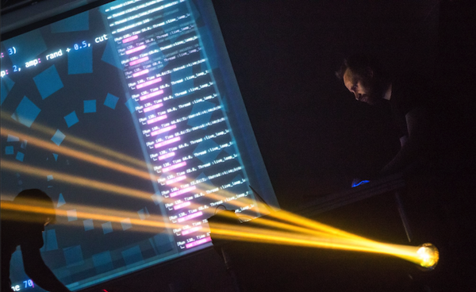
Es mag sich wie eine weit hergeholte Geschichte aus einem futuristischen Nachtklub anhört, aber Musik auf diese Weise zu programmieren, ist ein wachsender Trend, bekannt als Live-Coding (http://toplap.org). Eine aktuelle Richtung, die diese Art des Musikmachens eingeschlagen hat, ist der Algorave (http://algorave.com) - Veranstaltungen, auf denen Künstler wie ich Musik zum Tanzen programmieren. Du musst aber zum Live-Coden nicht in einem Nachtklub sein. Mit Sonic Pi v2.6+ kannst du überall loslegen, wohin du deinen Raspberry Pi und ein Paar Kopfhörer oder Lautsprecher mitnimmst. Wenn du das Ende dieses Artikels erreicht hast, wirst du bereits deine eigenen Beats programmieren und live bearbeitest. Wohin do von dort weiter gehst, wird einzig von deiner Vorstellungskraft beschränkt.
Live-Loop
Der Schlüssel zum 'live-coding' mit Sonic Pi ist das Beherrschen des 'live_loops'. Schauen wir uns einen an:
live_loop :beats do
sample :bd_haus
sleep 0.5
end
Ein Live-Loop hat 4 Hauptbestandteile. Der erste ist sein Name. Unser live_loop oben heißt live_loop. Du kannst frei entscheiden, wie Du Deinen live_loop nennen möchtest. Sei kreativ. Ich benutze oft Namen, die dem Publikum etwas über die Musik mitteilen, die ich mache. Der zweite Bestandteil ist das Wort do, welches anzeigt, wo der live_loop beginnt. Der dritte ist das Wort end, das markiert, wo der live_loop endet. Schließlich gibt es noch den Block innerhalb des live_loop, der beschreibt, was die Schleife wiederholen soll – das ist der Teil zwischen do und end. In unsrem Fall spielen wir ein Bass-Drum-Sample und warten einen halben Takt. Dies führt zu einem schönen regelmäßigen Bass Beat. Auf gehts, kopiere den live_loop in einem leeren Sonic Pi-Puffer und drücke auf Ausführen. Boom, Boom, Boom!.
Zur Laufzeit neu definieren
OK, aber was ist nun das besondere an einem live_loop? Bisher scheint er nur eine überbewertete "Schleife" zu sein! Nun, das Schöne am live_loop ist, dass du ihn im laufenden Programm neu definieren kannst. Das bedeutet, du kannst ändern was er machen soll, während er läuft. Das ist das Geheimnis hinter Live-Coding mit Sonic Pi. Lass uns das ausprobieren:
live_loop :choral_drone do
sample :ambi_choir, rate: 0.4
sleep 1
end
Klicke auf die Ausführen-Schaltfläche oder drücke Alt-R. Du hörst jetzt einen wunderschönen Chor-Klang. Nun, während dieser noch läuft, ändere deie Rate von 0.4 auf 0.38. Klicke erneut Ausführen. Wow! Hast du gehört, wie der Chor die Note gewechselt hat? Setze sie wieder auf 0.4, zurück auf den alten Wert. Nun setze ihn runter auf 0.2, runter bis 0.19 und dann wieder hoch auf 0.4. Sieh wie du durch das Ändern nur eines Parameters, im laufenden Programm, die volle Kontrolle über die Musik erlangen kannst? Spiele ein bisschen mit den Werten für rate - wähle deine eigenen Werte. Probiere negative Zahlen, wirklich kleine Zahlen und große Zahlen. Viel Spaß!
Schlafen ist wichtig
Eine der wichtigsten Lektionen über 'live_loop's ist, dass sie Pausen brauchen. Betrachte einmal folgenden 'live_loop':
live_loop :infinite_impossibilities do
sample :ambi_choir
end
Wenn du versuchst, diese Code auszuführen, wirst du bemerken, dass Sonic Pi sich beschwert, dass der live_loop nicht geschlafen hat. Das ist ein Sicherheitssystem! Nimm dir etwas Zeit und denk darüber nach, was dieser Code vom Computer verlangt. Genau, der Computer wird gefragt eine unendliche Anzahl an Samples zum Nullzeitpunkt zu spielen. Ohne das Sicherheitssystem wird der arme Computer das probieren und währenddessen abstürzen. Also immer daran denken: Deine live_loops müssen ein sleep beinhalten.
Töne kombinieren
Musik ist voll von Dingen, die zur selben Zeit geschehen. Das Schlagzeug spielt zur selben Zeit wie der Bass, Gesang und die Gitarre… In der Informatik nennen wir das Nebenläufigkeit (concurrency). Sonic Pi bietet uns eine einfache Möglichkeit verschiedenste Dinge zur selben Zeit abspielen zu lassen. Benutze einfach mehr als einen live_loop!
live_loop :beats do
sample :bd_tek
with_fx :echo, phase: 0.125, mix: 0.4 do
sample :drum_cymbal_soft, sustain: 0, release: 0.1
sleep 0.5
end
end
live_loop :bass do
use_synth :tb303
synth :tb303, note: :e1, release: 4, cutoff: 120, cutoff_attack: 1
sleep 4
end
Hier haben wir zwei live_loops. Der eine wiederholt schnell Beats, während der andere durch langsames Wiederholen einen verrückten Bass Sound kreiert.
Eines der interessanten Dinge bei der Verwendung von live_loopin mehreren Instanzen ist, dass sie alle jeweils ihre eigene Zeit verwalten. Das bedeutet, dass es wirklich einfach ist, interessante polyrhythmische Strukturen zu erzeugen und sogar mit Phasenverschiebungen á la Steve Reich zu spielen. Schau dir das an:
# Steve Reich's Piano Phase
notes = (ring :E4, :Fs4, :B4, :Cs5, :D5, :Fs4, :E4, :Cs5, :B4, :Fs4, :D5, :Cs5)
live_loop :slow do
play notes.tick, release: 0.1
sleep 0.3
end
live_loop :faster do
play notes.tick, release: 0.1
sleep 0.295
end
Alles zusammenführen
Jedes dieser Tutorials werden wir mit einem abschließenden Code-Beispiel beenden, das sich aller zuvor behandelter Ideen bedient. Schau Dir diesen Code genau an und überlege Dir, was er tut. Kopiere ihn anschließend in einen neuen Sonic Pi-Puffer, drücke auf Start und hör Dir an, wie er klingt. Ändere zum Schluss etwas am Code, indem Du Parameter veränderst oder Dinge auskommentierst. Vielleicht kannst Du das als Ausgangspunkt für eine eigene Performance nutzen. Das Wichtigste ist auf jeden Fall der Spaß dabei. Bis zum nächsten Mal …
with_fx :reverb, room: 1 do
live_loop :time do
synth :prophet, release: 8, note: :e1, cutoff: 90, amp: 3
sleep 8
end
end
live_loop :machine do
sample :loop_garzul, rate: 0.5, finish: 0.25
sample :loop_industrial, beat_stretch: 4, amp: 1
sleep 4
end
live_loop :kik do
sample :bd_haus, amp: 2
sleep 0.5
end
with_fx :echo do
live_loop :vortex do
# use_random_seed 800
notes = (scale :e3, :minor_pentatonic, num_octaves: 3)
16.times do
play notes.choose, release: 0.1, amp: 1.5
sleep 0.125
end
end
end
A.3 Kodierte Beats
Eine der spannendsten und einflussreichsten technischen Entwicklungen der modernen Musik ist die Erfindung von Samplern. Sampler sind Musikinstrumente, die es einem erlauben Töne aufzunehmen, sie zu verändern und auf verschiedene Arten und Weisen wiederzugeben. Zum Beispiel ist es mit einem Sampler möglich ein Schlagzeug Solo (oder Break) von einer alten Schalplatte einzuspielen und es anschließend als Grundlage für einen neuen Beat zu verwenden, indem man es mit halber Geschwindigkeit wiedergibt. So ist früher Hip-Hop entstanden und heute gibt es kaum noch Elektronische Musik, die ohne irgendeine Art von Samples auskommt. Samples bieten dir eine großartige Möglichkeit auf einfache Art und Weise neue und interessante Elemente in Deine live gecodete Performance einfließen zu lassen.
Aber wo kriegen wir einen Sampler her? Wir haben bereits einen - es ist unser Raspberry Pi! Die mitgelieferte Live-Coding App Sonic Pi stellt uns einen mächtigen Sampler bereit. Lasst ihn uns ausprobieren!
Der Amen Break
Eines der klassischen Schlagzeug-Break-Samples mit dem größten Wiedererkennungswert ist der Amen-Break. Er wurde erstmals 1969 von den Winstons in ihrem Song "Amen Brother" als Teil eines Drum-Break aufgenommen. Doch erst seine Wiederentdeckung durch frühe Hip-Hop-Musiker in den 80ern und sein Einsatz in Samplern führte zu einer Verwendung des Samples in einer großen Bandbreite von Musikstilen, wie Drum and Bass, Breakbeat, Hardcore Techno und Breakcore.
Ich bin mir sicher, Du freust Dich zu hören, dass das Sample direkt in Sonic Pi eingebaut ist. Bereite einfach einen Puffer vor und kopiere den folgenden Code hinein:
sample :loop_amen
Drücke auf Start und boom! Du hörst dir gerade eines der einflussreichsten Drum Breaks in der Geschichte der Tanzmusik an. Dieses Sample ist allerdings nicht damit berühmt geworden, einmal abgespielt zu werden. Vielmehr ist es wie gemacht dafür wiederholt zu werden.
Beat Stretching
Lass uns den Amen Break in Schleife schalten, indem wir unseren alten Bekannten, denlive_loop aus dem Tutorial vom letzten Monat, einsetzen:
live_loop :amen_break do
sample :loop_amen
sleep 2
end
OK, es wiederholt sich. Allerdings kommt es am Ende eines Durchlaufs zu einer lästige Pause. Diese entsteht durch unserer Anweisung 2 Takte zu pausieren. Das :loop_amen Sample dauert bei einem voreingestellten BPM Wert von 60 nur 1.753 Takte. Das bedeutet kommt es am Sample Ende zu einer Pause von 2 - 1.753 = 0.247 Takten, was kurz, aber durchaus wahrnehmbar ist.
Um dieses Problem zu beheben, können wir die beat_stretch: Option verwenden. Sie sagt Sonic Pi, dass das Sample auf die angegebene Anzahl von Takten ausgedehnt (bzw. gestaucht) werden soll.
Sonic Pis Funktionen sample und synth geben uns über optionale Parameter wie amp:, cutoff: und release: viele zusätzliche Steuerungsmöglichkeiten. Da die Bezeichnung optionale Parameter allerdings recht lang ist, werden wir sie ab jetzt einfach opts nennen.
live_loop :amen_break do
sample :loop_amen, beat_stretch: 2
sleep 2
end
Jetzt schwingen wir das Tanzbein! Vielleicht wollen wir es noch etwas schneller, oder doch einen Ton gemächlicher - je nach Stimmung.
Mit der Zeit spielen
OK, wie sieht es aus, wenn wir den Stiel unserer Musik zu Hip Hop oder Breakcore ändern wollen? Eine einfache Möglichkeit das zu tun ist mit der Zeit zu spielen - oder in anderen Worten am Tempo herumbasteln. In Sonic Pi ist das super leicht - füge einfach use_bpm in deinen Live-Loop ein:
live_loop :amen_break do
use_bpm 30
sample :loop_amen, beat_stretch: 2
sleep 2
end
Während du gerade zu diesen langsamen Beats rappst, beobachte, dass obwohl wir immer noch eine Pause von 2 machen und unsere BPM bei 30 liegen nichts verzögert klingt. Die beat_stretch Option berücksichtigt den aktuellen BPM Wert und bringt alles in Einklang.
Jetzt kommen wir zum spannenden Teil. Während der Loop läuft, verändere den Wert 30 in der use_bpm 30 Zeile zu 50. Wuhuu, auf einmal ist alles ohne aus dem Einklang zu geraten schneller geworden! Versuch das Tempo noch etwas mehr zu erhöhen - 80, 120 und um es wirklich verrückt klingen zu lassen, trage 200 ein!
Filtern
Nun können wir Samples in unseren Live-Loop integrieren. Schauen wir uns einige der interessanten Optionen des sample Synths an. Zunächst cutoff:, das den Cut-Off-Filter des Samplers steuert. Standardmäßig ist dieser ausgeschaltet. Aber du kannst ihn ganz einfach einschalten:
live_loop :amen_break do
use_bpm 50
sample :loop_amen, beat_stretch: 2, cutoff: 70
sleep 2
end
Nun, ändere den Wert der cutoff: Option. Erhöhe ihn zum Beispiel auf 100, drücke auf Start und warte bis der Loop einmal durchgelaufen ist, um die Änderung zu hören. Du kannst beobachten, dass niedrige Werte wie 50 den Klang voll und basslastig machen, hohe Werte wie 100 und 200 aber voll und kratzend klingen. Das liegt daran, dass die cutoff: Option die Höhen wegschneidet - genau so wie ein Rasenmäher die Enden von Grashalmen abschneidet. Die cutoff: fungiert als eine Längeneinstellung. Sie legt fest, wie viel Grass nach dem Mähen übrig bleibt.
Slicing
Ein anderes tolles Tool, das wir ausprobieren können, ist der FX Slicer. Er stückelt unseren Sound in Einzelsequenzen. Verpacke die sample Zeile dafür einfach mit dem folgenden FX Code:
live_loop :amen_break do
use_bpm 50
with_fx :slicer, phase: 0.25, wave: 0, mix: 1 do
sample :loop_amen, beat_stretch: 2, cutoff: 100
end
sleep 2
end
Beobachte, wie der Klang dadurch etwas mehr auf und ab federt. (Du kannst dir den ursprünglichen Klang ohne FX anhören, indem du die Option mix: auf 0 setzt.) Als nächstes, versuche dich an der phase: Option. Das ist die Rate (in Beats) in der gestückelt wird. Ein kleiner Wert wie 0.125 stückelt häufig, hohe Werte wie 0.5 stückeln hingegen langsamer. Beobachte, dass eine stufenweises Halbieren oder Vierteln der phase: tendenziell immer gut klingt. Setzte zuletzt die wave: Option auf 0, 1, oder 2 und höre dir an, wie die Änderung klingt. Die Werte stehen für unterschiedliche Schwingungsformen. 0 repräsentiert eine Sägezahnschwindung (hard in, fade out), 1 eine Rechteckschwingung (hard in, hard out) und 2 eine Dreieckschwingung (hard in, hard out).
Alles zusammenführen
Lass uns für unser letztes Beispiel einem Blick auf die frühe Drum and Bass Szene in Bristol werfen. Mach dir keinen Sorgen, wenn du nicht genau verstehst, wie das Beispiel funktioniert. Füge den Code einfach in Sonic Pi ein, klicke auf Ausführen und versuche dich am Live-Coden, indem du die Werte der verschiedenen Optionen veränderst. Vergesse nicht deine Kreationen mit anderen zu teilen! Bis zum nächsten Mal…
use_bpm 100
live_loop :amen_break do
p = [0.125, 0.25, 0.5].choose
with_fx :slicer, phase: p, wave: 0, mix: rrand(0.7, 1) do
r = [1, 1, 1, -1].choose
sample :loop_amen, beat_stretch: 2, rate: r, amp: 2
end
sleep 2
end
live_loop :bass_drum do
sample :bd_haus, cutoff: 70, amp: 1.5
sleep 0.5
end
live_loop :landing do
bass_line = (knit :e1, 3, [:c1, :c2].choose, 1)
with_fx :slicer, phase: [0.25, 0.5].choose, invert_wave: 1, wave: 0 do
s = synth :square, note: bass_line.tick, sustain: 4, cutoff: 60
control s, cutoff_slide: 4, cutoff: 120
end
sleep 4
end
A.4 Synth Riffs
Ob polterndere Oszillatoren oder die verstimmten Klänge von Sägezahnschwingungen, die sich durch ein Stück ziehen, der Lead Synth - der melodische Hauptpart eines Stücks - spielt in jeder elektronischen Komposition eine wichtige Rolle. Im der letzten Einheit dieses Tutorials haben wir gelernt, wie man Klänge erzeugt. Jetzt werden wir uns damit beschäftigen, wie wir die drei Hauptkomponenten eines Synth Riffs - Klangfarbe, Melodie und Rhythmus - coden können.
OK, fahre deinen Raspberry Pi hoch, öffne Sonic Pi v2.6+ und auf gehts, lass und Musik machen!
Die Welt der Klangfarben
Ein essentieller Teil jeder Synth-Figur ist das Verändern und Spielen mit der Färbung der Klänge. Wir können die Klangfarbe in Sonic Pi Sonic Pi auf zwei Arten steuern - indem wir für dramatische Änderungen verschiedene Synths verwenden, und für dezente Modifizierungen die verschiedenen Synth-Optionen einsetzen. Wir können dafür auch Effekte einsetzen, aber das ist ein Tutorial für sich …
Lass uns einen einfachen Live-Loop schreiben, in dem wir laufend den Synth ändern:
live_loop :timbre do
use_synth (ring :tb303, :blade, :prophet, :saw, :beep, :tri).tick
play :e2, attack: 0, release: 0.5, cutoff: 100
sleep 0.5
end
Schau dir den Code genauer an. Mit dem tick Befehl gehen wir Eintrag für Eintrag durch einen Ring von Synth Namen (wobei wir die Liste immer wieder wiederholen). Anschließend übergeben wir diesen Synth an die use_synth Funktion, die den aktuellen Synth unseres Live-Loops ändert. Außerdem spielen wir die Note :e2 (e der zweiten Oktave) mit einer Abklingzeit von 0.5 Takten (0.5 Sekunden bei unser Standard-BPM von 60) und einem cutoff: Wert von 100.
Hörst du, wie die unterschiedlichen Synths vollkommen verschiedene Klänge erzeugen, obwohl sie alle die selbe Note spielen? Lass uns damit experimentieren. Erhöhe oder verkleinere den Wert der Abklingzeit. Ändere zum Beispiel die Werte der Optionen attack: und release:, um zu sehen, wie sich unterschiedliche Fade-In und Fade-Out Zeiten auf den Klang auswirken. Zuletzt kannst du den Wert der cutoff: Option ändern, um zu beobachten, wie unterschiedliche Cut-Off-Wert die Klangfarbe beeinflussen (Werte zwischen 60 und 130 sind gut). Probiert mal aus, wie viele verschiedene Klänge du erzeugen kannst, indem du an diesen wenigen Parametern rumschraubst. Wenn dir das gelingt, kannst du im dir im Help System den Eintrag zu Synth anschauen. Hier findest du eine Auflistung aller Synths und der Optionen, die sie bereitstellen. Ein Reich an Möglichkeiten liegt dir zu Füßen.
Klangfarbe
Klangfarbe (engl. timbre) ist nur ein ausgefallenes Wort für den Klang eines Geräusches. Wenn man die selbe Note auf verschiedenen Instrumenten, wie zum Beispiel einer Geige, einer Gitarre oder einem Klavier spielt, so bleibt die Tonhöhe (wie hoch oder niedrig ein Ton ist) immer die selbe. Die Tonqualität hingegen unterscheidet sich. Dieser Unterschied, der einem erlaubt festzustellen, ob es sich um ein Klavier oder eine Gitarre handelt, ist die Klangfarbe.
Melodische Komposition
Ein anderer wichtiger Aspekt in der Zusammenstellung unseres Leas Synths ist die Wahl der Noten, die gespielt werden sollen. Wenn du bereits eine Idee dafür hast, kannst du einfach einen Ring erstellen, der über die gewünschte Notenfolge iteriert:
live_loop :riff do
use_synth :prophet
riff = (ring :e3, :e3, :r, :g3, :r, :r, :r, :a3)
play riff.tick, release: 0.5, cutoff: 80
sleep 0.25
end
Hier haben wir unsere Melodie mit Hilfe eines Rings definiert, der sich aus Noten wie :e3 und Pausen - dargestellt durch :r- zusammensetzt. Wir nutzen .tick um über die Notenfolge zu iterieren und so einen sich wiederholenden Riff zu erzeugen.
Automatische Melodie
Es ist nicht leicht einen gut klingenden Riff aus dem Nichts zu zaubern. Statt dessen ist es oft hilfreich sich von Sonic Pi eine Auswahl von zufälligen Riffs ausgeben zu lassen und einen von diesen auszuwählen. Um das zu tun, verbinden wir drei bekannte Konzepte miteinander: Ringe, Randomisierung und Zufallszahlen. Schauen wir uns ein Beispiel an:
live_loop :random_riff do
use_synth :dsaw
use_random_seed 3
notes = (scale :e3, :minor_pentatonic).shuffle
play notes.tick, release: 0.25, cutoff: 80
sleep 0.25
end
Es gibt ein paar Dinge, die wir uns der Reihe nach ansehen wollen. Zunächst legen wir fest, dass wir den Zufallswert 3 verwenden. Was bedeutet das? Nun, das Nützliche daran ist, dass wir, wenn wir den Seed setzen, vorhersagen können, was der nächste Zufallswert sein wird - es ist derselbe wie beim letzten Mal, als wir den Seed auf 3 gesetzt haben! Eine weitere nützliche Information ist, dass das Mischen eines Notenrings auf dieselbe Weise funktioniert. Im obigen Beispiel fragen wir im Wesentlichen nach dem "dritten Shuffle" in der Standardliste der Shuffles - was auch jedes Mal dasselbe ist, da wir den Zufallswert immer auf denselben Wert setzen, kurz bevor wir den Shuffle starten. Schließlich gehen wir einfach durch unsere gemischten Noten, um das Riff zu spielen.
Jetzt fängt der Spaß erst so richtig an. Wenn wir den Startwert(Seed) für den Zufallsgenerator auf eine andere Zahl, z. B. 3000, ändern, erhalten wir eine völlig andere Mischung der Noten. So ist es jetzt extrem einfach, neue Melodien zu erforschen. Wähle einfach die Liste der Noten aus, die du mischen möchten (Tonleitern sind ein guter Ausgangspunkt), und wählen Sie dann den Startwert(Seed), mit dem du mischen möchten. Wenn uns die Melodie nicht gefällt, ändern wir einfach einen dieser beiden Punkte und versuchen es erneut. Wiederhole den Vorgang, bis dir gefällt was du hörst!
Pseudo-Randomisierung
Die Zufallsgenerierung von Sonic Pi ist nicht wirklich zufällig, sondern wird als Pseudozufall bezeichnet. Stell Dir vor, Du würdest 100 Mal würfeln und das Ergebnis jedes Wurfs auf ein Blatt Papier schreiben. Sonic Pi verfügt über das Äquivalent dieser Ergebnisliste, die verwendet wird, wenn man nach einem Zufallswert fragt. Anstatt zu würfeln, wird einfach der nächste Wert auf der Liste ausgewählt. Wenn Du einen Startwert(Seed) setzt, dann springst Du einfach zu einem bestimmten Punkt in dieser Liste.
Finde deinen Rythmus
Ein weiteres wichtiges Merkmal unseres Riffs ist der Rhythmus, d.h. wann wir eine Note spielen und wann nicht. Wir haben bereits gesehen, dass wir :r nutzen können, um Pausen in einen Ring einzufügen. Eine weiter Möglichkeit auf den Rhythmus Einfluss zu nehmen sind sog. Spreads, über die wir in einem kommenden Tutorial mehr lernen werden. Heute nutzen wir Randomisierung, um unseren Rhythmus zu finden. Anstatt immer jede Note in einem Ring zu spielen, können wir über eine Bedingung festlegen, mit welcher Wahrscheinlichkeit sie abgespielt werden. Lass uns einen Blick darauf werfen:
live_loop :random_riff do
use_synth :dsaw
use_random_seed 30
notes = (scale :e3, :minor_pentatonic).shuffle
16.times do
play notes.tick, release: 0.2, cutoff: 90 if one_in(2)
sleep 0.125
end
end
Eine nützliche Funktion in diesem Zusammenhang ist die Funktion one_in, die true bzw. false mit einer bestimmten Wahrscheinlichkeit zurückgibt. Hier verwenden wir den Wert 2, d.h. one_in gibt durchschnittlich ein Mal alle zwei Aufrufe true zurück. Mit anderen Worten, true wird in 50% der Fälle zurückgegeben. Höhere Werte bewirken, dass statt true häufiger false zurückgegeben wird. Das führt zu mehr Lücken in unserem Riff.
Beobachte, dass wir mit dem Befehl 16.times Wiederholung eingebaut haben. Das haben wir gemacht, damit sich unser Zufallsgenerator (der Rückgabewert der one_in Funktion) nur alle 16 Noten zurücksetzt und unser Rhythmus sich so alle 16 Schlägen wiederholt. Wir nehmen damit keinen Einfluss auf das durcheinander Mischen, weil letzteres direkt nach dem Initiieren des Zufallsgenerators passiert. Wir können über die Größe der Wiederholungen die Länge unseres Riffs verändern. Versuche mal die Zahl 16 auf 8 oder sogar 4 oder 3 zu ändern und schaue dir an, wie sich das auf den Rhythmus des Riffs auswirkt.
Alles zusammenführen
OK, lass uns zum Schluss alles, das wir gelernt haben, in einem abschließenden Beispiel nutzen. Bis zum nächsten Mal!
live_loop :random_riff do
# uncomment to bring in:
# synth :blade, note: :e4, release: 4, cutoff: 100, amp: 1.5
use_synth :dsaw
use_random_seed 43
notes = (scale :e3, :minor_pentatonic, num_octaves: 2).shuffle.take(8)
8.times do
play notes.tick, release: rand(0.5), cutoff: rrand(60, 130) if one_in(2)
sleep 0.125
end
end
live_loop :drums do
use_random_seed 500
16.times do
sample :bd_haus, rate: 2, cutoff: 110 if rand < 0.35
sleep 0.125
end
end
live_loop :bd do
sample :bd_haus, cutoff: 100, amp: 3
sleep 0.5
end
A.5 Acid Bass
Wenn man sich die Geschichte der Elektronischen Tanzmusik anschaut, ist es schier unmöglich den enormen Einfluss, den der winzige Synthesizer Roland TB-303 hatte, zu übersehen. Er ist das Geheimnis hinter dem Klang des originalen Acid Bass. Diese klassisch quietschenden und quieksenden Bass Riffe des TB-303 kann man sowohl in der frühen Chicago House Szene als auch bei Interpreten moderner Elektronischen Musik wie Plastikman, Squarepusher und Aphex Twin hören.
Interessanterweise hatte Roland nie vorgesehen, dass der TB-303 für Tanzmusik zum Einsatz kommt. Er wurde ursprünglich als eine Übungshilfe für Gitarristen entwickelt. Die Firma hatte sich überlegt, dass Leute mit Hilfe des Synthesizers Basslinien programmieren würden zu denen sie jammen könnten. Leider gab es damit mehrere Probleme: die Programmierung war etwas zu kompliziert, der Klang glich nicht wirklich einer Bassgitarre, und sie waren teuer in der Anschaffung. Um ihre Verluste zu minimieren, beendete Roland die Produktion nach dem Verkauf von 10.000 Exemplaren. Nach ein paar Jahren des Daseins als Staubfänger in den Regalen der Gitarristen wanderten die meisten TB-303s in die Schaufenster von Second-Hand-Läden. Dort warteten sie auf ihre Wiederentdeckung durch eine neue Generation von Experimentierfreudigen, die anfingen sie auf eine Art und Weise zu nutzten, die Roland nie vorgesehen hatte, um abgefahrene Klänge zu erzeugen. Das war die Geburtsstunde des Acid House.
Obwohl es nicht leicht ist sich einen originalen TB-303 zu beschaffen, wirst Du Dich sicher freuen zu hören, dass Du Deinen Raspberry Pi mit Hilfe von Sonic Pi in einen TB-303 verwandeln kannst. Los gehts, wirf Sonic Pi an, kopiere den folgenden Code in einen leeren Puffer und klicke auf Ausführen:
use_synth :tb303
play :e1
Siehe da! Wir haben einen Acid Bass! Lass uns weiter experimentieren…
Bringe den Bass zum Glucksen
Lass uns zunächst einen live Arpeggiator bauen. In unserer letzten Tutorialeinheit haben wir gelernt, dass Riffs durch Ringe von Noten, die wir nach einander in einer sich wiederholenden Schleife wiedergeben, repräsentiert werden können. Lass uns einen Live-Loop schreiben, der das gleiche macht:
use_synth :tb303
live_loop :squelch do
n = (ring :e1, :e2, :e3).tick
play n, release: 0.125, cutoff: 100, res: 0.8, wave: 0
sleep 0.125
end
Schaue dir jede Codeziele genau an.
- In der ersten Zeile setzen wir den Defaultwert der
use_synthFunktion auftb303. - In der zweiten Zeile erstellen wir einen Live-Loop vom Typen
:squelch, der sich die ganze Zeit wiederholt. - In der dritten Zeile erstellen wir unseren Riff - einen Ring aus Noten (E in den Oktaven 1, 2, und 3), der diese mit Hilfe eines
.ticks in Schleife durchläuft. Wir definierennals die aktuelle Note in unserem Riff. Das Gleichheitszeichen hier bedeutet, dass wir den Wert auf der rechten Seite der Bezeichnung auf der linken Seite zuzuweisen. In jedem Durchlauf unseres Loops hatnalso ein anderer Wert. Im ersten Durchlauf wirdnauf:e1gesetzt. Im zweiten Durchlauf wird es auf:e2, gefolgt von:e3und dann wieder auf:e1usw. gesetzt. - Mit Zeile viert wird der eigentliche
:tb303Synth eingeleitet. Dabei werden einige interessante Optionen mitgegeben:release:,cutoff:,res:andwave:über die wir etwas später genauer sprechen werden. - In Zeile fünf machen wir eine Pause - wir geben unserem Live-Loop vor sich alle
0.125s (oder 8 mal pro Sekunde bei einem BPM von 60) zu wiederholen. - Zeile sechs markiert das Ende (
end) des Live-Loops. Sie teilt Sonic Pi nur mit, wo die zu wiederholende Sequenz zu Ende ist.
Während du dir noch überlegst, wie das alles genau funktioniert, tippe den oben stehenden Code ab und klicke auf Ausführen. Du solltest den :tb303 lostreten hören. Jetzt legen wir richtig los: lass uns mit dem Live-Coding beginnen.
Während der Loop noch aktiv ist, ändere den cutoff:-Wert auf 110. Drücke nun erneut den „Ausführen“-Knopf. Der Ton sollte sich nun etwas härter und quäkiger anhören. Ändere ihn jetzt auf 120 und drücke „Ausführen“. Jetzt 130. Hörst du, wie höhere Cutoff-Werte den Klang durchdringender und intensiver machen? Ändere den Wert schließlich auf 80, wenn du dich nach einer Pause sehnst. Wiederhole das Ganze dann so oft wie du willst. Keine Sorge, ich werde immer noch hier sein...
Eine weitere Option, mit der es sich zu spielen lohnt, ist res:. Damit wird der Resonanzgrad des Filters eingestellt. Eine hohe Resonanz ist charakteristisch für Acid-Bass-Sounds. Im Moment haben wir res: auf 0.8 eingestellt. Versuche, ihn auf 0.85, dann 0.9 und schließlich 0.95 zu erhöhen. Möglicherweise wirst du feststellen, dass ein Cutoff-Wert wie 110 oder höher die Unterschiede besser hörbar macht. Jetzt mach mal etwas wildes und gib 0.999 ein: hörst du den verrückten Sound? Bei einer so hohen Auflösung hört man den Cutoff-Filter so stark mitschwingen, dass er anfängt, eigene Töne zu erzeugen!
Ändere zum Schluss die wave: Option auf 1, um einen großen Einfluss auf die Klangfarbe zu nehmen. Dies legt die Art der Schwingungserzeugung fest. Der Standard ist mit 0 eine Sägezahnschwingung. 1 steht für eine Pulswelle und 2für eine Dreiecksschwingung.
Versuche natürlich auch verschiedene Riffs zu erzeugen, indem du die Noten im Ring änderst oder sogar Noten aus Skalen oder Akkorden auswählst. Viel Spaß mit deinem ersten Acid Bass Synth.
Den TB-303 zerlegen
Der Aufbau des originalen TB-303 ist eigentlich ganz einfach. Wie man dem folgenden Diagramm entnehmen kann, gibt es nur vier Hauptbestandteile.
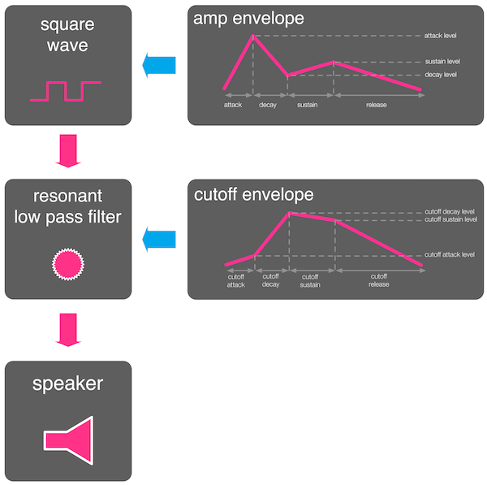
First is the oscillator wave - the raw ingredients of the sound. In this case we have a square wave. Next there's the oscillator's amplitude envelope which controls the amp of the square wave through time. These are accessed in Sonic Pi by the attack:, decay:, sustain: and release: opts along with their level counterparts. For more information read Section 2.4 'Duration with Envelopes' in the built-in tutorial. We then pass our enveloped square wave through a resonant low pass filter. This chops off the higher frequencies as well as having that nice resonance effect. Now this is where the fun starts. The cutoff value of this filter is also controlled by its own envelope! This means we have amazing control over the timbre of the sound by playing with both of these envelopes. Let's take a look:
use_synth :tb303
with_fx :reverb, room: 1 do
live_loop :space_scanner do
play :e1, cutoff: 100, release: 7, attack: 1, cutoff_attack: 4, cutoff_release: 4
sleep 8
end
end
Für jede Standard-Hüllkurvenoption gibt es eine entsprechende cutoff_-Option im :tb303-Synthesizer. Um die cutoff-Anschlagszeit zu ändern, können wir die Option cutoff_attack: verwenden. Kopiere den Code unten in einen leeren Puffer und drücke Run. Du wirst einen verrrückten Sound hören, der ein- und auswobbelt. Nun spiel ein bisschen herum. Versuche, die cutoff_attack:-Zeit auf 1 zu ändern, dann auf 0.5. Und jetzt probiere 8.
Beobachte, dass wir, um etwas mehr Stimmung zu erzeugen, alles durch einen :reverb FX schicken - probiere ein paar andere Effekte aus und schaue welche hier gut passen!
Alles zusammenführen
Zum Schluss gibt es ein Beispiel, das ich mit Hilfe der Konzepte aus diesem Tutorial komponiert habe. Kopiere den Code in einen leeren Puffer, höre es Dir ein Weile lang an und dann versuche Deine eigenen Änderungen live zu coden. Überzeuge Dich davon, was für verrückte Klänge Du erzeugen kannst! Bis zum nächste Mal …
use_synth :tb303
use_debug false
with_fx :reverb, room: 0.8 do
live_loop :space_scanner do
with_fx :slicer, phase: 0.25, amp: 1.5 do
co = (line 70, 130, steps: 8).tick
play :e1, cutoff: co, release: 7, attack: 1, cutoff_attack: 4, cutoff_release: 4
sleep 8
end
end
live_loop :squelch do
use_random_seed 3000
16.times do
n = (ring :e1, :e2, :e3).tick
play n, release: 0.125, cutoff: rrand(70, 130), res: 0.9, wave: 1, amp: 0.8
sleep 0.125
end
end
end
A.6 Musisches Minecraft
Minecraft Pi
Hallo und willkommen zurück! In den zurückliegenden Tutorialeinheiten haben wir uns ausschließlich auf die musikalischen Möglichkeiten von Sonic Pi konzentriert (um unseren Raspberry Pi in ein konzertfähiges Musikinstrument zu verwandeln). Bisher haben wir gelernt wie man:
- Live-Coded - Klänge live improvisieren,
- gigantische Beats komponiert,
- mächtige Lead Synths generiert,
- und den bekannten TB-303 Acid Bass nachbaut.
Es gibt noch so viel Dinge zu entdecken (was wir in zukünftigen Ausgaben des Tutorials auch machen werden). Diesen Monat lass uns einen Blick auf etwas werfen, was Sonic Pi kann, das du wahrscheinlich nicht erwartet hast: Minecraft steuern.
Hello Minecraft World
OK, lass uns loslegen. Fahre deinen Raspberry Pi hoch, werfe Minecraft Pi an und erstelle eine neue Welt. Starte nun Sonic Pi und verändere die Größe deiner Fenster so, dass du sowohl Sonic Pi als auch Minecraft Pi auf deinem Bildschirm sehen kannst.
Gib Folgendes in einen leeren Puffer ein:
mc_message "Hello Minecraft from Sonic Pi!"
Drücke jetzt auf Ausführen. Boom! Deine Nachricht erscheint in Minecraft! Wie einfach war das denn? Lege nun dieses Tutorial kurz beiseite und spiele mit deinen eigenen Nachrichten herum. Viel Spaß!

Schall-Teleporter
Lass uns ein wenig erkunden. Die üblichste Option ist Maus und Tastatur zu ergreifen und einfach loszulaufen. Das funktioniert, ist aber langsam und langweilig. Es wäre doch viel besser, wenn wir eine Art Teleporter hätten. Dank Sonic Pi haben wir diesen. Probier dieses:
mc_teleport 80, 40, 100
Meine Güte! Das war ein langer Weg nach oben. Wenn du dich nicht im Flugmodus befunden hättest, wärst du den ganzen Weg zurück auf den Boden gefallen. Wenn du doppelt auf die Leertaste drückst, um in den Flugmodus zu wechseln und dich wieder zu teleportieren, schwebst du weiterhin an der Stelle, an die du dich teleportiert hast.
Aber was bedeuten diese Zahlen? Wir haben drei Zahlen, welche die Koordinaten beschreiben, zu denen wir in der Welt gehen wollen. Jede der Zahlen bekommt einen Namen - x, y und z:
- x - wie weit links und rechts (80 in unserem Beispiel)
- y - wie hoch wir sein wollen (40 in unserem Beispiel)
- z - wie weit vorwärts und rückwärts (100 in unserem Beispiel)
Indem wir unterschiedliche Werte für x, y und z wählen, können wir uns an jeden Ort der Welt teleportieren. Probiere es aus! Wähle verschiedene Zahlen aus und schaue, wo du landest. Falls der Bildschirm schwarz wird, hast du dich in den Boden oder in einen Berg teleportiert. Wähle in diesem Fall einen höheren y-Wert um wieder über den Boden zu kommen. Erkunde weiter, bis du einen Platz findest, der dir gefällt...
Using the ideas so far, let's build a Sonic Teleporter which makes a fun teleport sound whilst it whizzes us across the Minecraft world:
mc_message "Preparing to teleport...."
sample :ambi_lunar_land, rate: -1
sleep 1
mc_message "3"
sleep 1
mc_message "2"
sleep 1
mc_message "1"
sleep 1
mc_teleport 90, 20, 10
mc_message "Whoooosh!"
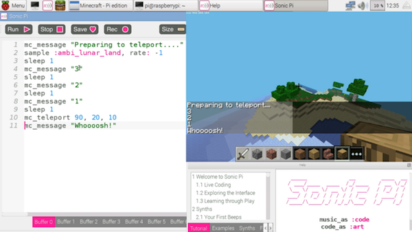
Magische Blöcke
Now you've found a nice spot, let's start building. You could do what you're used to and start clicking the mouse furiously to place blocks under the cursor. Or you could use the magic of Sonic Pi. Try this:
x, y, z = mc_location
mc_set_block :melon, x, y + 5, z
Now look up! There's a melon in the sky! Take a moment to look at the code. What did we do? On line one we grabbed the current location of Steve as the variables x, y and z. These correspond to our coordinates described above. We use these coordinates in the fn mc_set_block which will place the block of your choosing at the specified coordinates. In order to make something higher up in the sky we just need to increase the y value which is why we add 5 to it. Let's make a long trail of them:
live_loop :melon_trail do
x, y, z = mc_location
mc_set_block :melon, x, y-1, z
sleep 0.125
end
Now, jump over to Minecraft, make sure you're in flying-mode (double tap space if not) and fly all around the world. Look behind you to see a pretty trail of melon blocks! See what kind of twisty patterns you can make in the sky.
Live Coding Minecraft
Those of you that have been following this tutorial over the last few months will probably have your minds blown at this point. The trail of melons is pretty cool, but the most exciting part of the previous example is that you can use live_loop with Minecraft! For those that don't know, live_loop is Sonic Pi's special magic ability that no other programming language has. It lets you run multiple loops at the same time and allows you to change them whilst they run. They are incredibly powerful and amazing fun. I use live_loops to perform music in nightclubs with Sonic Pi - DJs use discs and I use live_loops :-) However, today we're going to live code both music and Minecraft.
Let's get started. Run the code above and start making your melon trail again. Now, without stopping the code, just simply change :melon to :brick and hit run. Hey presto, you're now making a brick trail. How simple was that! Fancy some music to go with it? Easy. Try this:
live_loop :bass_trail do
tick
x, y, z = mc_location
b = (ring :melon, :brick, :glass).look
mc_set_block b, x, y -1, z
note = (ring :e1, :e2, :e3).look
use_synth :tb303
play note, release: 0.1, cutoff: 70
sleep 0.125
end
Now, whilst that's playing start changing the code. Change the block types - try :water, :grass or your favourite block type. Also, try changing the cutoff value from 70 to 80 and then up to 100. Isn't this fun?
Alles zusammenführen
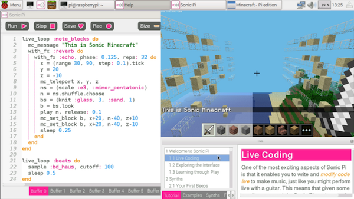
Let's combine everything we've seen so far with a little extra magic. Let's combine our teleportation ability with block placing and music to make a Minecraft Music Video. Don't worry if you don't understand it all, just type it in and have a play by changing some of the values whilst it's running live. Have fun and see you next time...
live_loop :note_blocks do
mc_message "This is Sonic Minecraft"
with_fx :reverb do
with_fx :echo, phase: 0.125, reps: 32 do
tick
x = (range 30, 90, step: 0.1).look
y = 20
z = -10
mc_teleport x, y, z
ns = (scale :e3, :minor_pentatonic)
n = ns.shuffle.choose
bs = (knit :glass, 3, :sand, 1)
b = bs.look
synth :beep, note: n, release: 0.1
mc_set_block b, x+20, n-60+y, z+10
mc_set_block b, x+20, n-60+y, z-10
sleep 0.25
end
end
end
live_loop :beats do
sample :bd_haus, cutoff: 100
sleep 0.5
end
A.7 Bizet Beats
After our brief excursion to the fantastic world of coding Minecraft with Sonic Pi last month, let's get musical again. Today we're going to bring a classical operatic dance piece straight into the 21st century using the awesome power of code.
Skandalös und disruptiv
Let's jump into a time machine back to the year 1875. A composer called Bizet had just finished his latest opera Carmen. Unfortunately like many exciting and disruptive new pieces of music people initially didn't like it at all because it was too outrageous and different. Sadly Bizet died ten years before the opera gained huge international success and became one of the most famous and frequently performed operas of all time. In sympathy with this tragedy let's take one of the main themes from Carmen and convert it to a modern format of music that is also too outrageous and different for most people in our time - live coded music!
Die Habanera dekodieren
Der Versuch die gesamte Oper in diesem Tutorial zu kodieren, wäre wohl zu viel des Guten, daher werden wir uns auf einen der berühmtesten Teile fokussieren - die Basslinie der Habanera:
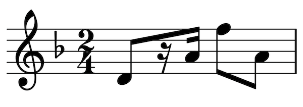
This may look extremely unreadable to you if you haven't yet studied music notation. However, as programmers we see music notation as just another form of code - only it represents instructions to a musician instead of a computer. We therefore need to figure out a way of decoding it.
Anmerkungen
The notes are arranged from left to right like the words in this magazine but also have different heights. The height on the score represents the pitch of the note. The higher the note on the score, the higher the pitch of the note.
In Sonic Pi we already know how to change the pitch of a note - we either use high or low numbers such as play 75 and play 80 or we use the note names: play :E and play :F. Luckily each of the vertical positions of the musical score represents a specific note name. Take a look at this handy look up table:
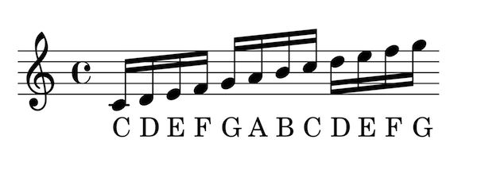
Pausen
Music scores are an extremely rich and expressive kind of code capable of communicating many things. It therefore shouldn't come as much of a surprise that musical scores can not only tell you what notes to play but also when not to play notes. In programming this is pretty much equivalent to the idea of nil or null - the absence of a value. In other words not playing a note is like the absence of a note.
If you look closely at the score you'll see that it's actually a combination of black dots with lines which represent notes to play and squiggly things which represent the rests. Luckily Sonic Pi has a very handy representation for a rest: :r, so if we run: play :r it actually plays silence! We could also write play :rest, play nil or play false which are all equivalent ways of representing rests.
Rhythmus
Finally, there's one last thing to learn how to decode in the notation - the timings of the notes. In the original notation you'll see that the notes are connected with thick lines called beams. The second note has two of these beams which means it lasts for a 16th of a beat. The other notes have a single beam which means they last for an 8th of a beat. The rest has two squiggly beams which means it also represents a 16th of the beat.
When we attempt to decode and explore new things a very handy trick is to make everything as similar as possible to try and see any relationships or patterns. For example, when we re-write our notation purely in 16ths you can see that our notation just turns into a nice sequence of notes and rests.
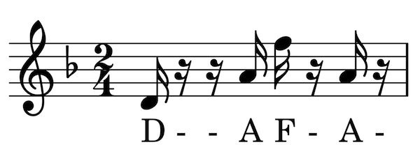
Re-coding the Habanera
Wir sind jetzt in der Lage, um diese Basslinie für Sonic Pie zu übersetzen. Lass uns diese Noten kodieren und gut sein lassen:
(ring :d, :r, :r, :a, :f5, :r, :a, :r)
Lass uns schauen, wie es sich anhört. Stelle es in einen Live-Loop und ticke durch:
live_loop :habanera do
play (ring :d, :r, :r, :a, :f5, :r, :a, :r).tick
sleep 0.25
end
Fabulous, that instantly recognisable riff springs to life through your speakers. It took a lot of effort to get here, but it was worth it - high five!
Stimmungssynthesizer
Now we have the bass line, let's re-create some of the ambience of the operatic scene. One synth to try out is :blade which is a moody 80s style synth lead. Let's try it with the starting note :d passed through a slicer and reverb:
live_loop :habanera do
use_synth :fm
use_transpose -12
play (ring :d, :r, :r, :a, :f5, :r, :a, :r).tick
sleep 0.25
end
with_fx :reverb do
live_loop :space_light do
with_fx :slicer, phase: 0.25 do
synth :blade, note: :d, release: 8, cutoff: 100, amp: 2
end
sleep 8
end
end
Now, try the other notes in the bass line: :a and :f5. Remember, you don't need to hit stop, just modify the code whilst the music is playing and hit run again. Also, try different values for the slicer's phase: opt such as 0.5, 0.75 and 1.
Alles zusammenführen
Zum Schluss lass uns alle bisherigen Ideen in einen neuen Remix von Habanera kombinieren. Du wirst feststellen, dass ich einen weiteren Teil der Basslinie als Kommentar hinzugefügt habe. Wenn Du alles in einen neuen Puffer eingegeben hast, drücke Run, um Dir die Komposition anzuhören. Und jetzt, ohne auf Stopp zu drücken, entkommentiere die zweite Zeile, indem Du das #-Zeichen entfernst, und drücke dann noch einmal Run – wie fantastisch das ist! Jetzt misch alles wie es Dir gefällt – viel Spaß.
use_debug false
bizet_bass = (ring :d, :r, :r, :a, :f5, :r, :a, :r)
#bizet_bass = (ring :d, :r, :r, :Bb, :g5, :r, :Bb, :r)
with_fx :reverb, room: 1, mix: 0.3 do
live_loop :bizet do
with_fx :slicer, phase: 0.125 do
synth :blade, note: :d4, release: 8,
cutoff: 100, amp: 1.5
end
16.times do
tick
play bizet_bass.look, release: 0.1
play bizet_bass.look - 12, release: 0.3
sleep 0.125
end
end
end
live_loop :ind do
sample :loop_industrial, beat_stretch: 1,
cutoff: 100, rate: 1
sleep 1
end
live_loop :drums do
sample :bd_haus, cutoff: 110
synth :beep, note: 49, attack: 0,
release: 0.1
sleep 0.5
end
A.8 Werde ein Minecraft VJ
Minecraft Pi
Everyone has played Minecraft. You will all have built amazing structures, designed cunning traps and even created elaborate cart lines controlled by redstone switches. How many of you have performed with Minecraft? We bet you didn't know that you could use Minecraft to create amazing visuals just like a professional VJ.
If your only way of modifying Minecraft was with the mouse, you'd have a tough time changing things fast enough. Luckily for you your Raspberry Pi comes with a version of Minecraft that can be controlled with code. It also comes with an app called Sonic Pi which makes coding Minecraft not only easy but also incredibly fun.
In today's article we'll be showing you some of the tips and tricks that we've used to create performances in night clubs and music venues around the world.
Lass uns anfangen …
Erste Schritte
Um unsere Grundlagen aufzufrischen, lass uns mit einer einfachen Übung zum Aufwärmen anfangen. Öffne zunächst Deinen Raspberry Pi, dann starte Minecraft und Sonic Pi. Erstelle eine neue Welt in Minecraft, und in Sonic Pi wählst Du einen neuen Puffer, dann schreibe diesen Code:
mc_message "Let's get started..."
Klicke den Run-Button und Du wirst die Meldung im Minecraft-Fenster sehen. Ok, wir können nun loslegen, lass uns Spaß haben …
Sandstürme
When we're using Minecraft to create visuals we try and think about what will both look interesting and also be easy to generate from code. One nice trick is to create a sand storm by dropping sand blocks from the sky. For that all we need are a few basic fns:
sleep- um eine Verzögerung zwischen Aktionen einzufügenmc_location- um unsere aktuelle Position zu findenmc_set_block- to place sand blocks at a specific locationrrand- damit wir Zufallswerte innerhalb eines Bereichs erzeugen könnenlive_loop- to allow us to continually make it rain sand
If you're unfamiliar with any of the built-in fns such as rrand, just type the word into your buffer, click on it and then hit the keyboard combo Control-i to bring up the built-in documentation. Alternatively you can navigate to the lang tab in the Help system and then look up the fns directly along with all the other exciting things you can do.
Lass es uns etwas regnen lassen bevor wir die ganze Kraft des Sturms enthüllen. Versuche mit dem Wissen das du hast ein paar Sandblöke im Himmel zu erschaffen:
x, y, z = mc_location
mc_set_block :sand, x, y + 20, z + 5
sleep 2
mc_set_block :sand, x, y + 20, z + 6
sleep 2
mc_set_block :sand, x, y + 20, z + 7
sleep 2
mc_set_block :sand, x, y + 20, z + 8
When you hit Run, you might have to look around a little as the blocks may start falling down behind you depending on which direction you're currently facing. Don't worry, if you missed them just hit Run again for another batch of sand rain - just make sure you're looking the right way!
Let's quickly review what's going on here. On the first line we grabbed Steve's location as coordinates with the fn mc_location and placed them into the vars x, y, and z. Then on the next lines we used the mc_set_block fn to place some sand at the same coordinates as Steve but with some modifications. We chose the same x coordinate, a y coordinate 20 blocks higher and then successively larger z coordinates so the sand dropped in a line away from Steve.
Why don't you take that code and start playing around with it yourself? Try adding more lines, changing the sleep times, try mixing :sand with :gravel and choose different coordinates. Just experiment and have fun!
Live Loops Unleashed
OK, it's time to get the storm raging by unleashing the full power of the live_loop - Sonic Pi's magical ability which unleashes the full power of live coding - changing code on-the-fly whilst it's running!
live_loop :sand_storm do
x, y, z = mc_location
xd = rrand(-10, 10)
zd = rrand(-10, 10)
co = rrand(70, 130)
synth :cnoise, attack: 0, release: 0.125, cutoff: co
mc_set_block :sand, x + xd, y+20, z+zd
sleep 0.125
end
What fun! We're looping round pretty quickly (8 times a second) and during each loop we're finding Steve's location like before but then generating 3 random values:
xd- Die Abweichung für x. Sie muss zwischen -10 und 10 liegenzd- Die Abweichung für z, auch zwischen -10 und 10co- ein Cut-Off-Wert für den Tiefpassfilter zwischen 70 und 130
We then use those random values in the fns synth and mc_set_block giving us sand falling in random locations around Steve along with a percussive rain-like sound from the :cnoise synth.
For those of you new to live loops - this is where the fun really starts with Sonic Pi. Whilst the code is running and the sand is pouring down, try changing one of the values, perhaps the sleep time to 0.25 or the :sand block type to :gravel. Now hit run again. Hey Presto! Things changed without the code stopping. This is your gateway to performing like a real VJ. Keep practising and changing things around. How different can you make the visuals without stopping the code?
Epische Blockmuster
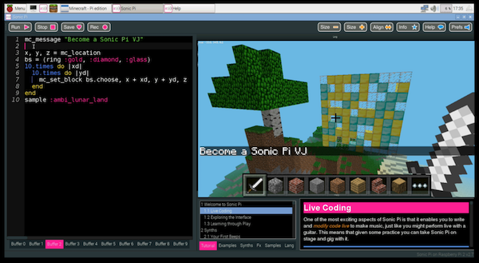
Finally, another great way of generating interesting visuals is to generate huge patterned walls to fly towards and close by. For this effect we'll need to move from placing the blocks randomly to placing them in an ordered manner. We can do this by nesting two sets of iteration (hit the Help button and navigate to section 5.2 of the tutorial "Iteration and Loops" for more background on iteration). The funny |xd| after the do means that xd will be set for each value of the iteration. So the first time it will be 0, then 1, then 2... etc. By nesting two lots of iteration together like this we can generate all the coordinates for a square. We can then randomly choose block types from a ring of blocks for an interesting effect:
x, y, z = mc_location
bs = (ring :gold, :diamond, :glass)
10.times do |xd|
10.times do |yd|
mc_set_block bs.choose, x + xd, y + yd, z
end
end
Pretty neat. Whilst we're having fun here, try changing bs.choose to bs.tick to move from a random pattern to a more regular one. Try changing the block types and the more adventurous of you might want to try sticking this within a live_loop so that the patterns keep changing automatically.
Now, for the VJ finale - change the two 10.times to 100.times and hit Run. Kaboom! A Huge gigantic wall of randomly placed bricks. Imagine how long it would take you to build that manually with your mouse! Double-tap space to enter fly-mode and start swooping by for some great visual effects. Don't stop here though - use your imagination to conjure up some cool ideas and then use the coding power of Sonic Pi to make it real. When you've practised enough dim the lights and put on a VJ show for your friends!
A.9 Zufälligkeit
Back in episode 4 of this tutorial series we took a brief look at randomisation whilst coding up some sizzling synth riffs. Given that randomisation is such an important part of my live coding DJ sets I thought it would be useful to cover the fundamentals in much greater detail. So, get your lucky hat on and let's surf some random streams!
Es gibt keinen Zufall
The first thing to learn which might really surprise you when playing with Sonic Pi's randomisation functions is that they're not actually really random. What does this actually mean? Well, let's try a couple of tests. First, imagine a number in your head between 0 and 1. Keep it there and don't tell me. Now let me guess... was it 0.321567? No? Bah, I'm clearly no good at this. Let me have another go, but let's ask Sonic Pi to choose a number this time. Fire up Sonic Pi v2.7+ and ask it for a random number but again don't tell me:
print rand
Now for the reveal... was it 0.75006103515625? Yes! Ha, I can see you're a little sceptical. Perhaps it was just a lucky guess. Let's try again. Press the Run button again and see what we get... What? 0.75006103515625 again? This clearly can't be random! You're right, it's not.
What's going on here? The fancy computer science word here is determinism. This just means that nothing is by chance and everything is destined to be. Your version of Sonic Pi is destined to always return 0.75006103515625 in the program above. This might sound pretty useless, but let me assure you that it's one of the most powerful parts of Sonic Pi. If you stick at it you'll learn how to rely on the deterministic nature of Sonic Pi's randomisation as a fundamental building block for your compositions and live coded DJ sets.
Eine zufällige Melodie
When Sonic Pi boots it actually loads into memory a sequence of 441,000 pre-generated random values. When you call a random function such as rand or rrand, this random stream is used to generate your result. Each call to a random function consumes a value from this stream. Therefore the 10th call to a random function will use the 10th value from the stream. Also, every time you press the Run button, the stream is reset for that run. This is why I could predict the result to rand and why the 'random' melody was the same every time. Everybody's version of Sonic Pi uses the exact same random stream which is very important when we start sharing our pieces with each other.
Let's use this knowledge to generate a repeatable random melody:
8.times do
play rrand_i(50, 95)
sleep 0.125
end
Tippe dies in einen freien Puffer und drücke Run. Du wirst eine Melodie hören, die aus zufälligen Noten zwischen 50 und 95 besteht. Wenn sie beendet ist, drücke Run noch einmal, um Dir exakt die gleiche Melodie erneut anzuhören.
Praktische Zufälligkeitsfunktionen
Sonic Pi comes with a number of useful functions for working with the random stream. Here's a list of some of the most useful:
rand- Gibt einfach den nächsten Wert des Zufallsparameter zurückrrand- Gibt einen Zufallswert innerhalb eines Bereichs zurückrrand_i- Gibt eine zufällige ganze Zahl innerhalb eines Bereichs zurückone_in- Gibt wahr oder falsch mit der angegebenen Wahrscheinlichkeit zurückdice- Imitiert den Wurf eines Würfels und gibt einen Wert zwischen 1 und 6 zurückchoose- Wählt einen zufälligen Wert aus einer Liste aus
Check out their documentation in the Help system for detailed information and examples.
Resetting the Stream
Whilst the ability to repeat a sequence of chosen notes is essential to allow you to replay a riff on the dance floor, it might not be exactly the riff you want. Wouldn't it be great if we could try a number of different riffs and choose the one we liked best? This is where the real magic starts.
We can manually set the stream with the fn use_random_seed. In Computer Science, a random seed is the starting point from which a new stream of random values can sprout out and blossom. Let's try it:
use_random_seed 0
3.times do
play rrand_i(50, 95)
sleep 0.125
end
Great, we get the first three notes of our random melody above: 84, 83 and 71. However, we can now change the seed to something else. How about this:
use_random_seed 1
3.times do
play rrand_i(50, 95)
sleep 0.125
end
Interesting, we get 83, 71 and 61 . You might notice that the first two numbers here are the same as the last two numbers before - this isn't a coincidence.
Remember that the random stream is just a giant list of 'pre-rolled' values. Using a random seed simply jumps us to a point in that list. Another way of thinking about it is to imagine a huge deck of pre-shuffled cards. Using a random seed is cutting the deck at a particular point. The fabulous part of this is that it's precisely this ability to jump around the random stream which gives us huge power when making music.
Let's revisit our random melody of 8 notes with this new stream resetting power, but let's also throw in a live loop so we can experiment live whilst it's playing:
live_loop :random_riff do
use_random_seed 0
8.times do
play rrand_i(50, 95), release: 0.1
sleep 0.125
end
end
Now, whilst it's still playing, change the seed value from 0 to something else. Try 100, what about 999. Try your own values, experiment and play around - see which seed generates the riff you like best.
Alles zusammenführen
This month's tutorial has been quite a technical dive into the workings of Sonic Pi's randomisation functionality. Hopefully it has given you some insight into how it works and how you can start using randomisation in a reliable way to create repeatable patterns within your music. It's important to stress that you can use repeatable randomisation anywhere you want. For example, you can randomise the amplitude of notes, the timing of the rhythm, the amount of reverb, the current synth, the mix of an FX, etc. etc. In the future we'll take a close look at some of these applications, but for now let me leave you with a short example.
Type the following into a spare buffer, hit Run, and then start changing the seeds around, hit Run again (whilst it's still playing) and explore the different sounds, rhythms and melodies you can make. When you find a nice one, remember the seed number so you can get back to it. Finally, when you've found a few seeds you like, put on a live coded performance for your friends by simply switching between your favourite seeds to create a full piece.
live_loop :random_riff do
use_random_seed 10300
use_synth :prophet
s = [0.125, 0.25, 0.5].choose
8.times do
r = [0.125, 0.25, 1, 2].choose
n = (scale :e3, :minor).choose
co = rrand(30, 100)
play n, release: r, cutoff: co
sleep s
end
end
live_loop :drums do
use_random_seed 2001
16.times do
r = rrand(0.5, 10)
sample :drum_bass_hard, rate: r, amp: rand
sleep 0.125
end
end
A.10 Steuerung
So far during this series we've focussed on triggering sounds. We've discovered that we can trigger the many synths built into Sonic Pi with play or synth and how to trigger pre-recorded samples with sample. We've also looked at how we can wrap these triggered sounds within studio FX such as reverb and distortion using the with_fx command. Combine this with Sonic Pi's incredibly accurate timing system and you can produce a vast array of sounds, beats and riffs. However, once you've carefully selected a particular sound's options and triggered it, there's no ability to mess with it whilst it's playing right? Wrong! Today you're going to learn something very powerful - how to control running synths.
Ein Grundton
Lass uns einen schönen einfachen Sound erzeugen. Starte Sonic Pi und gib in einen neuen Puffer Folgendes ein:
synth :prophet, note: :e1, release: 8, cutoff: 100
Now press the Run button at the top left to hear a lovely rumbling synth sound. Go ahead, press it again a few times to get a feel for it. OK, done? Let's start controlling it!
Synth Nodes
A little known feature in Sonic Pi is that the fns play, synth and sample, return something called a SynthNode which represents a running sound. You can capture one of these SynthNodes using a standard variable and then control it at a later point in time. For example, let's change the value of the cutoff: opt after 1 beat:
sn = synth :prophet, note: :e1, release: 8, cutoff: 100
sleep 1
control sn, cutoff: 130
Let's look at each line in turn:
Firstly we trigger the :prophet synth using the synth fn as normal. However we also capture the result in a variable called sn. We could have called this variable something completely different such as synth_node or jane - the name doesn't matter. However, it's important to choose a name that's meaningful to you for your performances and for people reading your code. I chose sn as it's a nice short mnemonic for synth node.
On line 2 we have a standard sleep command. This does nothing special - it just asks the computer to wait for 1 beat before moving onto the next line.
Line 3 is where the control fun starts. Here, we use the control fn to tell our running SynthNode to change the cutoff value to 130. If you hit the Run button, you'll hear the :prophet synth start playing as before, but after 1 beat it will shift to sound a lot brighter.
Modulierbare Optionen
Most of Sonic Pi's synths and FX opts may be changed after being triggered. However, this isn't the case for all of them. For example, the envelope opts attack:, decay:, sustain: and release: can only be set when triggering the synth. Figuring out which opts can and can't be changed is simple - just head to the documentation for a given synth or FX and then scroll down to the individual option documentation and look for the phrases "May be changed whilst playing" or "Can not be changed once set". For example, the documentation for the :beep synth's attack: opt makes it clear that it's not possible to change it:
- Standard: 0
- Muss null oder größer sein
- Kann nicht mehr geändert werden, wenn einmal festgelegt
- Mit dem aktuellen BPM-Wert skaliert
Mehrere Änderungen
Whilst a synth is running you're not limited to changing it only once - you're free to change it as many times as you like. For example, we can turn our :prophet into a mini arpeggiator with the following:
notes = (scale :e3, :minor_pentatonic)
sn = synth :prophet, note: :e1, release: 8, cutoff: 100
sleep 1
16.times do
control sn, note: notes.tick
sleep 0.125
end
In this snippet of code we just added a couple of extra things. First we defined a new variable called notes which contains the notes we'd like to cycle through (an arpeggiator is just a fancy name for something that cycles through a list of notes in order). Secondly we replaced our single call to control with an iteration calling it 16 times. In each call to control we .tick through our ring of notes which will automatically repeat once we get to the end (thanks to the fabulous power of Sonic Pi's rings). For a bit of variety try replacing .tick with .choose and see if you can hear the difference.
Note that we can change multiple opts simultaneously. Try changing the control line to the following and listen for the difference:
control sn, note: notes.tick, cutoff: rrand(70, 130)
Sliding
When we control a SynthNode, it responds exactly on time and instantly changes the value of the opt to the new one as if you'd pressed a button or flicked a switch requesting the change. This can sound rhythmical and percussive - especially if the opt controls an aspect of the timbre such as cutoff:. However, sometimes you don't want the change to happen instantaneously. Instead, you might want to smoothly move from the current value to the new one as if you'd moved a slider or dial. Of course, Sonic Pi can also do this too using the _slide: opts.
Each opt that can be modified also has a special corresponding _slide: opt that allows you to specify a slide time. For example, amp: has amp_slide: and cutoff: has cutoff_slide:. These slide opts work slightly differently than all the other opts in that they tell the synth note how to behave next time they are controlled. Let's take a look:
sn = synth :prophet, note: :e1, release: 8, cutoff: 70, cutoff_slide: 2
sleep 1
control sn, cutoff: 130
Notice how this example is exactly the same as before except with the addition of cutoff_slide:. This is saying that next time this synth has its cutoff: opt controlled, it will take 2 beats to slide from the current value to the new one. Therefore, when we use control you can hear the cutoff slide from 70 to 130. It creates an interesting dynamic feel to the sound. Now, try changing the cutoff_slide: time to a shorter value such as 0.5 or a longer value such as 4 to see how it changes the sound. Remember, you can slide any of the modifiable opts in exactly this way and each _slide: value can be totally different so you can have the cutoff sliding slowly, the amp sliding fast and the pan sliding somewhere in between if that's what you're looking to create...
Alles zusammenführen
Let's look at a short example which demonstrates the power of controlling synths after they've been triggered. Notice that you can also slide FX just like synths although with a slightly different syntax. Check out section 7.2 of the built-in tutorial for more information on controlling FX.
Kopiere den Code in einen freien Puffer und höre zu. Hör an dieser Stelle nicht auf – spiel mit dem Code herum. Ändere die Wechselzeiten, ändere die Noten, den Synth, die FX und die Pausenzeiten, und probier, etwas ganz Anderes daraus zu machen!
live_loop :moon_rise do
with_fx :echo, mix: 0, mix_slide: 8 do |fx|
control fx, mix: 1
notes = (scale :e3, :minor_pentatonic, num_octaves: 2).shuffle
sn = synth :prophet , sustain: 8, note: :e1, cutoff: 70, cutoff_slide: 8
control sn, cutoff: 130
sleep 2
32.times do
control sn, note: notes.tick, pan: rrand(-1, 1)
sleep 0.125
end
end
end
A.11 Tick Tock
Last month in this series we took a deep technical dive into the randomisation system underpinning Sonic Pi. We explored how we can use it to deterministically add new levels of dynamic control over our code. This month we're going to continue our technical dive and turn our attention to Sonic Pi's unique tick system. By the end of this article you'll be ticking your way through rhythms and riffs on your way to being a live coding DJ.
Beat Counting
When making music we often want to do a different thing depending on which beat it is. Sonic Pi has a special beat counting system called tick to give you precise control over when a beat actually occurs and even supports multiple beats with their own tempos.
Lass uns spielen – um den Beat zu erweitern, müssen wir nur tickaufrufen. Öffne einen neuen Puffer, gib Folgendes ein und drücke Run:
puts tick #=> 0
This will return the current beat: 0. Notice that even if you press the Run button a few times it will always return 0. This is because each run starts a fresh beat counting from 0. However, whilst the run is still active, we can advance the beat as many times as we want:
puts tick #=> 0
puts tick #=> 1
puts tick #=> 2
Whenever you see the symbol #=> at the end of a line of code it means that that line will log the text on the right-hand-side. For example, puts foo #=> 0 means the code puts foo prints 0 to the log at that point in the program.
Checking the Beat
We've seen that tick does two things. It increments (adds one) and returns the current beat. Sometimes we just want to look at the current beat without having to increment it which we can do via look:
puts tick #=> 0
puts tick #=> 1
puts look #=> 1
puts look #=> 1
In this code we tick the beat up twice and then call look twice. We'll see the following values in the log: 0, 1, 1, 1. The first two ticks returned 0, then 1 as expected, then the two looks just returned the last beat value twice which was 1.
Ringe
So now we can advance the beat with tick and check the beat with look. What next? We need something to tick over. Sonic Pi uses rings for representing riffs, melodies and rhythms and the tick system has been specifically designed to work very closely with them. In fact, rings have their own dot version of tick which does two things. Firstly, it acts like a regular tick and increments the beat. Secondly it looks up the ring value using the beat as the index. Let's take a look:
puts (ring :a, :b, :c).tick #=> :a
.tick is a special dot version of tick which will return the first value of the ring :a. We can grab each of the values in the ring by calling .tick multiple times:
puts (ring :a, :b, :c).tick #=> :a
puts (ring :a, :b, :c).tick #=> :b
puts (ring :a, :b, :c).tick #=> :c
puts (ring :a, :b, :c).tick #=> :a
puts look #=> 3
Take a look at the log and you'll see :a, :b, :c and then :a again. Notice that look returns 3. Calls to .tick act just like they are regular calls to tick - they increment the local beat.
A Live Loop Arpeggiator
The real power comes when you mix tick with rings and live_loops. When combined we have all the tools we need to both build and understand a simple arpegiator. We need just four things:
- A ring containing the notes we want to loop over.
- A means of incrementing and obtaining the beat.
- The ability to play a note based on the current beat.
- A loop structure to keep the arpegiator repeating.
Diese Konzepte findest du alle in dem folgenden Code:
notes = (ring 57, 62, 55, 59, 64)
live_loop :arp do
use_synth :dpulse
play notes.tick, release: 0.2
sleep 0.125
end
Let's look at each of these lines. First we define our ring of notes which we'll continually play. We then create a live_loop called :arp which loops round for us. Each time round the live_loop we set our synth to :dpulse and then play the next note in our ring using .tick. Remember that this will increment our beat counter and use the latest beat value as an index into our notes ring. Finally, we wait for an eighth of a beat before looping round again.
Mehrere gleichzeitige Beats
A really important thing to know is that ticks are local to the live_loop. This means that each live_loop has its own independent beat counter. This is much more powerful than having a global metronome and beat. Let's take a look at this in action:
notes = (ring 57, 62, 55, 59, 64)
with_fx :reverb do
live_loop :arp do
use_synth :dpulse
play notes.tick + 12, release: 0.1
sleep 0.125
end
end
live_loop :arp2 do
use_synth :dsaw
play notes.tick - 12, release: 0.2
sleep 0.75
end
Clashing Beats
A big cause of confusion with Sonic Pi's tick system is when people want to tick over multiple rings in the same live_loop:
use_bpm 300
use_synth :blade
live_loop :foo do
play (ring :e1, :e2, :e3).tick
play (scale :e3, :minor_pentatonic).tick
sleep 1
end
Even though each live_loop has its own independent beat counter, we're calling .tick twice within the same live_loop. This means that the beat will be incremented twice every time round. This can produce some interesting polyrhythms but is often not what you want. There are two solutions to this problem. One option is to manually call tick at the start of the live_loop and then use .look to look up the current beat in each live_loop. The second solution is to pass a unique name to each call to .tick such as .tick(:foo). Sonic Pi will then create and track a separate beat counter for each named tick you use. That way you can work with as many beats as you need! See the section on named ticks in 9.4 of the built-in tutorial for more information.
Alles zusammenführen
Let's bring all this knowledge of ticks, rings and live_loops together for a final fun example. As usual, don't treat this as a finished piece. Start changing things and play around with it and see what you can turn it into. See you next time...
use_bpm 240
notes = (scale :e3, :minor_pentatonic).shuffle
live_loop :foo do
use_synth :blade
with_fx :reverb, reps: 8, room: 1 do
tick
co = (line 70, 130, steps: 32).tick(:cutoff)
play (octs :e3, 3).look, cutoff: co, amp: 2
play notes.look, amp: 4
sleep 1
end
end
live_loop :bar do
tick
sample :bd_ada if (spread 1, 4).look
use_synth :tb303
co = (line 70, 130, steps: 16).look
r = (line 0.1, 0.5, steps: 64).mirror.look
play notes.look, release: r, cutoff: co
sleep 0.5
end
A.12 Sample Slicing
Way back in episode 3 of this Sonic Pi series we looked at how to loop, stretch and filter one of the most famous drum breaks of all time - the Amen Break. In this tutorial we're going to take this one step further and learn how to slice it up, shuffle the slices and glue it back together in a completely new order. If that sounds a bit wild to you, don't worry, it will all become clear and you'll soon master a powerful new tool for your live coded sets.
Ton als Daten
Before we get started let's just take a brief moment to understand how to work with samples. By now, you've all hopefully played with Sonic Pi's powerful sampler. If not, there's no time like the present! Boot up your Raspberry Pi, launch Sonic Pi from the Programming menu, type the following into a fresh buffer and then hit the Run button to hear a pre-recorded drum beat:
sample :loop_amen
A recording of a sound is simply represented as data - lots of numbers between -1 and 1 which represent the peaks and troughs of the sound wave. If we play those numbers back in order, we get the original sound. However, what's to stop us from playing them back in a different order and creating a new sound?
How are samples actually recorded? It's actually pretty simple once you understand the basic physics of sound. When you make a sound - for example by hitting a drum, the noise travels through the air in a similar fashion to how the surface of a lake ripples when you throw a pebble into it. When those ripples reach your ears, your eardrum moves sympathetically and converts those movements into the sound you hear. If we wish to record and play back the sound, we therefore need a way of capturing, storing and reproducing those ripples. One way is to use a microphone which acts like an eardrum and moves back and forth as the sound ripples hit it. The microphone then converts its position into a tiny electric signal which is then measured many times a second. These measurements are then represented as a series of numbers between -1 and 1.
If we were to plot a visualisation of the sound it would be a simple graph of data with time on the x axis and microphone/speaker position as a value between -1 and 1 on the y axis. You can see an example of such a graph at the top of the diagram.
Playing Part of a Sample
So, how do we code Sonic Pi to play a sample back in a different order? To answer this question we need to take a look at the start: and finish: opts for sample. These let us control the start and finish positions of our playback of the numbers which represent the sound. The values for both of these opts are represented as a number between 0 and 1 where 0 represents the start of the sample and 1 is the end. So, to play the first half of the Amen Break, we just need to specify a finish: of 0.5:
sample :loop_amen, finish: 0.5
We can add in a start: value to play an even smaller section of the sample:
sample :loop_amen, start: 0.25, finish: 0.5
For fun, you can even have the finish: opt's value be before start: and it will play the section backwards:
sample :loop_amen, start: 0.5, finish: 0.25
Re-ordering Sample Playback
Now that we know that a sample is simply a list of numbers that can be played back in any order and also how to play a specific part of a sample we can now start having fun playing a sample back in the 'wrong' order.
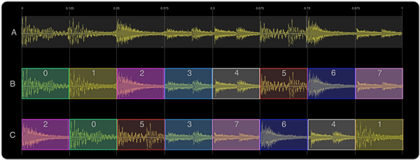
Let's take our Amen Break and chop it up into 8 equally-sized slices and then shuffle the pieces around. Take a look at the diagram: at the top A) represents the graph of our original sample data. Chopping it into 8 slices gives us B) - notice that we've given each slice a different colour to help distinguish them. You can see each slice's start and finish values at the top. Finally C) is one possible re-ordering of the slices. We can then play this back to create a new beat. Take a look at the code to do this:
live_loop :beat_slicer do
slice_idx = rand_i(8)
slice_size = 0.125
s = slice_idx * slice_size
f = s + slice_size
sample :loop_amen, start: s, finish: f
sleep sample_duration :loop_amen, start: s, finish: f
end
- we choose a random slice to play which should be a random number between 0 and 7 (remember that we start counting at 0). Sonic Pi has a handy function for exactly this:
rand_i(8). We then store this random slice index in the variableslice_idx. - We define our
slice_sizewhich is 1/8 or 0.125. Theslice_sizeis necessary for us to convert ourslice_idxinto a value between 0 and 1 so we can use it as ourstart:opt. - We calculate the start position
sby multiplying theslice_idxby theslice_size. - We calculate the finish position
fby adding theslice_sizeto the start positions. - We can now play the sample slice by plugging in the
sandfvalues into thestart:andfinish:opts forsample. - Before we play the next slice we need to know how long to
sleepwhich should be the duration of the sample slice. Luckily, Sonic Pi has us covered withsample_durationwhich accepts all the same opts assampleand simply returns the duration. Therefore, by passingsample_durationourstart:andfinish:opts, we can find out the duration of a single slice. - We wrap all of this code in a
live_loopso that we continue to pick new random slices to play.
Alles zusammenführen
Let's combine everything we've seen so far into a final example which demonstrates how we can take a similar approach to combine randomly sliced beats with some bass to create the start of an interesting track. Now it's your turn - take the code below as a starting point and see if you can take it in your own direction and create something new...
live_loop :sliced_amen do
n = 8
s = line(0, 1, steps: n).choose
f = s + (1.0 / n)
sample :loop_amen, beat_stretch: 2, start: s, finish: f
sleep 2.0 / n
end
live_loop :acid_bass do
with_fx :reverb, room: 1, reps: 32, amp: 0.6 do
tick
n = (octs :e0, 3).look - (knit 0, 3 * 8, -4, 3 * 8).look
co = rrand(70, 110)
synth :beep, note: n + 36, release: 0.1, wave: 0, cutoff: co
synth :tb303, note: n, release: 0.2, wave: 0, cutoff: co
sleep (ring 0.125, 0.25).look
end
end
A.13 Code a Probabilistic Sequencer
In a previous episode of this Sonic Pi series we explored the power of randomisation to introduce variety, surprise and change into our live coded tracks and performances. For example, we randomly picked notes from a scale to create never-ending melodies. Today we're going to learn a new technique which uses randomisation for rhythm - probabilistic beats!
Wahrscheinlichkeit
Before we can start making new beats and synth rhythms we need to take a quick dive into the basics of probability. This might sound daunting and complicated, but really it's just as simple as rolling a dice - honestly! When you take a regular 6 sided board game dice and roll it what's actually happening? Well, firstly you'll roll either a 1, 2, 3, 4, 5 or 6 with exactly the same chance of getting any of the numbers. In fact, given that it's a 6 sided dice, on average (if you roll lots and lots of times) you'll throw a 1 every 6 throws. This means you have a 1 in 6 chance of throwing a 1. We can emulate dice rolls in Sonic Pi with the fn dice. Let's roll one 8 times:
8.times do
puts dice
sleep 1
end
Notice how the log prints values between 1 and 6 just as if we'd rolled a real dice ourselves.
Zufällige Beats
Now imagine you had a drum and every time you were about to hit it you rolled a dice. If you rolled a 1, you hit the drum and if you rolled any other number you didn't. You now have a probabilistic drum machine working with a probability of 1/6! Let's hear what that sounds like:
live_loop :random_beat do
sample :drum_snare_hard if dice == 1
sleep 0.125
end
Let's quickly go over each line to make sure everything is very clear. First we create a new live_loop called :random_beat which will continually repeat the two lines between do and end. The first of these lines is a call to sample which will play a pre-recorded sound (the :drum_snare_hard sound in this case). However, this line has a special conditional if ending. This means that the line will only be executed if the statement on the right hand side of the if is true. The statement in this case is dice == 1. This calls our dice function which, as we have seen, returns a value between 1 and 6. We then use the equality operator == to check to see if this value is 1. If it is 1, then the statement resolves to true and our snare drum sounds, if it isn't 1 then the statement resolves to false and the snare is skipped. The second line simply waits for 0.125 seconds before rolling the dice again.
Wahrscheinlichkeiten ändern
Diejenigen unter euch die schon einmal Rollenspiele gespielt haben, werden mit einer Menge seltsam geformter Würfel verschiedener Zahlenbereiche vertraut sein. Es gibt zum Beispiel den tetraederförmigen Würfel, der 4 Seiten hat und sogar einen 20-seitigen Würfel in der Form eines Ikosaeder. Die Anzahl der Seiten eines Würfels ändert die Chancen, oder die Wahrscheinlichkeit eine 1 zu würfeln. Je weniger Seiten, desto größer sind deine Chancen eine 1 zu würfeln, und je mehr Seiten, desto geringer. Zum Beispiel beträgt die Wahrscheinlichkeit eine 1 zu würfeln bei einem 4-seitigen Würfel 1 zu 4, und bei einem 20-seitigen Würfel beträgt sie 1 zu 20. Glücklicherweise verfügt Sonic Pi über die praktische one_in-Funktion, um genau dies zu beschreiben. Lass uns spielen:
live_loop :different_probabilities do
sample :drum_snare_hard if one_in(6)
sleep 0.125
end
Start the live loop above and you'll hear the familiar random rhythm. However, don't stop the code running. Instead, change the 6 to a different value such as 2 or 20 and hit the Run button again. Notice that lower numbers mean the snare drum sounds more frequently and higher numbers mean the snare triggers fewer times. You're making music with probabilities!
Wahrscheinlichkeiten kombinieren
Things get really exciting when you combine multiple samples being triggered with different probabilities. For example:
live_loop :multi_beat do
sample :elec_hi_snare if one_in(6)
sample :drum_cymbal_closed if one_in(2)
sample :drum_cymbal_pedal if one_in(3)
sample :bd_haus if one_in(4)
sleep 0.125
end
Again, run the code above and then start changing the probabilities to modify the rhythm. Also, try changing the samples to create an entirely new feel. For example try changing :drum_cymbal_closed to :bass_hit_c for extra bass!
Wiederholbare Rhythmen
Next, we can use our old friend use_random_seed to reset the random stream after 8 iterations to create a regular beat. Type the following code to hear a much more regular and repeating rhythm. Once you hear the beat, try changing the seed value from 1000 to another number. Notice how different numbers generate different beats.
live_loop :multi_beat do
use_random_seed 1000
8.times do
sample :elec_hi_snare if one_in(6)
sample :drum_cymbal_closed if one_in(2)
sample :drum_cymbal_pedal if one_in(3)
sample :bd_haus if one_in(4)
sleep 0.125
end
end
One thing I tend to do with this kind of structure is to remember which seeds sound good and make a note of them. That way I can easily re-create my rhythms in future practice sessions or performances.
Alles zusammenführen
Finally, we can throw in some random bass to give it some nice melodic content. Notice that we can also use our newly discovered probabilistic sequencing method on synths just as well as samples. Don't leave it at that though - tweak the numbers and make your own track with the power of probabilities!
live_loop :multi_beat do
use_random_seed 2000
8.times do
c = rrand(70, 130)
n = (scale :e1, :minor_pentatonic).take(3).choose
synth :tb303, note: n, release: 0.1, cutoff: c if rand < 0.9
sample :elec_hi_snare if one_in(6)
sample :drum_cymbal_closed if one_in(2)
sample :drum_cymbal_pedal if one_in(3)
sample :bd_haus, amp: 1.5 if one_in(4)
sleep 0.125
end
end
A.14 Amplitudenmodulation
This month we're going to take a deep dive into one of Sonic Pi's most powerful and flexible audio FX - the :slicer. By the end of this article you will have learned how to manipulate the overall volume of parts of our live coded sound in powerful new ways. This will allow you to create new rhythmic and timbral structures and broaden your sonic possibilities.
Slice that Amp
So, what does the :slicer FX actually do? One way to think about it is that it's just like having someone play around with the volume control on your TV or home hi-fi. Let's take a look but first, listen to the deep growl of the following code which triggers the :prophet synth:
synth :prophet, note: :e1, release: 8, cutoff: 70
synth :prophet, note: :e1 + 4, release: 8, cutoff: 80
Now, let's pipe it through the :slicer FX:
with_fx :slicer do
synth :prophet, note: :e1, release: 8, cutoff: 70
synth :prophet, note: :e1 + 4, release: 8, cutoff: 80
end
Hear how the slicer acts like it's muting and unmuting the audio with a regular beat. Also, notice how the :slicer affects all the audio generated between the do/end blocks. You can control the speed at which it turns the audio on and off with the phase: opt which is short for phase duration. Its default value is 0.25 which means 4 times a second at the default BPM of 60. Let's make it faster:
with_fx :slicer, phase: 0.125 do
synth :prophet, note: :e1, release: 8, cutoff: 70
synth :prophet, note: :e1 + 4, release: 8, cutoff: 80
end
Now, play with different phase: durations yourself. Try longer and shorter values. See what happens when you choose a really short value. Also, try different synths such as :beep or :dsaw and different notes. Take a look at the following diagram to see how different phase: values change the number of amplitude changes per beat.
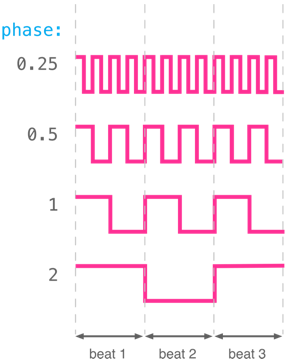
Phase duration is the length of time for one on/off cycle. Therefore smaller values will make the FX switch on and off much faster than larger values. Good values to start playing with are 0.125, 0.25, 0.5 and 1.
Control Waves
By default, the :slicer FX uses a square wave to manipulate the amplitude through time. This is why we hear the amplitude on for a period, then immediately off for a period, then back on again. It turns out that the square wave is just one of 4 different control waves that are supported by :slicer. The others are saw, triangle and (co)sine. Take a look at the diagram below to see what these look like. We can also hear what they sound like. For example, the following code uses (co)sine as the control wave. Hear how the sound doesn't turn on and off abruptly but instead smoothly fades in and out:
with_fx :slicer, phase: 0.5, wave: 3 do
synth :dsaw, note: :e3, release: 8, cutoff: 120
synth :dsaw, note: :e2, release: 8, cutoff: 100
end
Have a play with the different wave forms by changing the wave: opt to 0 for saw, 1 for square, 2 for triangle and 3 for sine. See how different waves sound with different phase: opts too.
Each of these waves can be inverted with the invert_wave: opt which flips it on the y axis. For example, in a single phase the saw wave typically starts high, and slowly goes down before jumping back to the top. With invert_wave: 1 it will start low and slowly go up before jumping back down again. Additionally, the control wave can be started at different points with the phase_offset: opt which should be a value between 0 and 1. By playing around with phase:, wave:, invert_wave: and phase_offset opts you can dramatically change how the amplitude is modified through time.
Dauer
Setting your levels
By default, :slicer switches between amplitude values 1 (fully loud) and 0 (silent). This can be changed with the amp_min: and amp_max: opts. You can use this alongside the sine wave setting to create a simple tremolo effect:
with_fx :slicer, amp_min: 0.25, amp_max: 0.75, wave: 3, phase: 0.25 do
synth :saw, release: 8
end
This is just like grabbing the volume knob on your hi-fi and moving it up and down just a little so the sound 'wobbles' in and out.
Wahrscheinlichkeiten
One of :slicer's powerful features is its ability to use probability to choose whether or not to turn the slicer on or off. Before the :slicer FX starts a new phase it rolls a dice and based on the result either uses the selected control wave or keeps the amplitude off. Let's take a listen:
with_fx :slicer, phase: 0.125, probability: 0.6 do
synth :tb303, note: :e1, cutoff_attack: 8, release: 8
synth :tb303, note: :e2, cutoff_attack: 4, release: 8
synth :tb303, note: :e3, cutoff_attack: 2, release: 8
end
Hear how we now have an interesting rhythm of pulses. Try changing the probability: opt to a different value between 0 and 1. Values closer to 0 will have more space between each sound due to the likelihood of the sound being triggered being much lower.
Another thing to notice is that the probability system in the FX is just like the randomisation system accessible via fns such as rand and shuffle. They are both completely deterministic. This means that each time you hit Run you'll hear exactly the same rhythm of pulses for a given probability. If you would like to change things around you can use the seed: opt to select a different starting seed. This works exactly the same as use_random_seed but only affects that particular FX.
Finally, you can change the 'resting' position of the control wave when the probability test fails from 0 to any other position with the prob_pos: opt:
with_fx :slicer, phase: 0.125, probability: 0.6, prob_pos: 1 do
synth :tb303, note: :e1, cutoff_attack: 8, release: 8
synth :tb303, note: :e2, cutoff_attack: 4, release: 8
synth :tb303, note: :e3, cutoff_attack: 2, release: 8
end
Slicing Beats
One really fun thing to do is to use :slicer to chop a drum beat in and out:
with_fx :slicer, phase: 0.125 do
sample :loop_mika
end
This allows us to take any sample and create new rhythmical possibilities which is a lot of fun. However, one thing to be careful about is to make sure that the tempo of the sample matches the current BPM in Sonic Pi otherwise the slicing will sound totally off. For example, try swapping :loop_mika with the loop_amen sample to hear how bad this can sound when the tempos don't align.
Tempo ändern
As we have already seen, changing the default BPM with use_bpm will make all the sleep times and synth envelope durations grow or shrink to match the beat. The :slicer FX honours this too, as the phase: opt is actually measured in beats not seconds. We can therefore fix the issue with loop_amen above by changing the BPM to match the sample:
use_sample_bpm :loop_amen
with_fx :slicer, phase: 0.125 do
sample :loop_amen
end
Alles zusammenführen
Let's apply all these ideas into a final example that only uses the :slicer FX to create an interesting combination. Go ahead, start changing it and make it into your own piece!
live_loop :dark_mist do
co = (line 70, 130, steps: 8).tick
with_fx :slicer, probability: 0.7, prob_pos: 1 do
synth :prophet, note: :e1, release: 8, cutoff: co
end
with_fx :slicer, phase: [0.125, 0.25].choose do
sample :guit_em9, rate: 0.5
end
sleep 8
end
live_loop :crashing_waves do
with_fx :slicer, wave: 0, phase: 0.25 do
sample :loop_mika, rate: 0.5
end
sleep 16
end
A.15 Five Live Coding Techniques
In this month's Sonic Pi tutorial we're going to take a look at how you can start treating Sonic Pi like a real instrument. We therefore need to start thinking of code in a completely different way. Live coders think of code in a similar way to how violinists think of their bow. In fact, just like a violinist can apply various bowing techniques to create different sounds (long slow motions vs short fast hits) we will explore five of the basic live coding techniques that Sonic Pi enables. By the end of this article you'll be able to start practicing for your own live coded performances.
1. Memorise the Shortcuts
The first tip to live coding with Sonic Pi is to start using the shortcuts. For example, instead of wasting valuable time reaching for the mouse, moving it over to the Run button and clicking, you can simply press alt and r at the same time which is much faster and keeps your fingers at the keyboard ready for the next edit. You can find out the shortcuts for the main buttons at the top by hovering the mouse over them. See section 10.2 of the built-in tutorial for the full list of shortcuts.
When performing, one fun thing to do is to add a bit of flair with your arm motion when hitting shortcuts. For example, it's often good to communicate to the audience when you're about to make a change - so embellish your movement when hitting alt-r just like a guitarist would do when hitting a big power chord.
2. Manually Layer your Sounds
Now you can trigger code instantly with the keyboard, you can instantly apply this skill for our second technique which is to layer your sounds manually. Instead of 'composing' using lots of calls to play, and sample separated by calls to sleep we will have one call to play which we will manually trigger using alt-r. Let's try it. Type the following code into a fresh buffer:
synth :tb303, note: :e2 - 0, release: 12, cutoff: 90
Now, hit Run and whilst the sound is playing, modify the code in order to drop down four notes by changing it to the following:
synth :tb303, note: :e2 - 4, release: 12, cutoff: 90
Now, hit Run again, to hear both sounds playing at the same time. This is because Sonic Pi's Run button doesn't wait for any previous code to finish, but instead starts the code running at the same time. This means you can easily layer lots of sounds manually with minor or major modifications between each trigger. For example, try changing both the note: and the cutoff: opts and then re-trigger.
You can also try this technique with long abstract samples. For example:
sample :ambi_lunar_land, rate: 1
Try starting the sample off, and then progressively halving the rate: opt between hitting Run from 1 to 0.5 to 0.25 to 0.125 and then even try some negative values such as -0.5. Layer the sounds together and see where you can take it. Finally, try adding some FX.
When performing, working with simple lines of code in this way means that an audience new to Sonic Pi has a good chance to follow what you're doing and relate the code that they can read to the sounds they are hearing.
3. Master Live Loops
When working with more rhythmic music, it can often be hard to manually trigger everything and keep good time. Instead, it is often better to use a live_loop. This provides repetition for your code whilst also giving the ability to edit the code for the next time round the loop. They also will run at the same time as other live_loops which means you can layer them together both with each other and manual code triggers. Take a look at section 9.2 of the built-in tutorial for more information about working with live loops.
When performing, remember to make use of live_loop's sync: opt to allow you to recover from accidental runtime mistakes which stop the live loop running due to an error. If you already have the sync: opt pointing to another valid live_loop, then you can quickly fix the error and re-run the code to re-start things without missing a beat.
4. Verwende den Hauptmischer
One of Sonic Pi's best kept secrets is that it has a main mixer through which all sound flows. This mixer has both a low pass filter and a high pass filter built-in, so you can easily perform global modifications to the sound. The main mixer's functionality can be accessed via the fn set_mixer_control!. For example, whilst some code is running and making sound, enter this into a spare buffer and hit Run:
set_mixer_control! lpf: 50
After you run this code, all existing and new sounds will have a low pass filter applied to them and will therefore sound more muffled. Note that this means that the new mixer values stick until they are changed again. However, if you want, you can always reset the mixer back to its default state with reset_mixer!. Some of the currently supported opts are: pre_amp:, lpf: hpf:, and amp:. For the full list, see the built-in docs for set_mixer_control!.
Use the mixer's *_slide opts to slide one or many opts values over time. For example, to slowly slide the mixer's low pass filter down from the current value to 30, use the following:
set_mixer_control! lpf_slide: 16, lpf: 30
You can then slide quickly back to a high value with:
set_mixer_control! lpf_slide: 1, lpf: 130
Bei der Ausführung ist es oft hilfreich, einen Puffer frei zu halten, um, wie jetzt, mit dem Mixer zu arbeiten.
5. Übung
The most important technique for live coding is practice. The most common attribute across professional musicians of all kinds is that they practice playing with their instruments - often for many hours a day. Practice is just as important for a live coder as a guitarist. Practice allows your fingers to memorise certain patterns and common edits so you can type and work with them more fluently. Practice also gives you opportunities to explore new sounds and code constructs.
When performing, you'll find the more practice you do, the easier it will be for you to relax into the gig. Practice will also give you a wealth of experience to draw from. This can help you understand which kinds of modifications will be interesting and also work well with the current sounds.
Alles zusammenführen
This month, instead of giving you a final example that combines all the things discussed, let's part by setting down a challenge. See if you can spend a week practicing one of these ideas every day. For example, one day practice manual triggers, the next do some basic live_loop work and the following day play around with the main mixer. Then repeat. Don't worry if things feel slow and clunky at first - just keep practicing and before you know it you'll be live coding for a real audience.
A.16 How to Practice Live Coding
Last month we took a look at five important techniques for mastering live coding - in other words, we explored how we could use Sonic Pi to approach code in the same way we would approach a musical instrument. One of the important concepts that we discussed was practice. This month we're going to take a deeper dive into understanding why live coding practice is important and how you might start.
Übe regelmäßig
The most important piece of advice is to make sure you practice regularly. As a rule I typically practice for 1-2 hours a day, but 20 mins is just fine when you're starting out. Little but often is what you're aiming for - so if you can only manage 10 minutes, that's a great start.
Practice tip #1 - start to develop a practice routine. Find a nice time in the day that works for you and try and practice at that time as many days of the week as you can. Before long you'll be looking forward to your regular session.
Learn to Touch Type
If you watch a professional musician performing on stage you'll likely notice a few things. Firstly, when they play they don't stare at their instrument. Their fingers, arms and bodies know which keys to press, strings to pluck or drums to hit without them having to think about it too much. This is known as "muscle memory" and although it might sound like something only professionals can do - it's just the same as when you first learned to walk or ride a bike - practicing through repetition. Live coders use muscle memory to free their minds from having to think about where to move their fingers so they can focus on the music. This is called touch-typing - typing without having to look at the keyboard.
Practice tip #2 - learn how to touch type. There are many apps, websites and even games which can help you achieve this. Find one you like the look of and stick at it until you can code without looking down.
Code whilst standing
The body of a musician is conditioned for playing their instrument. For example, a trumpet player needs to be able to blow hard, a guitar player needs to be able to grip the fretboard with strength and a drummer needs to be able to continually hit the drums for long periods of time. So, what's physical about live coding? Just like DJs, live coders typically perform whilst standing up and some even dance whilst they code! If you practice live coding whilst sitting at a desk and then have to get up and stand at a gig, you'll likely find the difference very difficult and frustrating.
Practice tip #3 - stand whilst you practice. The easiest way to do this is to use a standing height desk. However, if like me you don't have one at home, there's a couple of low-fi options. The approach I take is to use an ironing board which happens to work rather well. Another is to stack some boxes or large books on a normal desk and place your keyboard on top of that. Also, make sure you stretch before you start practicing and try and dance a little during the session. Remember, nobody is watching you, so have fun and you'll feel much more natural on stage.
Practice setting up
Most instruments require some assembly and tuning before they can be played. Unless you're a rockstar with a bus full of roadies, you'll have to set up your own instrument before your gig. This is often a stressful time and it is easy for problems to occur. One way to help with this is to incorporate the setup process into your practice sessions.
Practice tip #4 - treat setting up as an important part of your practice. For example, have a box or bag that you can keep your Raspberry Pi and keyboard in etc. Before each practice session, take out all the parts, connect everything, and work through the boot process until you have Sonic Pi running and can make sounds. Once you've finished practicing, take the time to carefully pack everything away afterwards. This may take some time at first, but before long you'll be able to setup and pack everything away incredibly quickly without having to think about it.
Experimentiere musikalisch
Once you've set up and are ready to start making music, you might find yourself struggling to know where to start. One problem many people face is that they might have a good idea of the kinds of sounds they want to make, but are frustrated that they can't produce them. Some people don't even know what kind of sounds they want to make! The first thing to do is not to worry - this is very common and happens to every musician - even if they've been practicing for a long time. It is much more important to be making sounds you don't like than not making any sounds at all.
Practice tip #5 - spend time making sounds and music you don't like. Try to make time to explore new sounds and ideas. Don't worry that it might sound terrible if it's not the style you're looking for. When you're experimenting like this you increase the chance of stumbling over a sound or combination of sounds which you love! Even if 99% of the sounds you make are bad, that 1% might be the riff or intro to your new track. Forget the things you don't like and remember the parts you do. This is even easier when you're making music with code - just hit save!
Höre den Code
Viele Musiker können auf ein Notenblatt schauen und die Musik in ihrem Kopf hören, ohne das sie gespielt wird. Das ist eine sehr nützliche Fähigkeit und es lohnt sich auch diese auf deine Live-Coding Übungen zu übertragen: Der wichtige Punkt ist, dass Du eine gewisse Vorstellungen darüber entwickelst, wie sich Dein Code anhören wird. Du musst es natürlich nicht genau in deinem Kopf hören können, aber es ist praktisch, ein Gefühl dafür zu haben, ob sich der Code schnell oder langsam, laut, rhythmisch, melodisch, zufällig usw. anhören wird. Das endgültige Ziel ist dann, diesen Prozess umkehren zu können und zu Musik, die Du dir in deinem Kopf vorstellst, den passenden Code schreiben zu können. Bis dahin wirst du wahrscheinlich sehr viel üben müssen, aber wenn du es dann kannst, wirst du es schaffen auf der Bühne improvisieren zu können und deine Ideen fließend umzusetzen.
Practice tip #6 - write some code into Sonic Pi but don't hit the Run button. Instead, try to imagine what sound it is going to produce. Then, hit Run, listen, and think about what you got right and what you didn't. Keep repeating this until it become a natural part of your coding process. When I practice I normally have a good idea of what the code will sound like. However, I still am occasionally surprised, and then I'll stop and spend some time thinking about why I was wrong. Each time this happens, I learn new tricks which allow me to express myself in new ways.
Remove all distractions
A common problem when practicing is to become distracted with other things. Practicing is hard and requires real discipline regardless of the kind of music you're making - from jazz to classical to EDM. If you're struggling to get started or make progress, it's often too easy to hop on social media, or look something up on the internet etc. If you've set yourself a target of 20 minutes of practice, it's important to try and spend all that time being as productive as possible.
Practice tip #7 - before you start practicing remove as many distractions as possible. For example, disconnect from the internet, put your phone in another room and try to practice in a quiet place where you're unlikely to be disturbed. Try to focus on coding music and you can return to your distractions when you've finished.
Keep a practice diary
When you are practicing, you'll often find your mind is full of new exciting ideas - new musical directions, new sounds to try out, new functions to write, etc. These ideas are often so interesting that you might stop what you're doing and start working on the idea. This is another form of distraction!
Practice tip #8 - keep a practice diary by your keyboard. When you get an exciting new idea, temporarily pause your practice session, quickly jot the idea down, then forget about it and carry on practicing. You can then spend some quality time thinking about and working on your ideas after you've finished practicing.
Alles zusammenführen
Try to establish a practice routine which incorporates as many of these ideas as possible. Try to keep the sessions as fun as possible but be aware that some practice sessions will be hard and feel a little like work. However, it will all be worth it once you've created your first piece or given your first performance. Remember, practice is the key to success!
A.17 Sample Stretching
When people discover Sonic Pi, one of the first things they learn is how simple it is to play pre-recorded sounds using the sample function. For example, you can play an industrial drum loop, hear the sound of a choir or even listen to a vinyl scratch all via a single line of code. However, many people don't realise that you can actually vary the speed that the sample is played back at for some powerful effects and a whole new level of control over your recorded sounds. So, fire up a copy of Sonic Pi and let's get started stretching some samples!
Sample verlangsamen
To modify the playback rate of a sample we need to use the rate: opt:
Sample :guit_em9, rate: 1
If we specify a rate: of 1 then the sample is played back at the normal rate. If we want to play it back at half speed we simply use a rate: of 0.5:
sample :guit_em9, rate: 0.5
Dies hat zwei Auswirkungen auf den Ton. Das Sample hört sich tiefer an und es dauert doppelt so lange es abzuspielen (eine Erklärung hierfür findest du in der Seitenleiste). Wir können den Wert von rate immer kleiner machen, indem wir uns 0 annähern. Eine Rate von 0.25 bedeutet ein Viertel der Geschwindigkeit, eine Rate von 0.1 ein Zehntel, usw. Spiele mit niedrige Raten herum und schaue, ob du es schaffst ein tiefes Murren zu erzeugen.
Sample beschleunigen
In addition to making the sound longer and lower using a small rate, we can use higher rates to make the sound shorter and higher. Let's play with a drum loop this time. First, take a listen to how it sounds at the default rate of 1:
sample :loop_amen, rate: 1
Lassen wir es etwas schneller werden:
sample :loop_amen, rate: 1.5
Ha! We just moved musical genres from old-skool techno to jungle. Notice how the pitch of each drum hit is higher as well as how the whole rhythm speeds up. Now, try even higher rates and see how high and short you can make the drum loop. For example, if you use a rate of 100, the drum loop turns into a click!
Rückwärtsgang
Now, I'm sure many of you are thinking the same thing right now... "what if you use a negative number for the rate?". Great question! Let's think about this for a moment. If our rate: opt signifies the speed with which the sample is played back, 1 being normal speed, 2 being double speed, 0.5 being half speed, -1 must mean backwards! Let's try it on a snare. First, play it back at the normal rate:
sample :elec_filt_snare, rate: 1
Jetzt lass es uns rückwärts abspielen:
sample :elec_filt_snare, rate: -1
Of course, you can play it backwards twice as fast with a rate of -2 or backwards at half speed with a rate of -0.5. Now, play around with different negative rates and have fun. It's particularly amusing with the :misc_burp sample!
Sample, Rate and Pitch
One of the effects of rate modification on samples is that faster rates result in the sample sounding higher in pitch and slower rates result in the sample sounding lower in pitch. Another place you may have heard this effect in every day life is when you're cycling or driving past a beeping pedestrian crossing - as you're heading towards the sound source the pitch is higher than when you're moving away from the sound - the so-called Doppler effect. Why is this?
Let's consider a simple beep which is represented by a sine wave. If we use an oscilloscope to plot a beep, we'll see something like Figure A. If we plot a beep an octave higher, we'll see Figure B and an octave lower will look like Figure C. Notice that the waves of higher notes are more compact and the waves of lower notes are more spread out.
A sample of a beep is nothing more than a lot of numbers (x, y, coordinates) which when plotted onto a graph will re-draw the original curves. See figure D where each circle represents a coordinate. To turn the coordinates back into audio, the computer works through each x value and sends the corresponding y value to the speakers. The trick here is that the rate at which the computer works through the x numbers does not have to be the same as the rate with which they were recorded. In other words, the space (representing an amount of time) between each circle can be stretched or compressed. So, if the computer walks through the x values faster than the original rate, it will have the effect of squashing the circles closer together which will result in a higher sounding beep. It will also make the beep shorter as we will work through all the circles faster. This is shown in Figure E.
Finally, one last thing to know is that a mathematician called Fourier proved that any sound is actually lots and lots of sine waves all combined together. Therefore, when we compress and stretch any recorded sound we're actually stretching and compressing many sine waves all at the same time in exactly this manner.
Pitch Bending
As we've seen, using a faster rate will make the sound higher in pitch and a slower rate will make the sound lower in pitch. A very simple and useful trick is to know that doubling the rate actually results in the pitch being an octave higher and inversely halving the rate results in the pitch being an octave lower. This means that for melodic samples, playing it alongside itself at double/half rates actually sounds rather nice:
sample :bass_trance_c, rate: 1
sample :bass_trance_c, rate: 2
sample :bass_trance_c, rate: 0.5
However, what if we just want to alter the rate such that the pitch goes up one semitone (one note up on a piano)? Sonic Pi makes this very easy via the rpitch: opt:
sample :bass_trance_c
sample :bass_trance_c, rpitch: 3
sample :bass_trance_c, rpitch: 7
If you take a look at the log on the right, you'll notice that an rpitch: of 3 actually corresponds to a rate of 1.1892 and a rpitch: of 7 corresponds to a rate of 1.4983. Finally, we can even combine rate: and rpitch: opts:
sample :ambi_choir, rate: 0.25, rpitch: 3
sleep 3
sample :ambi_choir, rate: 0.25, rpitch: 5
sleep 2
sample :ambi_choir, rate: 0.25, rpitch: 6
sleep 1
sample :ambi_choir, rate: 0.25, rpitch: 1
Alles zusammenführen
Let's take a look at a simple piece which combines these ideas. Copy it into an empty Sonic Pi buffer, hit play, listen to it for a while and then use it as a starting point for your own piece. See how much fun it is to manipulate the playback rate of samples. As an added exercise try recording your own sounds and play around with the rate to see what wild sounds you can make.
live_loop :beats do
sample :guit_em9, rate: [0.25, 0.5, -1].choose, amp: 2
sample :loop_garzul, rate: [0.5, 1].choose
sleep 8
end
live_loop :melody do
oct = [-1, 1, 2].choose * 12
with_fx :reverb, amp: 2 do
16.times do
n = (scale 0, :minor_pentatonic).choose
sample :bass_voxy_hit_c, rpitch: n + 4 + oct
sleep 0.125
end
end
end
A.18 Sound Design - Additive Synthesis
This is the first of a short series of articles on how to use Sonic Pi for sound design. We'll be taking a quick tour of a number of different techniques available for you to craft your own unique sound. The first technique we'll look at is called additive synthesis. This may sound complicated - but if we expand each word slightly the meaning pops right out. Firstly, additive means a combination of things and secondly synthesis means to create sound. Additive synthesis therefore means nothing more complicated than combining existing sounds to create new ones. This synthesis technique dates back a very long time - for example, pipe organs in the middle ages had lots of slightly different sounding pipes which you could enable or disable with stops. Pulling out the stop for a given pipe 'added it to the mix' making the sound richer and more complex. Now, let's see how we can pull out all the stops with Sonic Pi.
Simple Combinations
Let's start with the most basic sound there is - the humble pure-toned sine wave:
synth :sine, note: :d3
Now, let's see how this sounds combined with a square wave:
synth :sine, note: :d3
synth :square, note: :d3
Notice how the two sounds combine to form a new, richer sound. Of course, we don't have to stop there, we can add as many sounds as we need. However, we need to be careful with how many sounds we add together. Just like when we mix paints to create new colours, adding too many colours will result in a messy brown, similarly - adding too many sounds together will result in a muddy sound.
Blending
Let's add something to make it sound a little brighter. We could use a triangle wave at an octave higher (for that high bright sound) yet only play it at amp 0.4 so it adds something extra to the sound rather than taking it over:
synth :sine, note: :d3
synth :square, note: :d3
synth :tri, note: :d4, amp: 0.4
Now, try creating your own sounds by combining 2 or more synths at different octaves and amplitudes. Also, note that you can play around with each synth's opts to modify each source sound before it is mixed in for even more combinations of sounds.
Verstimmung
So far, when combining our different synths we've used either the same pitch or switched octave. How might it sound if we didn't stick to octaves but instead chose a slightly higher or lower note? Let's try it:
detune = 0.7
synth :square, note: :e3
synth :square, note: :e3 + detune
If we detune our square waves by 0.7 notes we hear something that perhaps doesn't sound in tune or correct - a 'bad' note. However, as we move closer to 0 it will sound less and less out of tune as the pitches of the two waves get closer and more similar. Try it for yourself! Change the detune: opt value from 0.7 to 0.5 and listen to the new sound. Try 0.2, 0.1, 0.05, 0. Each time you change the value, take a listen and see if you can hear how the sound is changing. Notice that low detune values such as 0.1 produce a really nice 'thick' sound, with both slightly different pitches interacting with each other in interesting, often surprising, ways.
Einige der integrierten Synths haben bereits eine Option zur Verstimmung, die das ganze für einem Synth machen. Probiere die Option detune: von :dsaw, :dpulse und :dtri aus.
Amplitudenmodellierung
Another way we can finely craft our sound is to use a different envelope and options for each synth trigger. For example this will allow you to make some aspects of the sound percussive and other aspects ring out for a period of time.
detune = 0.1
synth :square, note: :e1, release: 2
synth :square, note: :e1 + detune, amp: 2, release: 2
synth :gnoise, release: 2, amp: 1, cutoff: 60
synth :gnoise, release: 0.5, amp: 1, cutoff: 100
synth :noise, release: 0.2, amp: 1, cutoff: 90
In the example above I have mixed in a noisy percussive element to the sound along with some more persistent background rumbling. This was achieved firstly by using two noise synths with middling cutoff values (90 and 100) using short release times along with a noise with a longer release time but with a low cutoff value (which makes the noise less crisp and more rumbly.)
Alles zusammenführen
Let's combine all these techniques to see if we can use additive synthesis to re-create a basic bell sound. I've broken this example into four sections. Firstly we have the 'hit' section which is the initial onset part of the bell sound - so uses a short envelope (e.g. a release: of around 0.1). Next we have the long ringing section in which I'm using the pure sound of the sine wave. Notice that I'm often increasing the note by roughly 12 and 24 which are the number of notes in one and two octaves. I have also thrown in a couple of low sine waves to give the sound some bass and depth. Finally, I used define to wrap my code in a function which I can then use to play a melody. Try playing your own melody and also messing around with the contents of the :bell function until you create your own fun sound to play with!
define :bell do |n|
# Triangle waves for the 'hit'
synth :tri, note: n - 12, release: 0.1
synth :tri, note: n + 0.1, release: 0.1
synth :tri, note: n - 0.1, release: 0.1
synth :tri, note: n, release: 0.2
# Sine waves for the 'ringing'
synth :sine, note: n + 24, release: 2
synth :sine, note: n + 24.1, release: 2
synth :sine, note: n + 24.2, release: 0.5
synth :sine, note: n + 11.8, release: 2
synth :sine, note: n, release: 2
# Low sine waves for the bass
synth :sine, note: n - 11.8, release: 2
synth :sine, note: n - 12, release: 2
end
# Play a melody with our new bell!
bell :e3
sleep 1
bell :c2
sleep 1
bell :d3
sleep 1
bell :g2
A.19 Sound Design - Subtractive Synthesis
This is the second in a series of articles on how to use Sonic Pi for sound design. Last month we looked at additive synthesis which we discovered was the simple act of playing multiple sounds at the same time to make a new combined sound. For example we could combine different sounding synths or even the same synth at different pitches to build a new complex sound from simple ingredients. This month we'll look at a new technique commonly called subtractive synthesis which is simply the act of taking an existing complex sound and removing parts of it to create something new. This is a technique which is commonly associated with the sound of analog synthesisers of the 1960s and 1970s but also with the recent renaissance of modular analog synths through popular standards such as Eurorack.
Despite this sounding like a particularly complicated and advanced technique, Sonic Pi makes it surprisingly simple and easy - so let's dive right in.
Complex Source Signal
For a sound to work well with subtractive synthesis, it typically needs to be fairly rich and interesting. This doesn't mean we need something hugely complex - in fact, just a standard :square or :saw wave will do:
synth :saw, note: :e2, release: 4
Notice that this sound is already pretty interesting and contains many different frequencies above :e2 (the second E on a piano) which add to create the timbre. If that didn't make much sense to you, try comparing it with the :beep:
synth :beep, note: :e2, release: 4
As the :beep synth is just a sine wave, you'll hear a much purer tone and only at :e2 and none of the high crispy/buzzy sounds which you heard in the :saw. It's this buzziness and variation from a pure sine wave that we can play with when we use subtractive synthesis.
Filter
Once we have our raw source signal, the next step is to pass it through a filter of some kind which will modify the sound by removing or reducing parts of it. One of the most common filters used for subtractive synthesis is something called a low pass filter. This will allow all the low parts of the sound through but will reduce or remove the higher parts. Sonic Pi has a powerful yet simple to use FX system that includes a low pass filter, called :lpf. Let's play with it:
with_fx :lpf, cutoff: 100 do
synth :saw, note: :e2, release: 4
end
If you listen carefully you'll hear how some of that buzziness and crispiness has been removed. In fact, all the frequencies in the sound above note 100 have been reduced or removed and only the ones below are still present in the sound. Try changing that cutoff: point to lower notes, say 70 and then 50 and compare the sounds.
Of course, the :lpf isn't the only filter you can use to manipulate the source signal. Another important FX is the high pass filter referred to as :hpf in Sonic Pi. This does the opposite to :lpf in that it lets the high parts of the sound through and cuts off the low parts.
with_fx :hpf, cutoff: 90 do
synth :saw, note: :e2, release: 4
end
Notice how this sounds much more buzzy and raspy now that all the low frequency sounds have been removed. Play around with the cutoff value - notice how lower values let more of the original bass parts of the source signal through and higher values sound increasingly tinny and quiet.
Low Pass Filter
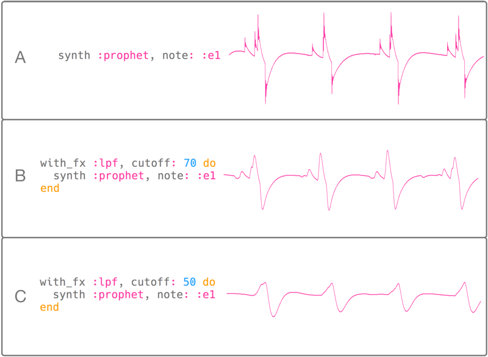
The low pass filter is such an important part of every subtractive synthesis toolkit that it's worth taking a deeper look at how it works. This diagram shows the same sound wave (the :prophet synth) with varying amounts of filtering. At the top, section A shows the audio wave with no filtering. Notice how the wave form is very pointy and contains lots of sharp edges. It is these hard, sharp angles that produce the high crispy/buzzy parts of the sound. Section B shows the low pass filter in action - notice how it is less pointy and more rounded than the wave form above. This means that the sound will have fewer high frequencies giving it a more mellow rounded feel. Section C shows the low pass filter with a fairly low cutoff value - this means that even more of the high frequencies have been removed from the signal resulting in an even softer, rounder wave form. Finally, notice how the size of the wave form, which represents the amplitude, decreases as we move from A to C. Subtractive synthesis works by removing parts of the signal which means that the overall amplitude is reduced as the amount of filtering that is taking place increases.
Filter Modulation
So far we've just produced fairly static sounds. In other words, the sound doesn't change in any way for the entirety of its duration. Often you might want some movement in the sound to give the timbre some life. One way to achieve this is via filter modulation - changing the filter's options through time. Luckily Sonic Pi gives you powerful tools to manipulate an FX's opts through time. For example, you can set a slide time to each modulatable opt to specify how long it should take for the current value to linearly slide to the target value:
with_fx :lpf, cutoff: 50 do |fx|
control fx, cutoff_slide: 3, cutoff: 130
synth :prophet, note: :e2, sustain: 3.5
end
Let's take a quick look at what's going on here. Firstly we start an :lpf FX block as normal with an initial cutoff: of a low 50. However, the first line also finishes with the strange |fx| at the end. This is an optional part of the with_fx syntax which allows you to directly name and control the running FX synth. Line 2 does exactly this and controls the FX to set the cutoff_slide: opt to 3 and the new target cutoff: to be 130. The FX will now start sliding the cutoff: opt's value from 50 to 130 over a period of 3 beats. Finally we also trigger a source signal synth so we can hear the effect of the modulated low pass filter.
Alles zusammenführen
This is just a very basic taster of what's possible when you use filters to modify and change a source sound. Try playing with Sonic Pi's many built-in FX to see what fun sounds you can design. If your sound feels too static, remember you can start modulating the options to create some movement.
Let's finish by designing a function which will play a new sound created with subtractive synthesis. See if you can figure out what's going on here - and for the advanced Sonic Pi readers out there - see if you can work out why I wrapped everything inside a call to at (please send answers to @samaaron on Twitter).
define :subt_synth do |note, sus|
at do
with_fx :lpf, cutoff: 40, amp: 2 do |fx|
control fx, cutoff_slide: 6, cutoff: 100
synth :prophet, note: note, sustain: sus
end
with_fx :hpf, cutoff_slide: 0.01 do |fx|
synth :dsaw, note: note + 12, sustain: sus
(sus * 8).times do
control fx, cutoff: rrand(70, 110)
sleep 0.125
end
end
end
end
subt_synth :e1, 8
sleep 8
subt_synth :e1 - 4, 8
A.20 Creative coding in the classroom with Sonic Pi
(This article was published in issue 9 of the Hello World Magazine)
Code is one of the most creative media that humans have created. The initially obscure symbols of parentheses and lambdas are not just deeply rooted in science and mathematics, they are the closest we have managed to get to casting the same kind of magical spells as Gandalf and Harry Potter. I believe that this provides a powerful means of engagement in our learning spaces. Through the magic of code we are able to conjure up individually meaningful stories and learning experiences.
We are surrounded by magical experiences. From the sleight of hand of a stage magician making the ball disappear into thin air, to the wonder of seeing your favourite band perform on a big stage. It is these "wow" moments that inspire us to pick up a magic book and learn the French Drop or to start jamming power chords on an old guitar. How might we create similarly deep and lasting senses of wonder that will motivate people to practice and learn the fundamentals of programming?
Musical Engines and Notation
The histories of music and computers have been intricately woven together since the inception of computing machines, or "engines" as Charles Babbage's powerful analytical engine was called. Back in 1842 the Mathematician Ada Lovelace, who worked very closely with Babbage, saw the creative potential of these engines. Whilst these first engines had originally been designed to accurately solve hard maths problems, Ada dreamt about making music with them:
"..the engine might compose elaborate and scientific pieces of music of any degree of complexity or extent." Ada Lovelace, 1842.
Of course, today in 2019 much of our music, regardless of genre, has either been composed, produced or mastered with a digital computer. Ada's dream came true. It is even possible to trace the history back even further. If you see coding as the art of writing sequences of special symbols that instruct a computer to do specific things, then musical composition is a very similar practice. In Western music, the symbols are black dots positioned on a stave of lines that tell the musician which notes to play and when. Intriguingly, if we trace the roots of Western music notation back to the Italian Benedictine monk, Guido d'Arezzo, we find that the dots and lines system that modern orchestras use is just one of a number of notation systems he worked on. Some of the others were much closer to what we might now see as code.
In der Wissenschaft werden seit den späten 60er Jahren magische, bedeutungsvolle Erfahrungen mit Computern und Programmiersprachen erforscht. Die Pioniere des Computerunterrichts Seymour Papert, Marvin Minsky und Cynthia Solomon erforschten einfache Lisp-basierte Sprachen, die Stifte über große Papierstücke bewegten. Mit nur wenigen einfachen Befehlen war es möglich, den Computer so zu programmieren, dass er jedes beliebige Bild zeichnete. Sie experimentierten sogar damit, ihre Logo-Sprache vom Zeichnen auf Musik auszuweiten. Papert schrieb über das Lernen durch die Erfahrung der Rekonstruktion von Wissen und nicht durch dessen Vermittlung. Die Menschen dazu zu bringen, direkt mit den Dingen zu experimentieren, war ein wichtiger Teil der Arbeit seiner Gruppe.
Sonic Pi Performances
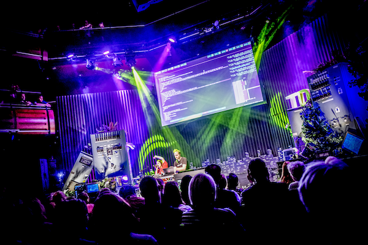 Jylda und Sam Aaron treten auf der Thinking Digital Conference im Sage Gateshead auf. Foto: TyneSight Photos.
Sonic Pi has been used to perform in a wide range of venues such as school halls, nightclubs, outdoor stages at musical festivals, college chapels and prestigious music venues. For example the amazing Convo project which brought 1000 children together in the Royal Albert Hall to perform an ambitious new composition by composer Charlotte Harding. The piece was written for traditional instruments, choirs, percussion and Sonic Pi code. The pop-artist Jylda also performed with Sonic Pi in the Sage Gateshead for the Thinking Digital Conference, where she created a unique live-coded improvised remix of her song Reeled.
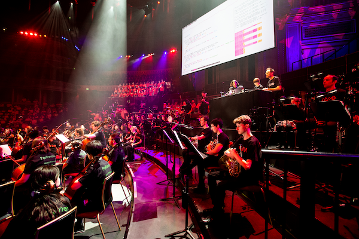 Sonic Pi used as one of the instruments as part of Convo at the Royal Albert Hall. Photo credit: Pete Jones.
Live coding in the classroom
Sonic Pi is a code-based music creation and performance tool that builds on all of these ideas. Unlike the majority of computing education software, it is both simple enough to use for education and also powerful enough for professionals. It has been used to perform in international music festivals, used to compose in a range of styles from classical, EDM and heavy metal, and was even reviewed in the Rolling Stone magazine. It has a diverse community of over 1.5 million live coders with a variety of backgrounds all learning and sharing their ideas and thoughts through the medium of code. It is free to download for Mac, PC and Raspberry Pi and includes a friendly tutorial that assumes you know nothing about either code or music.
Sonic Pi was initially conceived as a response to the UK's newly released Computing curriculum in 2014. The goal was to find a motivating and fun way to teach the fundamentals of programming. It turns out that there is a lot in common and it's huge fun to explain sequencing as melody, iteration as rhythm, conditionals as musical variety. I developed the initial designs and first iterations of the platform with Carrie Anne Philbin, who brought a teacher’s perspective to the project. Since then, Sonic Pi has undergone iterative improvements thanks to the feedback gained from observing learners and collaborating directly with educators in the classroom. A core design philosophy was to never add a feature that couldn't be easily taught to a 10 year old child. This meant that most ideas had to be heavily refined and reworked until they were simple enough. Making things simple whilst keeping them powerful continues to be the hardest part of the project.
In order to provide the magical motivation, Sonic Pi's design was never limited to a pure focus on education. Ideally there would be famous musicians and performers using Sonic Pi as a standard instrument alongside guitars, drums, vocals, synths, violins, etc. These performers would then act as motivational role models demonstrating the creative potential of code. For this to be possible sufficient focus and effort therefore had to be placed on making it a powerful instrument whilst still keeping it simple enough for 10 year olds to pick up. In addition to educators, I also worked directly with a variety of different artists in classrooms, art galleries, studios and venues in the early stages of Sonic Pi’s development. This provided essential feedback which enabled Sonic Pi to grow and ultimately flourish as a tool for creative expression.
There were a number of exciting and unexpected side effects of this dual focus on education and professional musicians. Many of the features are beneficial to both groups. For example, a lot of effort has been put into making error messages more friendly and useful (rather than being a huge complicated mess of jargon). This turns out to be very useful when you write a bug while performing in front of thousands of people. Additionally, functionality such as playing studio quality audio samples, adding audio effects, providing access to live audio from the microphone all turn out to make the learning experience more fun, rewarding and ultimately meaningful.
The Sonic Pi community continues to grow and share amazing code compositions, lesson plans, musical algorithms, and much more. Much of this happens on our friendly forum in_thread (in-thread.sonic-pi.net) which is home to a very diverse group of people that includes educators, musicians, programmers, artists and makers. It is a real joy to see people learn to use code to express themselves in new ways and for that in turn to inspire others to do the same.
Some fun capabilities
From a Computer Science perspective, Sonic Pi provides you with the building blocks to teach you the basics as found in the UK's curriculum such as sequencing, iteration, conditionals, functions, data structures, algorithms, etc. However, it also builds on a number of important and relevant concepts which have become adopted in mainstream industry such as concurrency, events, pattern matching, distributed computing and determinism - all whilst keeping things simple enough to explain to a 10 year old child.
Der Einstieg ist ganz einfach:
play 70
A melody can be constructed with one more command, sleep:
play 72
sleep 0.5
play 75
sleep 0.5
play 79
In this example, we play the note 70 (roughly the 70th note on a piano), wait for 1 second, play note 72, wait for half a second and then play note 75. What's interesting here is that with just two commands we have access to pretty much all of Western notation (which notes to play and when) and learners can code any melody they've ever heard. This leads to huge variety in expressive outcomes whilst focussing on the same computing concept: sequencing in this case.
Taking ideas from the professional music world, we can also play back any recorded sound. Sonic Pi can play any audio file on your computer but also has a number of sounds built-in to make things easy to get started:
sample :loop_amen
This code will play back the drum break which was a pillarstone to early hip-hop, Drum and Bass and Jungle. For example, a number of early hip-hop artists played this drum break back at half speed to give it a more laid-back feeling:
sample :loop_amen, rate: 0.5
In the 90s a number of music scenes burst out of new technology which enabled artists to take drum breaks like this apart and reassemble in a different order. For example:
live_loop :jungle do
sample :loop_amen, onset: pick
sleep 0.125
end
In diesem Beispiel führen wir eine einfache Schleife mit dem Namen :jungle ein, die einen zufälligen Trommelschlag aus unserem Audio Sample auswählt, eine achtel Sekunde wartet und dann einen weiteren Trommelschlag abspielt. Das Ergebnis ist eine endlose Folge von Trommelschlägen zum dabei Tanzen, während Du erfährst, was eine Schleife ist.
Unentbehrliche Kenntnisse
In diesem Kapitel findest Du sehr nützliches - nein, unentbehrliches - Wissen, um das Bestmögliche aus Sonic Pi herauszuholen.
Wir behandeln viele der verfügbaren Tastaturkürzel, zeigen, wie Du Deine Ergebnisse mit anderen teilen kannst, und geben Dir Tipps für Auftritte mit Sonic Pi.
10.1 Tastaturkürzel
Sonic Pi ist zu gleichen Teilen Musikinstrument und Programmierumgebung. Mit Tastaturkürzeln kannst Du Sonic Pi viel effizienter und natürlicher spielen - insbesondere, wenn Du live vor Publikum spielst.
Sehr vieles in Sonic Pi kann mit der Tastatur gesteuert werden. Je vertrauter Du mit Sonic Pi wirst, umso mehr wirst Du diese Tastaturkürzel verwenden. Ich selbst tippe, ohne die Tastatur anzusehen (und kann Dir nur empfehlen, das Zehnfingersystem auch zu lernen). Und ich bin jedes Mal frustriert, wenn ich zur Maus greifen muss, denn das macht mich langsam. Deshalb benutze ich ständig Tastaturkürzel!
Wer die Tastaturkürzel beherrscht, kann auch seine Tastatur viel effektiver benutzen und in kürzester Zeit wirst Du programmieren wie ein Profi.
Versuche aber nicht, alle auf einmal zu lernen, merke dir erst einmal die, welche du am häufigsten brauchst und füge später weitere deinem Repertoire hinzu.
Konsistenz auf verschiedenen Plattformen
Stell Dir vor, Du lernst Klarinette. Du kannst davon ausgehen, dass alle Klarinetten aller Marken gleiche Mechaniken und Fingersätze haben. Hätten sie das nicht, könntest Du nicht ohne weiteres zwischen verschiedenen Klarinetten hin- und her wechseln. Sondern müsstest immer bei einer Marke bleiben.
Unglücklicherweise haben die drei wesentlichen Betriebssysteme (Linux, Mac OS X und Windows) alle ihre eigenen typischen Tastaturkürzel für Aktionen wie z.B. Kopieren, Ausschneiden und Einfügen. Sonic Pi nutzt diese Standards wo immer möglich. Jedoch liegt die Priorität auf plattformübergreifender Konsistenz innerhalb von Sonic Pi, nicht auf dem Versuch, die Standards der jeweiligen Plattform vollumfänglich zu erfüllen. Das bedeutet, dass die in Sonic Pi auf dem Raspberry Pi gelernten Tastaturkürzel ebenso auf einem Mac oder PC mit Sonic Pi funktionieren.
Control und Meta
Für diese Konsistenz müssen wir auch die Namen der Tastaturkürzel entsprechend auswählen. In Sonic Pi verwenden wir die Namen Control und Meta für die beiden wichtigsten Kombinationstasten. Control (Ctrl - oder Strg für "Steuerung" auf deutschen Tastaturen) ist auf allen Plattformen gleich. Auf Linux und Windows ist Meta die Alt-Taste, während Meta auf dem Mac die Command-Taste ist. Um konsistent zu bleiben, nutzen wir den Begriff Meta - diesem musst Du mental die passende Taste Deines Betriebssystems zuordnen.
Abkürzungen
Um die Dinge einfach und lesbar zu halten, werden wir die Abkürzungen C- für Control und eine weitere Taste sowie M- für Meta und eine weitere Taste verwenden. Wenn ein Tastaturkürzel beispielsweise erfordert, dass Du Meta und r gleichzeitig drückst, werden wir die Abkürzung M-r verwenden. Der Bindestrich in der Mitte (-) bedeutet nur "zur gleichen Zeit."
Hier sind ein paar der Tastaturkürzel, die ich am nützlichsten finde.
Starten und Stoppen
Du musst nicht immer zur Maus greifen, um Deinen Code auszuführen. Drücke stattdessen einfach M-r zum Abspielen. Mit M-s stoppst Du die Musik.
Navigation
Ohne die Tastenkürzel zur Navigation bin ich verloren. Deshalb empfehle ich Dir dringend, diese Kürzel zu lernen. Sie funktionieren besonders gut, wenn Du das Zehnfingersystem schon halbwegs beherrschst, da sie normale Buchstaben verwenden - so musst Du Deine Hand nicht zur Maus oder zu den Pfeiltasten bewegen.
Mit C-a springst Du an den Anfang, mit C-e ans Ende einer Zeile. Eine Zeile nach oben geht es mit C-p, eine nach unten mit C-n, ein Zeichen vorwärts mit C-f und eines nach hinten mit C-b. Du kannst auch alle Zeichen von der aktuellen Cursorposition bis zum Ende der Zeile mit C-k löschen.
Code aufräumen
Um Deinen Code sauber einzurücken, drücke M-m.
Hilfesystem
Zum Hilfesystem kommst Du mit M-i. Noch hilfreicher ist allerdings C-i, damit wird Dir für das Wort, auf dem der Cursor gerade steht, sofort die passende Stelle in der Dokumentation gezeigt. Sofortige Hilfe!
Eine Liste aller Tastaturkürzel ist in Kapitel 10.2 "Cheatsheet für Tastenkürzel" enthalten.
10.2 Cheatsheet für Tastaturkürzel
In diesem Abschnitt findest Du eine Zusammenfassung der wichtigsten Tastenkürzel von Sonic Pi. In Abschnitt 10.1 erklärte ich Dir bereits, warum diese so nützlich sind.
Konventionen
Wir verwenden die folgenden Konventionen (Meta ist Alt auf Windows und Linux und Cmd auf dem Mac wie in 10.1 beschrieben):
C-abedeutet, die Control (Strg auf deutschen Tastaturen) zu drücken und zu halten, dabei a zu drücken und danach beide Tasten wieder los zu lassen.M-rbedeutet, Meta zu drücken und zu halten, dabei die r-Taste zu drücken und danach beide wieder los zu lassen.S-M-zbedeutet, die Meta-Taste zu drücken und zu halten, dann Shift zu drücken und zu halten und schließlich die z-Taste und alle drei Tasten gleichzeitig wieder los zu lassen.C-M-fbedeutet, Control zu drücken und zu halten, dann Meta zu drücken und zu halten, dann f zu drücken und alle drei Tasten gleichzeitig wieder los zu lassen.
Steuerung der Hauptanwendung
M-r- Code ausführenM-s- Code-Ausführung stoppenM-i- Hilfesystem ein-/ausschaltenM-p- Einstellungen ein-/ausschaltenM-<- Zum Puffer links wechselnM->- Zum Puffer rechts wechselnS-M-0- Switch to buffer 0S-M-1- Switch to buffer 1- ...
S-M-9- Switch to buffer 9M-+- Schrift des Puffers vergrößernM--- Schrift des Puffers verkleinern
Auswahl/Kopieren/Einfügen
M-a- Alles auswählenM-c- Auswahl in den Zwischenspeicher kopierenM-]- Auswahl in den Zwischenspeicher kopierenM-x- Auswahl ausschneiden und im Zwischenspeicher ablegenC-]- Auswahl ausschneiden und im Zwischenspeicher ablegenC-k- Text ab Cursor bis zum Ende der Zeile ausschneidenM-v- Inhalt des Zwischenspeichers in den Editor kopierenC-y- Inhalt des Zwischenspeichers in den Editor kopierenC-SPACE- Markierung setzen. Textauswahl ab jetzt von hier bis zum Cursor.C-glöscht die Markierung.
Text-Manipulation
M-m- Gesamten Code ausrichtenTab- Aktuelle Codezeile oder Auswahl ausrichtenC-l- Editor zentrierenM-/- Aktuelle Codezeile auskommentierenC-t- Zeichen vertauschenM-u- Das nächste Wort oder Auswahl in Großbuchstaben wandeln.M-l- Das nächste Wort oder Auswahl in Kleinbuchstaben wandeln.
Navigation
C-a- An den Anfang der Zeile springenC-e- Ans Ende der Zeile springenC-p- Zur vorherigen Zeile springenC-n- Zur nächsten Zeile springenC-f- Ein Zeichen vorwärtsC-b- Ein Zeichen zurückM-f- Ein Wort nach vorneM-b- Ein Wort zurückC-M-n- Zeile oder Auswahl nach unten schiebenC-M-p- Zeile oder Auswahl nach unten schiebenS-M-u- 10 Zeilen nach oben springenS-M-d- 10 Zeilen nach unten springenM-<- Zum Anfang des Puffers gehenM->- Zum Ende des Puffers gehen
Löschen
C-h- Vorangegangenes Zeichen löschenC-d- Nächstes Zeichen löschen
Fortgeschrittene Funktionen des Editors
C-i- Dokumentation für das Wort unter dem Cursor anzeigenM-z- Rückgängig ("Undo")S-M-z- Wiederholen ("Redo")C-g- EscapeS-M-f- Vollbildmodus ein-/ausschaltenS-M-b- Buttons ein-/ausschaltenS-M-l- Anzeige Protokoll-Fenster ein-/ausS-M-m- Dunkle Benutzeroberfläche ein-/ausschaltenS-M-s- Inhalt des Puffers in Datei speichernS-M-o- Datei in einen Puffer laden
10.3 Teilen
In Sonic Pi geht es vor allen Dingen um das Teilen und gemeinsame Lernen.
Sobald Du gelernt hast, Musik zu programmieren, kannst Du Deine Kompositionen ganz leicht mit anderen teilen: Schicke Deinen Code einfach mit einer E-Mail an Deine Freunde. Ich möchte Dich ermuntern, Deinen Code mit anderen zu teilen, so dass sie von Deiner Arbeit lernen und Teile davon in neuen Mash-Ups verwenden können.
Du hast keine Ahnung, wo Du Deine Werke am besten mit anderen teilen kannst? Ich empfehle Dir für Deinen Code GitHub und für Deine Musik SoundCloud. So erreichst Du schnell ein großes Publikum.
Code -> GitHub
GitHub wird von professionellen Entwicklern und auch Künstlern verwendet, um Code zu teilen und zusammenzuarbeiten. Auf GitHub gibt es einen eigenen Bereich namens Gist, damit kann man besonders einfach ein neues Stück Code (egal ob fertig oder nicht) veröffentlichen. Mit einem Gist können dann auch andere Deinen Code übernehmen, kommentieren und verbessern.
Audio -> SoundCloud
Statt Code kannst Du auch eine Musikaufnahme veröffentlichen und dafür eine Audiodatei zu SoundCloud hochladen. Dort können andere Nutzer Kommentare dazu abgeben und die Musik diskutieren. Es ist empfehlenswert, bei einer Veröffentlichung auf Soundcloud zusätzlich einen Link zu einem Gist mit Deinen Code in die Beschreibung aufzunehmen.
Um Dein Stück aufzunehmen, drücke den Aufnehmen-Knopf in der Werkzeugleiste, die Aufnahme startet dann sofort. Drücke Ausführen, um Deinen Code zu starten, wenn er nicht bereits läuft. Wenn Du fertig bist, drücke den blinkenden Aufnehmen-Knopf erneut. Du wirst dann nach einem Dateinamen gefragt, unter dem die Aufnahme als WAV-Datei gespeichert wird. Es gibt viele Werkzeuge, um eine WAV-Datei in ein MP3 zu wandeln, z.B. das Programm Audacity.
Hoffnung
Ich möchte Dich ermuntern, Deine Arbeiten zu teilen, und hoffe sehr, dass wir uns gegenseitig neue Sonic-Pi-Tipps und -Tricks beibringen werden. Ich bin schon sehr gespannt darauf, was Du mir zeigen wirst.
10.4 Auftritte
Einer der aufregendsten Aspekte von Sonic Pi ist, dass Du von nun an Code als Musikinstrument verwenden kannst. Vor Publikum zu programmieren wird damit ein neuer Weg, um Musik aufzuführen.
Das nennen wir Live-Coding.
Zeig Deinen Bildschirm
Wenn Du live programmierst, empfehle ich Dir, Deinem Publikum Deinen Bildschirm zu zeigen. Beim Gitarrespielen versteckst Du ja auch nicht Deine Finger und die Saiten Deines Instruments. Wenn ich zu Hause übe, verwende ich einen Raspberry Pi und projiziere den Bildschirm mit einem kleinen Beamer an meine Wohnzimmerwand. Du könntest auch Deinen Fernseher oder einen Projektor in der Schule/Arbeit verwenden und eine kleine Show geben. Versuch es, das macht eine Menge Spaß.
Gründe eine Band
Don't just play on your own - form a live coding band! It's a lot of fun jamming with others. One person could do beats, another ambient background, etc. Use the live_audio functionality to combine code with traditional instruments such as a guitar or a microphone.
See what interesting combinations of sounds you can create with code.
TOPLAP
Live-Coding ist nicht wirklich neu - eine kleine Gruppe von Enthusiasten macht das schon seit Jahren, typischerweise mit selbstgebauten, individuellen Systemen. Bei TOPLAP erfährst Du mehr über diese anderen Live-Coder und ihre Geräte.
Algorave
Einige Live-Coder spielen auch in Nightclubs. Mehr über dieses spezielle Genre erfährst Du auf Algorave.